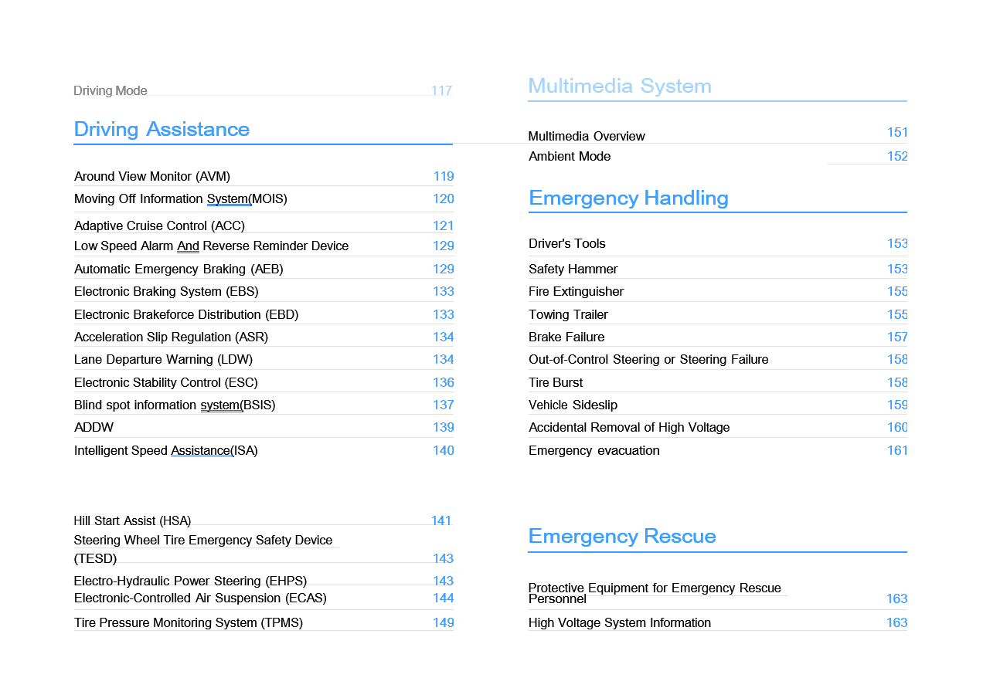
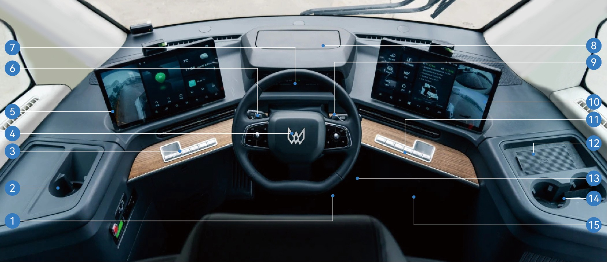
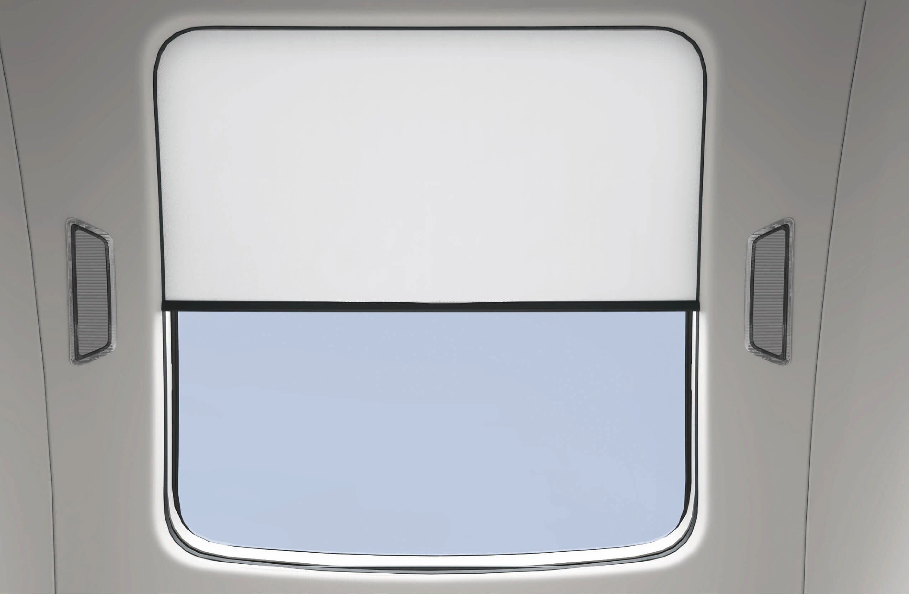
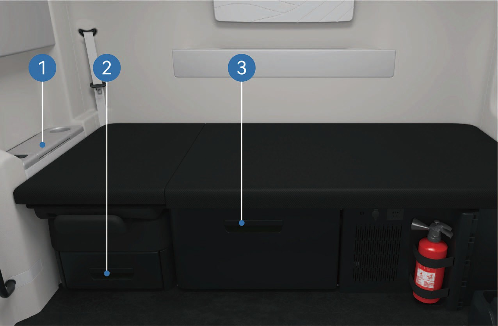
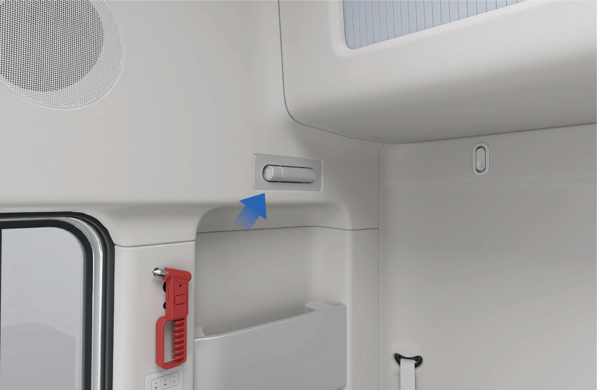
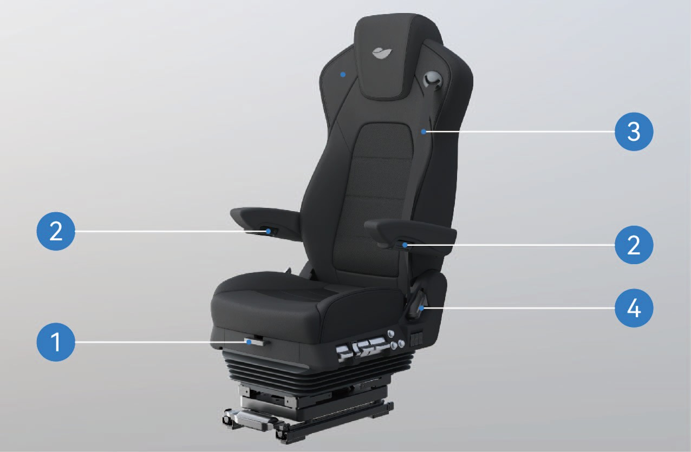
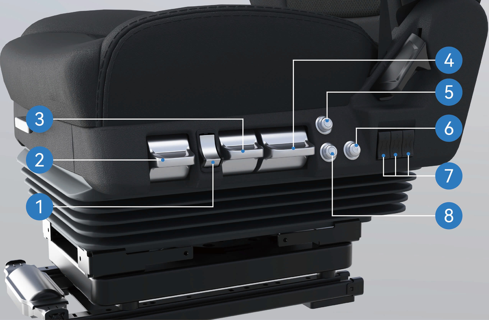
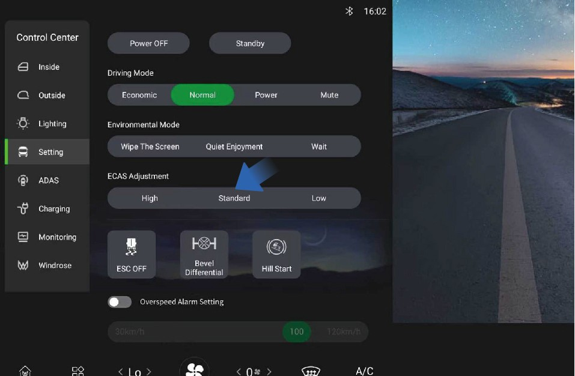
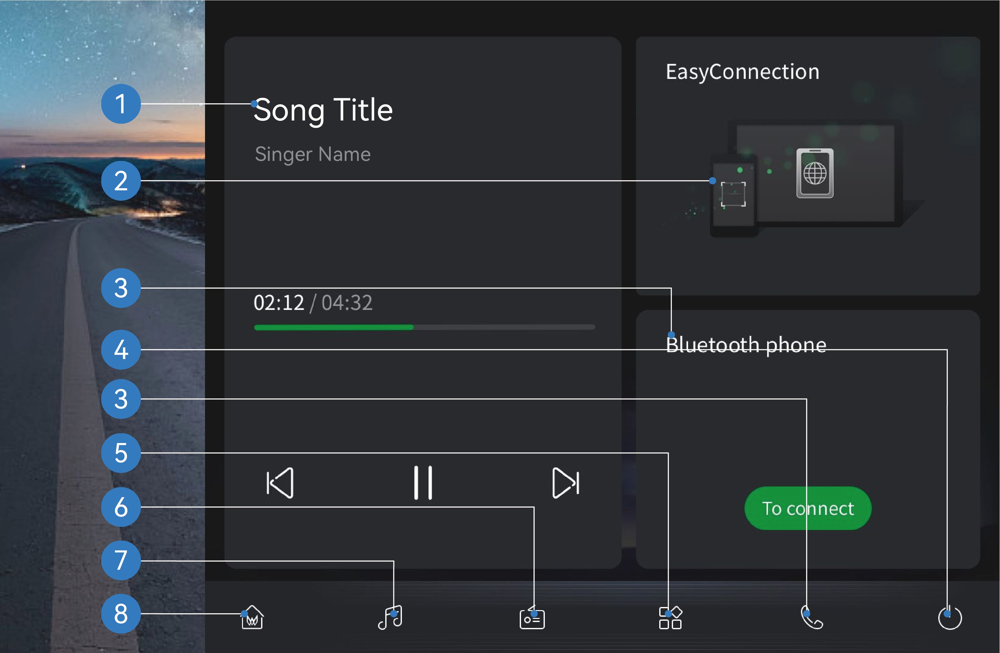
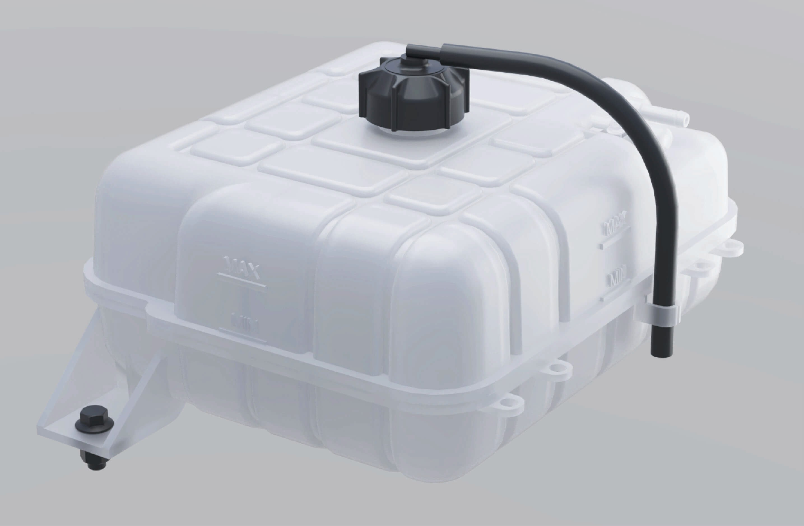

Caro Cliente,
Obrigado por escolher o seu veículo Windrose.
Leia atentamente este Manual do Proprietário antes de conduzir o veículo pela primeira vez. Contém informações importantes sobre as características do veículo, a operação segura, os requisitos de manutenção e as especificações técnicas. Familiarizar-se com estas informações contribuirá para uma condução segura e para o desempenho ideal do veículo.
Devido às diferentes configurações do veículo e equipamentos opcionais, o veículo entregue poderá diferir ligeiramente das descrições ou ilustrações neste manual. A Windrose reserva-se o direito de modificar o design, as especificações e os equipamentos do veículo sem aviso prévio, no âmbito da melhoria contínua do produto.
As informações, ilustrações e dados técnicos neste manual eram exatos à data de publicação. São fornecidos apenas para referência e não constituem um compromisso contratual.
Nenhuma parte deste Manual do Proprietário pode ser reproduzida ou transmitida sob qualquer forma sem autorização prévia por escrito da Windrose.
Nota: As imagens da capa e as ilustrações neste manual são apenas para fins de referência. A aparência e as especificações reais do veículo podem variar.
Índice




Notas ao Utilizador
↑ TopoAntes de Conduzir
Este veículo é um trator elétrico a bateria.
Durante as operações diárias e a manutenção, siga todos os avisos e instruções fornecidos neste Manual do Proprietário (referido abaixo como "este manual") para evitar danos no veículo ou lesões pessoais.
Antes de conduzir o veículo pela primeira vez, leia este manual atentamente para se familiarizar com as suas características e requisitos de operação. Se encontrar algum problema durante a utilização, contacte a linha de apoio da Windrose.
Os direitos de autor deste manual são propriedade da Windrose. Nenhuma parte deste manual pode ser reproduzida, transmitida ou distribuída sem autorização prévia por escrito da Windrose.
A Windrose reserva-se o direito de atualizar o conteúdo deste manual sem aviso prévio, no âmbito da melhoria contínua do produto. Consulte o Manual do Proprietário eletrónico disponível no ecrã central ou na aplicação móvel da Windrose para obter as informações mais recentes sobre o veículo.
Sítio web da Windrose:
Linha de apoio da Windrose:Pode pesquisar "Windrose" na loja de aplicações oficial para descarregar a aplicação.
NotaAs abreviaturas são apresentadas no formato "nome completo (abreviatura)" quando mencionadas pela primeira vez. Posteriormente, será utilizada a abreviatura.
Descrição de Avisos
↑ TopoAntes de Conduzir
As seguintes palavras de sinalização e símbolos são utilizados neste manual:
AvisoIndica uma situação perigosa que, se não for evitada, poderá resultar em ferimentos graves ou morte.
Aviso
↑ TopoAvisoIndica uma situação que pode causar danos no veículo ou nos seus componentes.
Nota
↑ TopoNotaFornece informações adicionais úteis ou orientações operacionais.
Proteção ambiental
↑ TopoProteção ambientalIndica informações relacionadas com a proteção ambiental ou a eficiência energética.
Asterisco
↑ TopoUm asterisco (*) após o nome de uma função indica que a função se aplica apenas a determinados modelos de veículo ou configurações opcionais.
Informação sobre ilustrações
↑ Topo
Esta seta indica a localização exata do objeto conforme mostrado na imagem.
Esta seta indica a direção de movimento do objeto conforme mostrado na imagem.
Esta seta indica a direção de rotação do objeto conforme mostrado na imagem.
Esta seta indica a direção de articulação do objeto conforme mostrado na imagem.
Proteção Ambiental
↑ TopoAntes de Conduzir
A Windrose está empenhada no desenvolvimento sustentável e na proteção ambiental. Este veículo foi concebido para melhorar a eficiência energética e reduzir as emissões. Pode contribuir para a proteção ambiental conduzindo de forma responsável e operando o veículo de maneira eficiente em termos energéticos.
Segurança de Operação
Antes de Conduzir
Respeite sempre o peso bruto máximo permitido e a carga por eixo. Não sobrecarregue o veículo, pois a sobrecarga pode resultar em danos no veículo, perda de controlo ou ferimentos pessoais.
Substitua qualquer cinto de segurança que tenha sido sujeito a forças de impacto numa colisão, mesmo que não sejam visíveis danos
Avisovisíveis.
Aviso
Nunca circule em ponto morto numa descida. Isto elimina a travagem pelo motor de tração e pode resultar na perda de controlo do veículo.
Antes de conduzir, ajuste o assento para a posição correta. Uma posição de assento incorreta pode causar fadiga, movimento inesperado do assento ou perda de controlo do veículo. Certifique-se de que a posição do assento permite a utilização adequada do cinto de segurança.
Os cintos de segurança são dispositivos de segurança essenciais. Todos os ocupantes devem usar os cintos de segurança corretamente sempre que o veículo esteja em movimento.
Não incline excessivamente o encosto do assento durante a condução. Em caso de travagem de emergência, uma posição de assento incorreta pode
reduzir a eficácia do cinto de segurança.
Não exceda 30 km/h em nenhuma das seguintes situações:
Ao entrar ou sair de faixas de circulação não motorizadas, passagens de nível, curvas apertadas, estradas estreitas ou pontes.
Ao fazer inversão de marcha, virar ou descer uma inclinação acentuada.
A visibilidade é inferior a 50 m devido a nevoeiro, chuva, neve, poeira ou granizo.
A conduzir em estradas com gelo, neve ou lama.
A rebocar um veículo avariado.
↑ Topo
AvisoAo conduzir perto de um observatório de radioastronomia, mantenha uma distância de segurança. Os veículos equipados com radar podem causar interferências eletromagnéticas nos equipamentos do observatório.
Peças Genuínas
Antes de Conduzir
A Windrose não prestará cobertura de garantia para peças nas seguintes circunstâncias:
Modificações não autorizadas do veículo, em particular em sistemas relacionados com a segurança de condução (por exemplo, sistemas de alta tensão, sistemas elétricos, travagem, direção ou TBOX).
Adulteração do sistema OBD do veículo.
Utilização de peças ou fluidos não aprovados que resultem em riscos de segurança ou danos no veículo.
Incapacidade de fornecer documentação que confirme a utilização de fluidos aprovados durante o período de garantia.
Incapacidade de efetuar a manutenção do veículo num centro de assistência autorizado Windrose de acordo com os requisitos de manutenção.
Segurança de Dados
↑ TopoAntes de Conduzir
De acordo com as leis e regulamentos aplicáveis, a Windrose recolhe e processa dados do veículo, incluindo informações de localização, dados de comportamento de condução, gravações de áudio e vídeo, e informações pessoais.
A Windrose implementa medidas técnicas e organizacionais adequadas para proteger esses dados em conformidade com os regulamentos de proteção de dados aplicáveis e as normas do setor.
Modificação do Veículo
Antes de Conduzir
↑ TopoDocumentação necessária antes da modificação
Qualquer modificação do veículo deve cumprir os requisitos técnicos e regulamentares aplicáveis. Antes da modificação, a documentação técnica relevante deve ser submetida à Windrose.
A documentação deve incluir, no mínimo:
Finalidade e condições de operação do veículo modificado.
Peso bruto total e cargas por eixo após a modificação.
Dimensões globais do veículo modificado (incluindo configuração de trabalho).
Altura do piso da carroçaria em relação ao nível do solo.
Método de fixação da carroçaria.
Desenho esquemático do subchassis.
Abate do Veículo
Antes de Conduzir
↑ TopoOs veículos que já não cumpram os requisitos de aptidão para circulação devem ser eliminados em conformidade com os regulamentos ambientais aplicáveis.
O abate do veículo e a reciclagem da bateria de alta tensão devem ser realizados pela Windrose ou por organizações de reciclagem autorizadas.
AvisoA eliminação incorreta de baterias de alta tensão pode causar incêndio ou danos ambientais. Não desmonte nem descarte baterias de alta tensão sem autorização.
Reciclagem da bateria de alta tensão
A Windrose testará a capacidade e o estado da bateria de alta tensão, e reciclará a bateria de alta tensão de acordo com as leis, regulamentos e condições de mercado aplicáveis nesse momento.
Reciclagem da bateria de alta tensão: A reciclagem e o processamento subsequente devem ser efetuados pela Windrose ou por uma organização de reciclagem terceira designada pela Windrose.
Transporte da bateria de alta tensão: As baterias de alta tensão são transportadas por uma agência de transporte especializada. Contacte o centro de assistência autorizado Windrose para notificar uma agência de reciclagem especializada para o processamento.
Aviso
Não elimine nem descarte as baterias de alta tensão usadas para evitar incêndios acidentais ou graves poluições no ambiente.
Não entregue baterias de alta tensão usadas a outras entidades ou indivíduos. Será responsabilizado por quaisquer poluições ambientais ou acidentes de segurança causados pela desmontagem de baterias de alta tensão sem autorização.
Condução Ecológica
Antes de Conduzir
As seguintes práticas ajudarão a maximizar a autonomia de condução e a eficiência energética:
Mantenha uma velocidade constante e evite acelerações ou travagens bruscas.
Mantenha o veículo em boas condições de funcionamento através de manutenção regular.
Nunca circule em ponto morto, pois isso causará lubrificação insuficiente do eixo elétrico, levando a danos nos componentes.
Condução em Inverno
↑ TopoAntes de Conduzir
Preparação para a condução em inverno
Utilize líquido de arrefecimento de alta qualidade adequado à temperatura mínima, e o ponto de congelação do líquido de arrefecimento deve ser inferior à temperatura mínima local.
Certifique-se de que a bateria está sempre completamente carregada para evitar que a bateria congele a baixas temperaturas.
Utilização do líquido de arrefecimento em inverno
↑ TopoNa estação fria ou quando o veículo estiver estacionado num local frio, devem ser asseguradas as propriedades anticongelantes do líquido de arrefecimento. Utilize o líquido de arrefecimento recomendado pela Windrose.
Precauções na condução em inverno
Recomenda-se a utilização de correntes de neve ou pneus de neve.
Evite acelerações bruscas, travagens bruscas e curvas rápidas a alta velocidade.
Ao conduzir em estradas cobertas de neve e gelo, mantenha uma velocidade baixa para garantir uma melhor eficácia do travão de serviço.
Mantenha uma distância razoável entre veículos (aumente a distância entre veículos ao conduzir em tempo de chuva e neve
Após a instalação das correntes de neve, arranque o veículo e verifique se as correntes estão soltas ou se os pneus não estão corretamente montados.
↑ TopoAvisoAo utilizar correntes de neve, é proibido exceder a velocidade máxima de condução efetiva para evitar acidentes.
ou em estradas com gelo pode aumentar a distância de travagem do travão de serviço).
Utilização de Correntes de Neve
Antes de Conduzir
Ao utilizar correntes de neve, preste atenção ao seguinte:
Recomenda-se a utilização de correntes de neve ao conduzir em estradas cobertas com camadas espessas de neve ou gelo.
As correntes de neve devem ser compatíveis com o tamanho e tipo de pneu do veículo.
Coloque as correntes de neve nos pneus exteriores do eixo de tração (em ambos os lados).
Tenha cuidado para não danificar os pneus ao colocar ou remover as correntes de neve.
Aviso
 Ao conduzir em estradas longas sem neve e gelo, retire as correntes de neve.
Ao conduzir em estradas longas sem neve e gelo, retire as correntes de neve.Certifique-se de que as correntes de neve não entram em contacto nem interferem com quaisquer componentes do veículo durante a condução.
Coloque e retire as correntes de neve apenas quando o veículo estiver estacionado em terreno plano.
Condução em Zonas Tropicais e de Alta Temperatura
Antes de Conduzir
Verifique o estado do veículo antes de conduzir:
Verifique se o nível do líquido de arrefecimento está dentro do intervalo normal e inspecione para detetar fugas.
Não deixe itens inflamáveis (por exemplo, isqueiros, produtos em spray, perfumes) no painel de instrumentos ou expostos à luz solar direta por períodos prolongados. As altas temperaturas podem causar a rutura de recipientes pressurizados e criar um risco de incêndio.
Durante a condução, preste atenção ao seguinte:
as luzes se acenderem, pare de conduzir imediatamente e
contacte um centro de assistência autorizado Windrose.
Observe a pressão e a temperatura dos pneus. Se a pressão ou a temperatura dos pneus for anormal, pare imediatamente de conduzir e deixe os pneus arrefecer naturalmente. Não reduza a pressão nem arrefeça os pneus com água ou desinflando-os, pois isso pode acelerar facilmente o envelhecimento e o desgaste dos pneus, podendo resultar em rebentamentos de pneu em casos graves.
Se ocorrer um rebentamento de pneu durante a condução, prima imediatamente o interruptor de luzes de perigo, segure o volante com as mãos nas posições das 9 e 3 horas sem virar, e aplique o pedal do travão de forma intermitente para abrandar gradualmente o veículo e alertar outros utilizadores da estrada.
Monitorize a pressão e a temperatura dos pneus.
Se algum deles for anormal, imobilize o veículo assim que seja seguro fazê-lo e deixe os pneus arrefecer naturalmente. Não arrefeça os pneus com água nem os desinfle, pois isso pode acelerar o envelhecimento dos pneus e aumentar o risco de rebentamento.
Fique atento aos indicadores e luzes de aviso no painel de instrumentos e, se as luzes de aviso do veículo ou os MIL relacionados com o veículo se acenderem,
Condução em Estradas com Buracos e Estradas Escorregadias
Antes de Conduzir
Preste atenção ao seguinte ao conduzir em estradas com buracos e estradas escorregadias:
Em estradas com buracos, reduza a velocidade para melhorar o conforto e minimizar o desgaste dos componentes de suspensão e absorção de impactos.
Em estradas escorregadias, reduza a velocidade e aplique os travões suavemente para evitar a perda de aderência e a derrapagem do veículo.
Se o veículo começar a derrapar em superfícies molhadas ou escorregadias, reduza a velocidade suavemente utilizando o travão de serviço e evite movimentos bruscos de direção.
Condução em Rampas
↑ TopoAntes de Conduzir
Precauções na condução em subida
Se o veículo recuar ao arrancar numa inclinação, prima imediatamente o pedal do travão, aplique o travão de estacionamento eletrónico e, em seguida, reinicie o procedimento de arranque.
Ao subir, mantenha uma velocidade baixa e constante. Aplique o acelerador progressivamente e evite acelerações ou travagens bruscas.
Precauções na condução em descida
Reduza a velocidade antes da descida para que o veículo entre na descida a uma velocidade controlada.
Nunca circule em ponto morto numa descida. Isto elimina a travagem pelo motor de tração e pode resultar na perda de controlo do veículo.
Antes de descer, certifique-se de que o sistema de travagem está a funcionar corretamente. Se suspeitar de uma avaria, resolva o problema antes de continuar.
Evite movimentos bruscos de direção em estradas em declive para reduzir o risco de capotamento.
Em descidas longas, evite a travagem contínua. Utilize técnicas adequadas de controlo de velocidade e travagem para evitar o sobreaquecimento dos travões e possível perda de eficácia dos travões.
Comunicação de Defeitos de Segurança
↑ TopoAntes de Conduzir
Se suspeitar que o veículo tem um defeito relacionado com a segurança, pare o veículo num local seguro o mais rapidamente possível e contacte imediatamente o apoio ao cliente da Windrose ou uma estação de assistência autorizada Windrose.
A Windrose pode emitir avisos de segurança, campanhas de serviço ou recalls quando exigido pelas leis e regulamentos aplicáveis. Na União Europeia, os recalls de segurança de veículos são tratados ao abrigo do quadro de vigilância do mercado e homologação por tipo da UE e são coordenados com as autoridades nacionais de homologação por tipo e vigilância do mercado relevantes dos Estados-Membros em causa. Siga todas as instruções de segurança e requisitos de campanhas de serviço fornecidos pela Windrose.
Linha de apoio da Windrose: [DETALHES DE CONTACTO UE A CONFIRMAR]
Sítio web de assistência Windrose: [SÍTIO WEB DE ASSISTÊNCIA UE A CONFIRMAR]
Rede de assistência autorizada: [REDE DE ASSISTÊNCIA UE A CONFIRMAR]
Visão Geral do Exterior do Veículo
Identificação do Veículo

Pisca-pisca dianteiro / luz de circulação diurna
Luz de estacionamento 3. Teto panorâmico
4. Caixa de ferramentas lateral 5. Porta de carregamento

|
|
|
|
|
|
|---|---|---|---|---|---|
|
|
|
|
|
|
|
|
|
|
|
|
Visão Geral do Interior do Veículo
Identificação do Veículo

|
|
2. |
|
3. |
|
|---|
4.
Volante
Ecrã de infoentretenimento a bordo
Palheta de travagem regenerativa cinética (esquerda)
7.
Painel de instrumentos
Compartimento de arrumação do painel / AR-HUD*
Palheta de travagem regenerativa cinética (direita)
|
|
11. |
|
12. |
|
|---|---|---|---|---|---|
|
|
14. |
|
15. |
|
Placa de Identificação e VIN
Identificação do Veículo
Placa de identificação do veículo

A placa de identificação do veículo está localizada no aro da porta deslizante direita (pilar C) do veículo.
A placa apresenta as seguintes informações:
Nome do fabricante
Número de homologação por tipo do veículo completo (WVTA)
Número de Identificação do Veículo (VIN)
Massa máxima autorizada prevista para matrícula
Massa máxima tecnicamente admissível em carga
Outras informações regulamentares exigidas pelos regulamentos aplicáveis
Número de identificação do veículo

O Número de Identificação do Veículo (VIN) está estampado no longão direito do chassis, perto da linha central do eixo dianteiro.
Localização da Placa e Código do Motor
Identificação do Veículo

Localização da placa de identificação do motor
Localização do número de série do motor
Aviso
A impressão em relevo (gravação) do número de série do motor é fornecida juntamente com a documentação do motor quando o veículo sai da fábrica. Guarde este documento para referência futura.
Uma vez que os motores de tração fornecidos por diferentes fabricantes podem variar, as informações apresentadas na placa de identificação do motor e na documentação relacionada podem diferir. Consulte o produto real.
Transparência Micro-ondas / RF do Para-brisas Identificação do Veículo
O para-brisas deste veículo não contém revestimentos metálicos que interfiram com a transmissão de sinal de radiofrequência (RF).
Dispositivos de cobrança eletrónica de portagens (ETC), transponders de portagem, equipamentos de telemática ou outros dispositivos baseados em RF podem, por isso, ser instalados no para-brisas de acordo com as instruções de instalação fornecidas pelo fabricante do equipamento.
Porta Deslizante Elétrica
↑ TopoAcesso ao Veículo
A porta deslizante elétrica está instalada no lado direito do veículo. A porta pode ser aberta ou fechada através de vários métodos de operação.
Instruções de operação
Operação pelo exterior

↑ TopoElétrico: Quando o veículo estiver desbloqueado, prima o interruptor do puxador embutido. A porta deslizante elétrica abrirá ou fechará automaticamente.
Manual: Quando o veículo estiver desbloqueado:
1. Prima a extremidade dianteira do puxador embutido para o libertar.
2. Puxe o puxador para fora para desbloquear a porta deslizante.
3. Deslize a porta manualmente para abrir.

Entrar no veículo

Após a abertura da porta deslizante elétrica, entre na cabina seguindo os seguintes passos:
De frente para a porta, segure os pega-mãos esquerdo e direito com ambas as mãos.
Coloque um pé no degrau inferior e puxe-se para cima.
Coloque o outro pé no degrau superior.
Mova a mão inferior para uma posição mais alta no pega-mãos.
Entre na cabina do veículo.
Escorregar ou cair ao entrar ou sair do veículo pode resultar em ferimentos pessoais.
O calçado molhado ou sujo aumenta significativamente o risco de escorregamento. Tenha especial cuidado ao entrar ou sair da cabina.
Mantenha sempre três pontos de contacto com o veículo ao entrar ou sair da cabina (duas mãos e um pé, ou dois pés e uma mão).
Nunca salte do veículo.
Operação pelo interior
Quando o veículo estiver desbloqueado:

Selecione "Centro de Controlo" no ecrã de informações do veículo.
Mude para a interface "Interior".
Prima o botão de controlo "Porta Deslizante" para abrir ou fechar a porta deslizante elétrica.
Elétrico: Quando o veículo estiver desbloqueado, prima o interruptor localizado no painel do pilar B à frente da porta deslizante para abrir ou fechar a porta.
Manual: Se a porta deslizante estiver fechada, puxe o puxador interior para trás para desbloquear a porta e deslize-a manualmente para abrir.
Se a porta deslizante estiver aberta, segure o puxador interior e deslize a porta para a frente para a fechar.
Emergências no interior do veículo


Se o interruptor elétrico ou o puxador interior falhar:
Retire a tampa inferior do painel de proteção da porta deslizante.
Puxe o cabo de desbloqueio de emergência para desbloquear manualmente a porta deslizante.
Interruptor de fecho centralizado

Após o fecho da porta deslizante:
Prima o interruptor de fecho centralizado localizado no grupo de botões no lado direito do painel de instrumentos para bloquear a porta deslizante.
O indicador de estado acenderá quando a porta estiver bloqueada.
Prima novamente o interruptor para desbloquear a porta.
Modo manual da porta deslizante

O modo manual pode ser ativado ou desativado através do ecrã de informações do veículo:
Selecione "Centro de Controlo".
Mude para a interface "Monitorização".
Selecione "Modo Manual da Porta Deslizante".
↑ TopoQuando o modo manual estiver ativado, a porta deslizante só pode ser operada manualmente.
Função anti-esmagamento da Porta Deslizante
Durante o fecho automático, se a porta deslizante detetar um obstáculo, a porta para de fechar e reverte automaticamente para a posição aberta.
Precauções
↑ TopoAvisoA função anti-esmagamento só está ativa durante a operação de fecho elétrico. Não está ativa quando a porta é operada manualmente.
Cinto de Segurança
↑ TopoAcesso ao Veículo
O lugar do condutor e o lugar do passageiro da frente estão equipados com cintos de segurança. Os cintos de segurança ajudam a prevenir ou reduzir lesões nos ocupantes durante travagens de emergência ou colisões.
Instruções de operação
↑ TopoO cinto de segurança do lugar do condutor está localizado no lado esquerdo do assento do condutor e pode ser puxado diretamente para apertar.
O cinto de segurança do passageiro da frente está localizado no lado direito do assento do passageiro da frente. Quando o lugar do passageiro estiver ocupado, lembre o passageiro de colocar corretamente o cinto de segurança antes de o veículo começar a mover-se.
Utilização Correta do Cinto de Segurança
Observe as seguintes orientações ao colocar um cinto de segurança:
• A parte abdominal do cinto deve assentar baixa sobre a bacia (ancas) e não sobre o abdómen.
• O cinto deve ajustar-se firmemente ao corpo sem torções.
• A parte do ombro deve passar pelo meio do ombro.
• Nunca posicione o cinto sobre o pescoço ou por baixo do braço.
• Após apertar o cinto de segurança, puxe a parte do ombro para cima para garantir que a parte abdominal assenta firmemente sobre as ancas.
• Verifique sempre se o cinto de segurança está corretamente engatado antes de conduzir.
Lembrete do Cinto de Segurança
Se o cinto de segurança do condutor não estiver apertado, a luz de aviso do cinto de segurança no painel de instrumentos acenderá.
Assim que o condutor apertar o cinto de segurança, a luz de aviso apagará.
Limpeza dos Cintos de Segurança
Se um cinto de segurança ficar sujo, limpe-o com água e sabão suave.
1. Puxe o cinto de segurança completamente para fora e fixe-o no lugar.
2. Aplique uma solução de sabão suave na área contaminada.
3. Limpe suavemente o cinto com uma escova ou pano macio.
4. Enxágue com água limpa se necessário.
5. Deixe o cinto de segurança secar completamente antes de o recolher.
Não recolha um cinto de segurança molhado para o mecanismo de retração.

Precauções
AvisoTodos os ocupantes devem usar os cintos de segurança corretamente enquanto o veículo estiver em movimento. A utilização correta dos cintos de segurança reduz significativamente o risco de lesões durante travagens de emergência ou colisões.
A não utilização do cinto de segurança ou a utilização incorreta pode resultar em ferimentos graves ou morte.
Não se sente em áreas que não estejam equipadas com assento e cinto de segurança.
Não utilize um cinto de segurança danificado ou com mau funcionamento.
Cada cinto de segurança foi concebido para um ocupante apenas. Nunca partilhe um cinto de segurança com outra pessoa.
Nunca coloque o cinto do ombro à volta do pescoço ou por baixo do braço.
Não remova, modifique nem adultere o sistema de cintos de segurança.
Não utilize lixívia, corantes ou solventes químicos para limpar os cintos de segurança, pois estes podem enfraquecer o material do cinto.
Vidros Elétricos
↑ TopoAcesso ao Veículo
Os vidros laterais podem ser operados através dos interruptores de controlo dos vidros localizados no lado esquerdo do painel de instrumentos ou no painel de controlo da cama.
O veículo está equipado com uma função de fecho automático dos vidros. Quando o veículo for desligado e bloqueado, os vidros fecharão automaticamente se não estiverem completamente fechados.
Instruções de operação
Ajuste dos vidros através do botão de combinação

Interruptor de controlo do vidro esquerdo: Prima e mantenha premidos os botões de interruptor para cima e para baixo para controlar a abertura do vidro esquerdo; Prima e solte o botão de interruptor do vidro esquerdo para cima e para baixo para subir ou descer o vidro esquerdo com um único toque.
Interruptor de controlo do vidro direito: Prima e mantenha premidos os botões de interruptor para cima e para baixo para controlar a abertura do vidro direito; Prima e solte o botão de interruptor do vidro direito para cima
e para baixo para subir ou descer o vidro direito com um único toque.
Ajuste dos vidros através do interruptor da cama

Interruptor de controlo do vidro esquerdo: Prima e mantenha premidos os botões de interruptor para cima e para baixo
↑ Topopara fechar ou abrir automaticamente o vidro por completo (subida/descida com um único toque).
Precauções
Aviso
Antes de fechar os vidros, é importante garantir que nenhum passageiro tem qualquer parte do corpo para fora, caso contrário poderão ocorrer ferimentos graves.
Não opere os vidros a altas velocidades.
NotaRemova a neve e o gelo da superfície do vidro atempadamente para evitar bloqueios durante o movimento do vidro ou impedir que o vidro abra e feche normalmente.
Botões de interruptor para controlar a abertura do vidro esquerdo;
Prima e solte rapidamente os dois botões respetivamente para fechar ou abrir automaticamente o vidro por completo (subida/descida com um único toque).
Interruptor de controlo do vidro direito: Prima e mantenha premidos os botões de interruptor para cima e para baixo para controlar a abertura do vidro direito; Prima e solte rapidamente os dois botões respetivamente para
Cortina de Privacidade da Cama*
↑ TopoAcesso ao Veículo
A área de cama está equipada com calhas para cortinas de privacidade que permitem a instalação de cortinas de privacidade. As cortinas ajudam a proporcionar privacidade e a reduzir a luz solar na área de cama.
* Esta funcionalidade está disponível apenas em determinados modelos de veículo.
Instruções de operação
Calha para cortina de privacidade da cama
As calhas estão instaladas no teto acima da área de cama. As cortinas de privacidade podem ser colocadas nas calhas conforme necessário.
Cortina de privacidade da cama*

↑ TopoQuando instaladas, as cortinas de privacidade podem ser corridas pela área de cama para proporcionar privacidade e bloquear a luz solar durante o descanso.
Precauções
↑ TopoAvisoNão puxe a cortina de privacidade com força excessiva para evitar que caia.
Teto Panorâmico

↑ TopoAcesso ao Veículo
O veículo está equipado com um teto panorâmico e um estore elétrico. O teto panorâmico é fixo e não operável. Permite a entrada de luz natural na cabina e proporciona uma vista para o exterior. O estore pode ser aberto ou fechado para bloquear a luz solar quando necessário.
Instruções de operação

O estore do teto panorâmico pode ser operado através do ecrã de informações do veículo.
Selecione "Estore da Cobertura" na interface "Interior" do ecrã de informações do veículo.
Prima e mantenha premido o botão LIGAR/DESLIGAR para abrir ou fechar o estore. Solte o botão para parar o movimento.
Prima e solte brevemente o botão LIGAR/DESLIGAR para ativar a operação automática, que move o estore completamente para aberto ou completamente para fechado.
Precauções
Aviso
Não puxe manualmente o estore do teto de abrir para evitar danos.
Não risque o vidro do teto de abrir, o estore do teto de abrir nem as fitas adesivas à volta do vidro com objetos pontiagudos.
Estore Elétrico do Para-brisas
↑ TopoAcesso ao Veículo

Ao conduzir em direção à luz solar intensa, o estore elétrico do para-brisas pode ser utilizado para reduzir o encandeamento e melhorar o conforto de condução.
Instruções de operação
O estore elétrico do para-brisas pode ser operado através dos interruptores de controlo localizados no lado esquerdo do painel de instrumentos.

Interruptor de descida do estore
Prima e mantenha premido este interruptor para baixar o estore do para-brisas. Solte o interruptor para parar o movimento.
Interruptor de subida do estore
Prima e mantenha premido este interruptor para subir o estore do para-brisas. Solte o interruptor para parar o movimento.
Precauções
↑ TopoAvisoNão puxe manualmente o estore elétrico do para-brisas para evitar danos.
NotaAo utilizar o estore, certifique-se de que este não interfere com o campo de visão efetivo.
Cama Interior
↑ TopoAcesso ao Veículo
No veículo, existem camas para o condutor e passageiros descansarem.
Instruções de operação
A almofada superior direita da cama pode ser virada e dobrada manualmente para a esquerda para dar espaço ao assento do passageiro da frente. Se uma cama de altura ajustável estiver montada no lado direito do veículo, então a almofada superior da cama direita pode ser levantada e fixada manualmente para poder ser utilizada como apoio de cabeça da cama com múltiplas posições. Para baixar a cama, pode levantar a almofada superior da cama direita até à posição mais alta e depois soltá-la.
Rede de proteção da cama


O veículo tem uma rede de proteção da cama. Antes de utilizar a cama, desdobre a rede de proteção conforme mostrado na figura e, em seguida, insira as 8 patilhas na parede esquerda, direita e traseira da cama nos 8 fechos nas extremidades esquerda, direita e traseira da rede de proteção, respetivamente, para fixar a rede na posição.
Aviso
Ao dobrar o assento do passageiro da frente ou ao levantar a almofada superior da cama, tenha cuidado para não prender os dedos.
Instale corretamente a rede de proteção antes de utilizar a cama; se a rede de proteção não for utilizada, poderá haver risco de os passageiros caírem da cama, aumentando a probabilidade de ferimentos e mortes em acidentes.
Espelho Retrovisor
↑ TopoAcesso ao Veículo
O veículo está equipado com espelhos retrovisores físicos para proporcionar ao condutor uma visão de condução eficiente.
Pode ajustar os espelhos retrovisores físicos selecionando "Centro de Controlo" e mudando para a interface "Exterior" no ecrã de informações do veículo do painel de instrumentos.

Ajuste esquerdo/direito
Clique para selecionar e ajustar separadamente os espelhos retrovisores físicos esquerdo/direito.
Aquecimento dos espelhos retrovisores
Clique para selecionar esta opção e os espelhos retrovisores físicos serão
aquecidos para descongelar e desembaçar. Clique novamente para desligar, ou
será desligado automaticamente após o desligamento do veículo.
Aviso
Certifique-se de ajustar corretamente os espelhos retrovisores antes de conduzir, pois este comportamento é estritamente proibido durante a condução. O não cumprimento deste requisito causará ferimentos pessoais ou morte e danos materiais.
Não cubra o sensor. Sujidade, gelo e neve, se aderentes à câmara, podem degradar a sua função e desempenho. Preste sempre atenção à limpeza da câmara e arredores para evitar acidentes de trânsito.
Porta-copos
↑ TopoAcesso ao Veículo
Os porta-copos estão posicionados nos lados esquerdo e direito do painel de instrumentos separadamente, bem como no apoio de braço do assento do passageiro da frente, para que possa colocar um copo de água ou recipiente de bebida no porta-copos correspondente.

Porta-copos (esquerdo)


Porta-copos (direito) • Porta-copos no lado direito do assento do passageiro da frente
Precauções
AvisoNão coloque bebidas quentes no porta-copos sem estarem bem tapadas. Caso contrário, podem derramar quando o veículo embater em irregularidades, causando ferimentos pessoais ou danos nos componentes do veículo.
Nota
Apenas recipientes de bebidas que possam ser selados e com tamanho adequado podem ser colocados no porta-copos para evitar derrames.
Não coloque à força um recipiente inadequado no porta-copos, pois isso poderá danificar o recipiente ou o veículo.
Cinzeiro
↑ TopoAcesso ao Veículo
Existe um cinzeiro no veículo para a comodidade de armazenar pontas de cigarro e cinzas.
Instruções de operação

↑ TopoO cinzeiro está montado no porta-copos do lado direito do painel de instrumentos. Pode colocar o cinzeiro noutras posições de acordo com as suas necessidades individuais.
Precauções
Aviso
Não fume enquanto conduz para evitar acidentes ou violações dos regulamentos aplicáveis.
Antes de deitar as pontas de cigarro no cinzeiro, certifique-se de que estão apagadas para evitar incêndios causados por pontas de cigarro a arder.
Ao instalar o cinzeiro, certifique-se de que está fixo de forma segura para evitar que o cinzeiro oscile no veículo ou se separe do dispositivo de fixação.
↑ TopoNotaQuando terminar de usar o cinzeiro, certifique-se de cobri-lo para evitar derramamento de pontas de cigarro ou cinzas.
Caixa de Ferramentas Lateral
↑ TopoAcesso ao Veículo

As ferramentas do condutor do veículo estão guardadas na caixa de ferramentas no lado esquerdo do veículo para utilização em caso de emergência.
Instruções de operação

↑ TopoPode desbloquear a caixa de ferramentas selecionando "Centro de Controlo", mudando para a interface "Exterior" e clicando no botão "Desbloquear Caixa de Ferramentas" no ecrã de informações do veículo do painel de instrumentos. A caixa de ferramentas é fechada manualmente pelo exterior do veículo.
Existe uma luz na caixa de ferramentas, que se acende automaticamente quando a caixa é aberta e se apaga automaticamente quando a caixa é fechada.
Precauções
↑ TopoAvisoMantenha a caixa de ferramentas fechada durante a condução para evitar acidentes.
Compartimentos de Arrumação Interior
↑ TopoAcesso ao Veículo
Existem múltiplos compartimentos de arrumação no veículo para guardar itens de diferentes tamanhos.
Instruções de operação

Existe um compartimento de arrumação no canto inferior direito do painel de instrumentos onde pode guardar itens.

Compartimento de arrumação no lado direito do assento do passageiro da frente
Compartimento de arrumação por baixo do assento do passageiro da frente
Compartimento de arrumação por baixo da cama
↑ TopoPodem ser encontrados compartimentos de arrumação por baixo da cama e do assento do passageiro da frente. Pode puxá-los para fora para os utilizar. Existe um compartimento de arrumação no lado direito do assento do passageiro da frente onde pode guardar itens mais pequenos.

Existe um compartimento de arrumação acima da cama. A luz no compartimento acenderá automaticamente quando o compartimento for aberto e apagará automaticamente quando o compartimento for fechado. A capacidade máxima do compartimento de arrumação grande acima da cama é de 25 kg, e a do compartimento de arrumação pequeno é de 15 kg.
Nos veículos sem AR-HUD, existe um compartimento de arrumação na localização do AR-HUD onde pode colocar itens mais pequenos. Coloque itens pequenos e leves em vez de objetos pontiagudos na caixa para evitar danos no revestimento interior da caixa.

Precauções
↑ TopoNotaCertifique-se de que os compartimentos de arrumação estão fechados antes de conduzir, para evitar danos nos itens ou ferimentos pessoais caso os itens caiam de cima durante a condução.
Bolsa em Rede
↑ TopoAcesso ao Veículo
Existe uma bolsa em rede no lado inferior esquerdo do veículo para guardar alguns itens mais pequenos.
Instruções de operação

Bolsa em rede
Precauções
NotaNão coloque objetos pontiagudos na bolsa em rede para evitar danos na bolsa ou ferimentos no condutor.
Porta-revistas e Jornais
↑ TopoAcesso ao Veículo
Existe uma bolsa para jornais e revistas nas costas do assento do condutor, que pode ser utilizada para guardar itens pequenos como jornais e mapas.
Ao lado da cama, existe um porta-revistas e jornais onde pode guardar jornais, revistas e outros itens.


Bolsa para jornais e revistas acima da cama • Bolsa para jornais e revistas no lado direito da
cama
Precauções
↑ TopoNotaO porta-revistas e jornais fixado à cama só pode conter itens como jornais e revistas. Itens pequenos, se colocados na bolsa, não podem ser retirados da bolsa.
Cabide
↑ TopoAcesso ao Veículo
Existe um cabide acima da cama que é utilizado para pendurar roupas.
Instruções de operação

Cabide
Precauções
NotaO cabide só pode suportar roupas leves ou chapéus, etc. Não pendure objetos pesados.
Dispositivo de Pendurar
↑ TopoAcesso ao Veículo
Existe um dispositivo de pendurar no lado da cama que pode ser utilizado para pendurar toalhas ou roupas pequenas.
Instruções de operação

Dispositivo de pendurar
Precauções
NotaO dispositivo de pendurar só pode ser utilizado para pendurar toalhas secas ou roupas pequenas. Não pendure objetos pesados para evitar danos no dispositivo de pendurar e causar acidentes.
Carregamento USB
↑ TopoAcesso ao Veículo
O veículo está equipado com portas USB, localizadas respetivamente no painel de instrumentos esquerdo e no apoio de braço do assento do passageiro da frente. As portas USB podem ser utilizadas para carregar telemóveis com uma potência de carregamento de 15 W. São suportados tanto conectores tipo C como tipo A.
Instruções de operação

Porta USB esquerda do painel de instrumentos

Porta USB no apoio de braço do assento do passageiro da frente
Precauções
↑ TopoAvisoNunca derrame líquido na porta.
AvisoOs dispositivos ligados podem aquecer durante o carregamento. Certifique-se de que os dispositivos quentes não colocam em risco a segurança do pessoal nem causam danos materiais.
Carregamento Sem Fios do Telemóvel
↑ TopoO painel de instrumentos direito está equipado com um dispositivo de carregamento sem fios, que pode ser utilizado para carregar telemóveis sem fios com uma potência de carregamento de 15 W.
Precauções
↑ TopoAvisoNão coloque objetos com componentes metálicos na área de indução de carregamento sem fios juntamente com o telemóvel, pois os objetos com componentes metálicos podem aquecer ou ficar danificados, causando um acidente de segurança.
Ao carregar, coloque o telemóvel com a face para cima dentro da
área de indução de carregamento sem fios.
Instruções de operação

Zona de carregamento sem fios do telemóvel
Aviso
- Antes de ativar a função de carregamento sem fios do telemóvel, certifique-se de que o cartão-chave, o cartão de crédito ou outros objetos magnéticos são mantidos afastados da área de carregamento.
Não deixe o telemóvel sem vigilância no veículo a carregar, para evitar riscos de segurança.
Não derrame líquidos na área de carregamento sem fios para evitar danos nos componentes eletrónicos.
Não coloque objetos pesados na área de carregamento para evitar danos no módulo de carregamento sem fios do telemóvel.
Nota
É normal que o telemóvel aqueça durante o carregamento.
Quando o telemóvel estiver quente, o veículo pode parar o carregamento para proteger a bateria do telemóvel e o carregamento não será retomado até que o telemóvel arrefeça.
A função de carregamento sem fios suporta apenas telemóveis, auscultadores, sistemas de som e outros dispositivos que cumpram o protocolo de carregamento sem fios.
Ao utilizar a função de carregamento sem fios, coloque o dispositivo no centro da área de carregamento para evitar que o dispositivo não seja carregado ou seja carregado de forma ineficiente.
Só pode ser carregado 1 telemóvel de cada vez.
Se a capa do telemóvel for feita de material especial (como uma capa com suporte metálico/íman metálico) ou for demasiado espessa, pode causar falha no carregamento.
Quando o veículo circular em estradas com irregularidades, o carregamento sem fios do telemóvel pode ser interrompido de forma intermitente.
Se o telemóvel não puder ser carregado corretamente, certifique-se sempre de que o telemóvel está colocado na área de carregamento sem fios sem objetos estranhos, ou aguarde que a área de indução de carregamento sem fios
↑ Topoarrefeça antes de tentar novamente. Se o carregamento ainda
não for possível, contacte um centro de assistência autorizado Windrose atempadamente.
Tomada de Corrente
↑ TopoAcesso ao Veículo
O canto inferior esquerdo da cama está equipado com 2 fontes de alimentação DC, configuradas como:
Tensão nominal: 24 V
Corrente máxima: 15 A Tensão nominal: 12 V
Corrente máxima: 10 A
O canto inferior esquerdo da cama está equipado com um inversor e tomada de 230 V, configurados da seguinte forma:
Potência nominal: 1000 W
Tensão nominal: AC 230 V
Frequência de saída: 50 Hz ± 0,5 Hz
Instruções de operação

Fonte de alimentação DC
Fonte de alimentação AC

Tomada de alimentação do atrelado 24 V： Potência máxima de funcionamento seguro: 2 kW
Precauções
↑ TopoAvisoO inversor de 230 V só pode ser utilizado quando o veículo estiver ligado a alta tensão. Se o veículo estiver desligado, apenas está disponível a alimentação de 12 V ou 24 V.

Pode ativar/desativar a função de ligar/desligar com a abertura/fecho da porta selecionando "Centro de Controlo", mudando para a interface "Iluminação" e clicando no botão "Controlado pela Porta" no ecrã de informação do veículo do painel de instrumentos. Quando esta função estiver ativada, a luz do teto acende ou apaga quando a porta abre ou fecha.
Precauções
↑ TopAvisoAo conduzir de noite, não utilize as luzes interiores dianteiras. Luzes internas brilhantes podem reduzir a visibilidade durante a condução noturna, podendo causar uma colisão.
Instruções de funcionamento
Luz de Cortesia
↑ TopO veículo tem função de luz de boas-vindas.
Iluminação Interior
Pode ativar/desativar a função de boas-vindas com médios selecionando "Centro de Controlo", mudando para a interface "Iluminação" e clicando no botão "Boas-vindas com Médios" no ecrã de informação do veículo do painel de instrumentos.
Follow-me-home
Luz de Leitura
↑ Top
Iluminação Interior
A cabine e o compartimento de dormir estão equipados com luzes de leitura que podem ser ligadas quando necessitar de iluminação para leitura.
Instruções de funcionamento
↑ TopLuz de leitura da cabine
Pode ativar/desativar a função follow-me-home selecionando "Centro de Controlo" e mudando para a interface "Iluminação" no ecrã de informação do veículo do painel de instrumentos.
Precauções
NotaPode definir a duração do follow-me-home conforme necessário.
Luz de leitura da cabine
Pode ativar/desativar a luz de leitura selecionando "Centro de Controlo", mudando para a interface "Iluminação" e clicando no botão "Luz de Leitura" no ecrã de informação do veículo.
Luz de leitura do compartimento de dormir


↑ TopExiste uma luz de leitura acima do compartimento de dormir, que pode ser puxada para fora pressionando a extremidade dianteira para ligar o interruptor. Esta luz acende automaticamente quando é puxada para fora e permite ajustar o ângulo da luz conforme necessário. Repondo a luz de leitura na posição original, ela apaga automaticamente.
Precauções
↑ TopNotaQuando a luz ambiente for fraca, não ligue as luzes de leitura
Luz Ambiente
↑ Top
Iluminação Interior
durante a condução. Caso contrário, o para-brisas pode apresentar reflexos,
resultando em visibilidade pouco clara da estrada à frente e podendo causar um acidente de segurança.
O veículo tem luzes ambiente que podem alternar entre uma variedade de cores e realizar ritmo musical.
Instruções de funcionamento

↑ TopPode ajustar a luz ambiente selecionando "Centro de Controlo", mudando para a interface "Iluminação" e selecionando o botão "Luz Ambiente" no ecrã de informação do veículo do painel de instrumentos.
Pode ajustar a luz ambiente de acordo com as suas necessidades e preferências.

Precauções
↑ TopNotaAo utilizar luzes ambiente, certifique-se de que a cor da luz não interfere com a visão do condutor e garanta a segurança da condução.
Sistema de Controlo do A/C
↑ TopA/C no Veículo
Pode definir e controlar o A/C através da interface de A/C no ecrã de informação do veículo ou através do painel de controlo do A/C na parte superior direita do compartimento de dormir no veículo.
Interface do sistema de A/C dianteiro
Na interface de A/C do ecrã de informação do veículo, pode definir o volume de ar, temperatura ou direção do ar do A/C dianteiro e traseiro, alternando entre as interfaces de A/C dianteiro e traseiro.

Entrar na interface de A/C 6. Interruptor de sincronização da temperatura do A/C do veículo
11. Modo pés e descongelamento
Interruptor de descongelamento/desembaciamento do para-brisas
Temperatura do A/C dianteiro 7. Modo face e pés 12. Modo pés 17. Interface de fragrância*
Interruptor de desligamento do A/C dianteiro 8. Modo de insuflação facial 13. Volume do A/C dianteiro
Interruptor do compressor 9. Interface de A/C dianteiro 14. Interruptor de modo ECO
Interruptor de modo automático 10. Interface de A/C traseiro 15. Circulação interna/externa
interruptor
Interface do sistema de A/C traseiro
|
|
|
|
|---|---|---|---|
|
|
|
|

Instruções de funcionamento
|
|
|
|---|---|---|
|
|
|
|
|
|
|
|
|
|
|
|
|
|
|
|
|


|
|
|
|---|---|---|
|
|
|
|
|
|
|
|
|
|
|
|
|
|


|
|
|
|---|---|---|
|
|
|
|
|


Painel de controlo do A/C
O painel de controlo do A/C controla apenas as funções correspondentes do A/C traseiro.

Botão do interruptor do compressor traseiro
Interruptor do A/C traseiro
Aumento de temperatura do A/C traseiro
Volume+ do A/C traseiro
Volume- do A/C traseiro
Diminuição de temperatura do A/C traseiro
Precauções
Aviso
Antes de conduzir, certifique-se de que todas as janelas estão livres de gelo, neve ou nevoeiro, caso contrário a sua visão ficará obstruída, podendo resultar num acidente de trânsito.
Não ligue a função de circulação interna durante muito tempo, o que pode fazer com que o ar no interior do veículo fique viciado e as janelas embaciarem.
Nota
Desligar o interruptor do compressor não desliga o sistema de A/C, e o sistema de aquecimento pode ainda estar a funcionar.
Quando ligar o sistema de A/C pela primeira vez num ambiente muito húmido, é normal o para-brisas embaçar ligeiramente.
Se o sistema de A/C funcionar com muito ruído, pode reduzir manualmente o volume de ar do A/C.
Pode ouvir-se um som leve de água a correr ou um som de sopro quando o sistema de A/C está a funcionar ou é desligado. Este
som é produzido pelo refrigerante durante o funcionamento normal do sistema de A/C, o que é normal.
Quando sentir que o ar dentro do veículo está abafado e viciado, pode ligar a função de circulação externa para introduzir ar fresco do exterior no veículo, mantendo assim o ar interior fresco.
Ajuste das Saídas de Ar do A/C
↑ TopA/C no Veículo
As saídas de ar dianteiras do A/C estão localizadas no para-brisas, no painel de instrumentos e na zona de pernas sob o painel de instrumentos. As saídas de ar traseiras do A/C estão localizadas no lado esquerdo do compartimento de dormir no veículo.
Instruções de funcionamento
Ajuste da saída de ar dianteira do A/C

↑ TopPode ajustar manualmente as palhetas da saída dianteira para controlar o ângulo de insuflação para cima e para baixo ou para a esquerda e para a direita da saída dianteira.
Ajuste da saída de ar traseira do A/C
Pode ajustar manualmente as palhetas da saída traseira. Pode inclinar a palheta para cima e para baixo para ajustar os ângulos de insuflação para cima e para baixo da saída traseira, ou inclinar a palheta para a esquerda e para a direita para ajustar os ângulos de insuflação laterais da saída de ar traseira do A/C ou fechar a saída. Mantenha pelo menos uma saída de ar aberta ao ajustar as saídas de ar traseiras do A/C.

Precauções
↑ TopAvisoAo ajustar as palhetas da saída de ar, não aplique força excessiva para evitar danos nas palhetas.
Fragrância no Interior do Veículo
↑ TopA/C no Veículo
O veículo tem um dispositivo de fragrância no interior, que pode ser instalado na caixa de fragrância na zona de revestimento inferior do lado direito do assento do condutor de acordo com as suas preferências pessoais.
Instruções de funcionamento
Abra a tampa do frasco de fragrância, insira a extremidade fina do frasco de fragrância no orifício do mecanismo de fragrância acima da zona de revestimento inferior direita do assento e pressione suavemente para baixo para instalar o frasco de fragrância na posição correta.
Assim que o frasco de fragrância for inserido no orifício, ficará adsorvido na posição pelo íman do mecanismo de fragrância.
mecanismo.


Após a instalação correta do frasco de fragrância, as informações sobre a fragrância inserida no orifício atual serão apresentadas no ecrã de informação do veículo.
Ao substituir o frasco de fragrância, é necessário apertar a parte inferior do frasco com os dedos e remover lentamente o frasco de fragrância do mecanismo de fragrância.
Após a instalação bem-sucedida da fragrância, pode aceder à interface de definições do A/C no ecrã de informação do veículo e clicar em "Fragrância" para ligar/desligar o sistema de fragrância, ajustar a concentração da fragrância correspondente e selecionar diferentes aromas de fragrância nesta interface.
Precauções
Aviso
Mantenha o frasco de fragrância fora do alcance das crianças para evitar intoxicação por ingestão acidental das substâncias no frasco.
Não introduza os dedos na cavidade do mecanismo de fragrância para evitar lesões pessoais.
Não instale ou substitua o frasco de fragrância durante a condução para evitar acidentes.
Se sentir desconforto ao utilizar a fragrância, pare de usar
o sistema de fragrância imediatamente.
Se existirem pessoas com doenças alérgicas ou respiratórias no veículo, utilize o sistema de fragrância com precaução.
Aviso
Preste atenção à data de validade do frasco de fragrância antes da instalação. A fragrância não embalada dura 1 ano, enquanto a embalada dura 3 meses. Utilize a fragrância dentro do prazo de validade e substitua-a quando atingir a data de validade.
Ao substituir o frasco de fragrância, mantenha as mãos limpas e certifique-se de que o sistema de fragrância está a funcionar corretamente.
Existe um íman por baixo do mecanismo de fragrância. Não coloque telemóveis, tablets e outros dispositivos eletrónicos perto do orifício de fragrância acima da área de armazenamento aberta do controlo central, de modo a evitar afetar a função dos dispositivos eletrónicos e dos módulos de fragrância.
Uma vez que as fragrâncias podem reagir quimicamente com matérias orgânicas, está proibido o contacto direto do núcleo de fragrância cerâmico da garrafa com as peças de plástico.
Nota
 A experiência de fragrância variará com a temperatura interior, o volume do A/C e o seu estado fisiológico.
A experiência de fragrância variará com a temperatura interior, o volume do A/C e o seu estado fisiológico.O núcleo de fragrância cerâmico do frasco de fragrância deve ser adquirido através de canais oficiais para evitar danos no frasco de fragrância e garantir a qualidade da fragrância.
Após a instalação do frasco de fragrância, se o sistema de fragrância não for reconhecido com sucesso, instale o frasco de fragrância novamente.
Porta de Carregamento

Carregamento do Veículo
 Porta de carregamento
Porta de carregamento
O veículo tem portas de carregamento em ambos os lados.
Instruções de funcionamento
↑ TopOperação interior
Pode desbloquear a tampa da porta de carregamento selecionando "Centro de Controlo", mudando para a interface "Exterior" e clicando no botão "Desbloqueio da Porta de Carregamento" no ecrã de informação do veículo do painel de instrumentos, e a tampa da porta de carregamento pode ser adequadamente ativada premindo neste momento.
Precauções
Nota
A tampa da porta de carregamento só pode ser desbloqueada, não fechada, através do ecrã de informação do veículo no interior do veículo. Para fechar a tampa da porta de carregamento, ainda é necessário operar do exterior do veículo.
Preparação para Carregamento
↑ TopCarregamento do Veículo
Ao carregar este veículo, utilize um dispositivo de carregamento com tensão ≥ 1000V para carregar o veículo. Dispositivos de carregamento abaixo deste padrão não conseguirão carregar o veículo.
Instruções de funcionamento
Preparação
Verifique o cabo da coluna de carregamento e a tomada de carregamento do veículo quanto a danos, imersão, ablação e outras anomalias evidentes, e certifique-se de que não existem riscos de segurança óbvios na coluna de carregamento e no ambiente circundante antes do carregamento.
Estacione o veículo perto do dispositivo de carregamento e certifique-se de que o veículo não apresenta anomalias como falha de isolamento. O veículo pode ser carregado tanto em condições de alta tensão como sem alta tensão.
Preparação para carregamento

Insira o conector da ficha de carregamento na porta de carregamento. Quando inserido na posição correta, ouvirá um "clique" que significa que a ligação foi bem-sucedida. Em seguida, o bloqueio eletrónico da porta de carregamento será ativado, e o painel de instrumentos apresentará o ícone de indicação de ligação de carregamento.
Siga as instruções no ecrã da coluna de carregamento para iniciar o processo de carregamento passando o cartão ou digitalizando o código.
No ecrã da coluna de carregamento, selecione o modo de carregamento e os parâmetros de carregamento correspondentes, confirme que as informações estão corretas e clique no botão "Iniciar carregamento" para começar a carregar o veículo pelo dispositivo de carregamento. O ecrã da coluna de carregamento indicará em tempo real o progresso do carregamento, o tempo de carregamento, a potência de carregamento e outras informações.
Durante o carregamento, pode clicar ativamente no botão "Parar carregamento" para interromper o carregamento. Quando o carregamento estiver concluído, o ecrã do dispositivo mostrará que o carregamento está completo. Deverá clicar no botão "Parar carregamento" para parar o carregamento do dispositivo e desbloquear o bloqueio eletrónico da porta de carregamento. Desligue a ficha de carregamento e coloque-a de volta na base de fichas do dispositivo de carregamento.
Indicador de carregamento
O indicador na parte superior do para-brisas passará a ser um indicador de carregamento durante o carregamento do veículo. Quando o SOC da bateria de alta tensão for inferior a 30%, o indicador de carregamento esquerdo pisca; Quando o SOC da bateria de alta tensão atingir 30%-90%, o indicador de carregamento esquerdo permanece aceso; Quando o SOC da bateria de alta tensão for superior a 90%, os indicadores de carregamento esquerdo e central permanecem acesos e o indicador de carregamento direito pisca; Quando o SOC da bateria de alta tensão atingir 100%, os indicadores de carregamento esquerdo, central e direito permanecem acesos.
Desbloqueio de emergência


↑ Top
Se a pistola de carregamento não puder ser retirada após o carregamento estar concluído, pode usar-se o mecanismo de desbloqueio de emergência junto à tomada de carregamento para o desbloquear. Utilize uma ferramenta para empurrar o mecanismo de desbloqueio para o interior do veículo, mudando a sua posição de paralela à direção de marcha do veículo para perpendicular a esta. Localização do mecanismo de desbloqueio de emergência para a tomada de carregamento.

Precauções
Aviso
Antes do carregamento, é importante confirmar que a plataforma de tensão de saída de carregamento e a alimentação auxiliar de baixa tensão estão em conformidade com o veículo, e que o conector de carregamento cumpre os requisitos regulamentares.
É proibido acumular materiais inflamáveis e explosivos em redor da coluna de carregamento, e é importante manter o ambiente circundante do dispositivo de carregamento bem ventilado.
Durante o carregamento, é proibido tocar no conector da ficha de carregamento e na porta de carregamento do veículo para evitar choques elétricos.
Se o dispositivo apresentar anomalias, como emitir fumo, cheiro, ruído anormal, etc., interrompa o carregamento imediatamente e contacte um profissional para manutenção.
Desbloqueie o veículo antes de inserir/retirar a ficha de carregamento
sem inclinar, agitar ou efetuar operações agressivas.
O bloqueio eletrónico da porta de carregamento será ativado e fixado quando o carregamento começar, pelo que é proibido desligar a ficha de carregamento com força; Quando o carregamento terminar, desbloqueie o
veículo e termine o carregamento no ecrã de informação do veículo para libertar o bloqueio eletrónico da porta de carregamento.
Não acione o parafuso de desbloqueio do bloqueio eletrónico durante o carregamento normal.
AvisoDeve evitar-se tanto quanto possível a descarga excessiva da bateria de alta tensão para garantir a vida útil segura da bateria de alta tensão. Quando o SOC da bateria de alta tensão for inferior a 20%, o painel de instrumentos apresentará um aviso de alarme indicando que o SOC da bateria de alta tensão é demasiado baixo; Quando o SOC da bateria de alta tensão for inferior a 5%, o veículo entrará no modo de limitação de potência, e a velocidade do veículo diminuirá com o aumento da profundidade de descarga (DoD) da bateria de alta tensão. Neste caso, encontre um dispositivo de carregamento próximo o mais rapidamente possível para carregar o veículo.
A bateria de alta tensão deve ser utilizada a uma temperatura de 10 °C–30 °C. A vida útil da bateria de alta tensão será reduzida em temperatura ambiente demasiado alta ou demasiado baixa.
Se o veículo não for utilizado durante um longo período, o interruptor de alimentação principal deve ser desligado e a bateria de alta tensão deve ser carregada uma vez a cada duas semanas.
Quando o veículo estiver em estado de proteção por subtensão, deve carregá-lo atempadamente antes de o utilizar. Caso contrário, pode ocorrer uma descarga excessiva da bateria de alta tensão, afetando o desempenho e a vida útil da bateria de alta tensão.
Nota
O veículo não pode ser carregado se o bloqueio eletrónico da porta de carregamento não estiver ativado, o que pode ser verificado rodando ligeiramente a ficha de carregamento.
Preparação para Condução
Preparação Antes de Conduzir
Antes de utilizar o veículo, verifique-o para garantir a segurança:
Verifique a ligação e fixação de cada componente.
Verifique se o motor e o eixo elétrico produzem ruídos anormais durante o funcionamento.
Verifique a instalação dos acessórios.
Verifique o nível de óleo no eixo elétrico e no depósito de óleo de direção.
Verifique o nível do líquido no reservatório do limpa-vidros e no frasco de líquido refrigerante.
Verifique as condições do óleo em cada ponto de lubrificação.
Verifique se o sistema de travagem e o sistema de direção estão a funcionar corretamente.
Verifique se os equipamentos elétricos e as tubagens estão bem ligados.
Verifique a pressão dos pneus.
Verifique se as ferramentas do condutor e a documentação técnica a bordo estão completas.
Assento do Condutor
↑ TopPreparação Antes de Conduzir
Pode ajustar as funções do assento do condutor de acordo com as suas necessidades e preferências pessoais para proporcionar uma experiência mais confortável durante a condução.
Instruções de funcionamento

Alavanca de ajuste longitudinal da almofada do assento do condutor
Levante e mantenha a alavanca, deslize a almofada para a frente ou para trás, e liberte a alavanca de desbloqueio quando chegar à posição adequada para bloquear a almofada.
Botão de regulação do apoio de braços do assento do condutor
Rode o botão do apoio de braços para ajustá-lo. Ao rodar o botão para a esquerda, o apoio de braços baixará; ao rodar para a direita, o apoio de braços subirá.
Cinto de segurança do condutor
Pode puxar o cinto de segurança diretamente para o utilizar.
Alavanca de ajuste do ângulo do encosto do assento do condutor
Levante a alavanca de ajuste do ângulo do encosto para desbloquear o encosto; incline-se suavemente para trás ou afaste-se lentamente para ajustar o encosto ao ângulo desejado. Liberte a alavanca e o encosto bloqueará automaticamente.

Alavanca de ajuste de rotação do assento do condutor
Acione a alavanca de rotação do assento do condutor e o assento pode rodar 90° em direção à porta do veículo.
Interruptor de ajuste longitudinal do assento do condutor
Acione o interruptor para a frente ou para trás para ajustar a posição longitudinal do assento.

Botão de desinsuflação rápida do assento do condutor — Prima a parte inferior do botão de desinsuflação rápida e o assento baixará rapidamente; prima a parte superior e o assento insufla rapidamente e sobe para a posição normal de utilização.
Alavanca de ajuste de inclinação do assento do condutor
Acione a alavanca de inclinação para cima ou para baixo para alterar o ângulo de inclinação vertical da almofada e liberte a alavanca para bloquear a almofada quando encontrar uma posição confortável.
Alavanca de ajuste de amortecimento do assento do condutor
Acione a alavanca de amortecimento para cima ou para baixo para ajustar a firmeza do assento.
Alavanca de ajuste de altura do assento do condutor
Acione a alavanca de ajuste de altura do assento para cima para elevar o assento; acione-a para baixo para baixar o assento.
Botão de aquecimento do assento do condutor
Rode o botão de aquecimento do assento para ligar ou desligar a função de aquecimento; o botão é ajustável para três níveis de aquecimento: Alto, Médio e Baixo.
Botão de massagem do assento do condutor
Rode o botão de massagem do assento para ligar ou desligar a função de massagem; o botão é ajustável para três modos de massagem: Nível 1: Massagem regional de baixo para cima
Nível 2: Massagem regional inferior Nível 3: Massagem regional superior
Botões de ajuste do suporte lombar do assento do condutor
Prima a parte superior do botão para elevar o suporte lombar; prima a parte inferior para baixar o suporte lombar.
Botão de ventilação do assento do condutor
↑ TopRode o botão de ventilação do assento para ligar ou desligar a função de ventilação; o botão é ajustável para três níveis de volume de ar: Alto, Médio e Baixo.
Precauções
Aviso
Não ajuste o assento enquanto o veículo estiver em movimento, caso contrário pode fazer com que o veículo perca o controlo, resultando em acidentes.
Não incline demasiado o encosto do assento, caso contrário o cinto de segurança não proporcionará proteção suficiente. Por exemplo, em caso de acidente ou travagem brusca, a pessoa que usa o cinto de segurança do assento excessivamente inclinado pode deslizar para baixo do cinto de segurança e ser ferida.
O assento deve ser ajustado corretamente para garantir que o pedal do travão seja devidamente premido.
Antes de conduzir, sacuda o assento do condutor para a frente e para trás para garantir que está bloqueado na posição correta, caso contrário podem ocorrer lesões em caso de acidente ou travagem brusca.
Antes de mover o assento, certifique-se de que a área de movimento do assento está desimpedida para evitar danos em objetos ou entalamento de ocupantes.
Aviso
Verifique se não há outros objetos encravados no assento na cabine. Caso contrário, o assento pode ser danificado.
Assento do Passageiro Dianteiro
↑ TopPreparação Antes de Conduzir
O assento do passageiro dianteiro está situado no lado direito do compartimento de dormir no veículo. Pode remover o apoio de cabeça do compartimento de dormir e ajustar o encosto do assento do passageiro dianteiro na posição vertical para se sentar no assento do passageiro dianteiro.
Instruções de funcionamento

↑ TopPara utilizar o apoio de cabeça do assento do passageiro dianteiro, deve levantá-lo e movê-lo para a posição mais alta; Quando não necessitar de utilizar o apoio de cabeça do assento do passageiro dianteiro, pressione o apoio de cabeça para baixo para o mover para baixo. O apoio de cabeça só está disponível para utilização na posição mais alta.
Para recolher o assento do passageiro dianteiro, pode puxar a fita de desbloqueio atrás do encosto do assento para desbloquear o encosto e dobrar o encosto.
Precauções
Aviso
Ao ajustar o apoio de cabeça do assento do passageiro dianteiro para cima, pare de levantá-lo com força se sentir que o apoio de cabeça já não se move, para não danificar o mecanismo do apoio de cabeça.
Ao dobrar o encosto do assento do passageiro dianteiro, certifique-se de que não há objetos no assento para evitar danos no mecanismo do assento do passageiro dianteiro ao dobrar o encosto.
↑ TopNota
Cartão NFC
↑ TopPreparação Antes de Conduzir
O veículo está equipado com um Cartão NFC, que lhe permite desbloquear, bloquear, ligar e desligar o veículo.
Instruções de funcionamento

↑ TopPasse o Cartão NFC no centro da superfície da pega de porta encastrada; a luz da pega de porta acenderá e os indicadores do veículo piscarão uma vez em simultâneo para indicar desbloqueio bem-sucedido; Passe novamente o Cartão NFC na superfície da
pega de porta encastrada; a luz da pega de porta apagará e os indicadores do veículo piscarão duas vezes em simultâneo para indicar bloqueio bem-sucedido.
Após o desbloqueio do veículo, pode passar o Cartão NFC na posição de leitura designada do painel de instrumentos direito para ligar o veículo.
Para desligar o veículo, pode clicar em "Desligar" no ecrã de informação do veículo ou passar o Cartão NFC na posição de leitura designada do painel de instrumentos direito.
Precauções
Aviso
Não dobre, torça ou corte o Cartão NFC.
Não coloque o Cartão NFC em áreas de alta temperatura, húmidas ou com fortes vibrações.
Não coloque o Cartão NFC sobre qualquer dispositivo de carregamento sem fios doméstico para evitar danos.
Não coloque o Cartão NFC na capa do telemóvel para evitar danos no Cartão NFC quando entrar em contacto com o dispositivo de carregamento sem fios.
Não exponha o Cartão NFC no veículo para evitar a deformação e falha do Cartão NFC.
Não utilize o mesmo tipo de cartão (cartão bancário, cartão de transporte, bilhete de identidade ou cartões de acesso, etc.) em conjunto com o Cartão NFC (sobrepostos, passados ao mesmo tempo, etc.).
Nota
Ao desbloquear/bloquear o veículo com o Cartão NFC, deve manter o veículo imóvel e passar o Cartão NFC na superfície da pega de porta encastrada.
Após passar o Cartão NFC, deve retirar o Cartão NFC da posição de leitura designada atempadamente para evitar o acionamento repetido da ação de leitura.
Se a superfície da pega de porta encastrada estiver contaminada por sujidade ou gelo, o efeito de deteção do Cartão NFC pode ser afetado, resultando em falha no desbloqueio/bloqueio do veículo.
Se algum Cartão NFC for perdido ou se necessitar de encomendar etiquetas adicionais, contacte a linha de assistência da Windrose.
Chave Mecânica
↑ TopPreparação Antes de Conduzir
Se o veículo não puder ser desbloqueado utilizando a chave digital e o Cartão NFC em determinadas circunstâncias especiais, pode usar a chave mecânica para desbloquear o veículo numa emergência.

Ao premir a extremidade dianteira da pega de porta encastrada, a extremidade traseira da pega de porta encastrada inclinará. E, neste momento, pode puxar para fora a pega de porta encastrada do veículo na íntegra e segurá-la com os dedos.
2. Insira a chave mecânica na fechadura da porta abaixo da pega de porta encastrada e rode a chave mecânica para a direita para desbloquear o veículo.
Aviso
- Ao puxar a pega de porta encastrada, mantenha-a na posição horizontal para evitar a interferência entre a extremidade dianteira da pega de porta encastrada e a porta, danificando a pintura do veículo.
Guarde corretamente a chave mecânica para evitar perder a chave, o que levaria a falha no desbloqueio do veículo numa emergência.
Ajuste do Volante
↑ TopPreparação Antes de Conduzir
O volante pode ser ajustado para a frente, para trás, para cima e para baixo de acordo com as suas necessidades de condução.

Nunca ajuste o volante durante a condução para evitar acidentes.
Após ajustar a posição do volante, certifique-se de que o volante está bloqueado, caso contrário poderá causar lesões pessoais ou morte e danos materiais.
Botões no Volante
Preparação Antes de Conduzir
Puxe a alavanca de ajuste do volante para cima para desbloquear o volante.
Ajuste manualmente a altura e a distância do volante em relação ao seu corpo de acordo com as suas necessidades.
Após a conclusão do ajuste, empurre a alavanca de ajuste do volante para baixo para bloquear o volante.
Introdução às funções
↑ TopO veículo está equipado com um volante multifunções, permitindo-lhe controlar facilmente determinadas funções no veículo.
Instruções de funcionamento

Botão de confirmação e ajuste de distância e velocidade
Gire a roda de rolagem para a esquerda para reduzir a distância de seguimento no estado de cruzeiro; Gire a roda de rolagem para a direita para aumentar a distância de seguimento no estado de cruzeiro.
Gire a roda de rolagem para cima para aumentar a velocidade do veículo no estado de cruzeiro; Gire a roda de rolagem para baixo para reduzir a velocidade do veículo no estado de cruzeiro.
Prima o centro da roda de rolagem para confirmar o alvo selecionado.
Ativação da função de controlo de cruzeiro adaptativo (ACC)
Prima uma vez para ativar a função ACC; Prima novamente para desligar a função ACC.
Ativação do controlo de centração na faixa (LCC)*
Prima uma vez para ativar a função LCC; Prima novamente para desligar a função LCC.
Palheta de travagem regenerativa cinética (esquerda)
Gire a palheta esquerda do sistema de travagem regenerativa cinética (KERS) para reduzir a intensidade de travagem regenerativa cinética do veículo.
Telefone Bluetooth
Prima uma vez para atender uma chamada Bluetooth.
Prima e mantenha premido para encerrar a chamada ou fazer uma chamada.
Palheta de travagem regenerativa cinética (direita)
Gire a palheta direita do sistema de travagem regenerativa cinética (KERS) para aumentar a intensidade de travagem regenerativa cinética do veículo.
Função MODE
Prima este botão para alternar entre rádio, música e vídeo.
Voltar
Prima este botão para voltar à interface anterior do ecrã de informação do veículo utilizado mais recentemente. Para mudar para outro ecrã de informação do veículo, toque manualmente no ecrã de informação do veículo correspondente.
Controlo multimédia
Gire a roda de rolagem para a esquerda para retroceder a função multimédia selecionada para a função anterior; Gire a roda de rolagem para a direita para avançar a função multimédia selecionada para a função seguinte.
Gire a roda de rolagem para cima para aumentar o volume da função multimédia selecionada; Gire a roda de rolagem para baixo para diminuir o volume da função multimédia selecionada.
Prima o centro da roda de rolagem para confirmar o alvo selecionado na lista de multimédia correspondente.
Silêncio
Prima uma vez para ativar o estado de silêncio; Prima novamente para restaurar o som.
Buzina
↑ TopPrima o centro do volante para acionar a buzina.
Pode clicar em "Interior" na interface "Centro de Controlo" do ecrã de informação do veículo para selecionar o tipo de buzina do veículo.

Precauções
↑ TopNotaColoque os dedos numa posição adequada para evitar que a chave fique inacessível ou difícil de operar.
Visão Geral do Painel de Instrumentos
Preparação Antes de Conduzir

Viagem 5. Modo de condução 9. Velocidade atual do veículo 13.Consumo instantâneo por 100 km
Autonomia estimada 6. Capacidade da bateria de alta tensão 10. Níveis de recuperação de energia
Odómetro (distância total) 7. Velocidade atual 11. Proporção de potência instantânea utilizada
potência de tração
Temperatura exterior 8. Veículo pronto 12.Consumo médio
por 100 km
Pode selecionar "Windrose" na interface "Centro de Controlo" do ecrã de informação do veículo para selecionar o modo diurno, noturno ou automático.
Modo diurno: a cor de fundo do painel de instrumentos é branca;
Modo noturno: a cor de fundo do painel de instrumentos é preta;
Modo automático: o sistema ajusta automaticamente entre o modo diurno e noturno com base na luz exterior.
↑ TopAvisoAs imagens na interface do painel de instrumentos são apenas diagramas esquemáticos para referência. Consulte o veículo real.
Indicadores e Lâmpadas de Aviso
Preparação Antes de Conduzir
|
|
|
|---|---|---|
|
|
|
|
|
|
|
|
|
|
|
|
|
|
|
|
|
|
|
|
|
|
|
|
|
|


|
|
|
|---|---|---|
|
|
|
|
|
|
|
|
|
|
|
|
|
|
|
|
|
|
|
|
|
|
|
|
|
|
|
|
|


|
|
|
|---|---|---|
|
|
|
|
|
|
|
|
|
|
|
|
|
|
|
|
|
|
|
|
|
|
|
|
|
|
|
|
|


|
|
|
|---|---|---|
|
|
|
|
|
|
|
|
|
|
|
|
|
|
|
|
|
|
|
|
|
|
|
|
|
|
|
|
|


|
|
|
|---|---|---|
|
|
|
|
|
|
|
|
|
|
|
|
|
|
|
|
|
|
|
|
|
|
|
|
|
|
|
|
|


|
|
|
|---|---|---|
|
|
|
|
|
|
|
|
|
|
|
|
|
|
|
|
|
|
|
|
|
|
|
|
|
|
|
|
|


|
|
|
|---|---|---|
|
|
|
|
|
|
|
|
|
|
|
|
|
|
|
|
|
|
|
|
|
|
|
|
|
|
|
|
|


|
|
|
|---|---|---|
|
|
|
|
|
|
|
|
|
|
|
|
|
|
|
|
|
|
|
/ | |
|
/ | |
|
/ | |
|
/ |


|
|
|
|---|---|---|
|
/ | |
|
/ |


Quando o veículo é ligado, algumas lâmpadas de aviso acendem para autodiagnóstico e apagam após alguns segundos. Se a lâmpada de aviso permanecer acesa ou acender durante a condução devido a uma avaria, deve dar importância a este fenómeno e contactar um centro de assistência autorizado Windrose o mais rapidamente possível para evitar acidentes que possam resultar em lesões pessoais ou danos materiais.
Se a lâmpada de aviso permanecer acesa após a ligação do veículo, ou acender durante a condução, indica que o veículo pode estar sujeito a uma avaria grave. Neste caso, contacte imediatamente um centro de assistência autorizado Windrose.
↑ TopOs ícones a preto no quadro alternarão entre preto e branco consoante o fundo no ecrã do painel de instrumentos.
Controlo do Limpa-vidros
↑ TopPreparação Antes de Conduzir
Quando soltar o botão de lavagem do para-brisas, o jato de água para imediatamente e o limpa-vidros repõe a posição inicial após três passagens. Quando premir e soltar o botão de lavagem do para-brisas, o limpa-vidros não jeta água e o
Controla as funções dos limpa-vidros do veículo através da
alavanca de combinação do lado esquerdo do volante.
Instruções de funcionamento

Lavagem do para-brisas: Prima e mantenha premido o botão de lavagem do para-brisas para entrar no modo de lavagem. Neste modo, o limpa-vidros continuará a jair água e o limpa-vidros limpará continuamente.
o limpa-vidros repõe a posição inicial após uma passagem.
Limpeza contínua a baixa velocidade: Mova o braço do limpa-vidros para esta posição e o limpa-vidros entrará no modo de limpeza contínua a baixa velocidade.
Limpeza contínua a alta velocidade: Mova o braço do limpa-vidros para esta posição e o limpa-vidros entrará no modo de limpeza contínua a alta velocidade.
Limpeza automática: Mova o braço do limpa-vidros para esta posição e o limpa-vidros entrará no modo de limpeza automática.
Limpa-vidros desligado: Mova o braço do limpa-vidros para esta posição e o limpa-vidros estará no modo desligado.
Limpeza intermitente: Mova o braço do limpa-vidros para esta posição e o limpa-vidros entrará no modo de limpeza intermitente, no qual pode ajustar a frequência de limpeza intermitente do limpa-vidros no ecrã de informação do veículo.
↑ Top

Pode clicar em "Exterior" na interface "Centro de Controlo" do ecrã de informação do veículo para selecionar o intervalo de limpeza intermitente do limpa-vidros de acordo com as suas necessidades.
Quando o braço do limpa-vidros estiver na posição de limpeza automática, pode também selecionar a sensibilidade à chuva nesta interface, e o sistema ajustará a frequência de limpeza automática de acordo com a sensibilidade selecionada.

Precauções
AvisoNa época fria, se o líquido limpa-vidros congelar no para-brisas, não utilize os limpa-vidros, pois isso pode obstruir a visão e causar acidentes de trânsito ou vítimas.
Aviso
Antes de utilizar os limpa-vidros no inverno, certifique-se de remover o gelo e neve do para-brisas para garantir que as palhetas do limpa-vidros não estão congeladas em posições fixas.
Interruptor de Luzes
↑ Top
Preparação Antes de Conduzir
Não dependa exclusivamente dos limpa-vidros automáticos. Ajuste sempre a limpeza manualmente de acordo com a situação real.
Nota
Quando existirem corpos estranhos como poeira, excrementos de pássaros, insetos e seiva de árvore no para-brisas, limpe primeiro o para-brisas, caso contrário as palhetas do limpa-vidros podem ser danificadas.
Os limpa-vidros devem ser utilizados para limpar o para-brisas com líquido limpa-vidros. Caso contrário, tanto o limpa-vidros como o para-brisas podem ser danificados.
Verifique as palhetas do limpa-vidros periodicamente. Se a manutenção programada não for efetuada corretamente, a vida útil das palhetas do limpa-vidros será encurtada.
Utilize um detergente adequado, pois produtos detergentes não conformes podem causar danos no limpa-vidros ou corrosão no vidro.
Após ativar os faróis automáticos ou o interruptor de luzes no
ecrã de informação do veículo, pode alternar entre médios e máximos através da alavanca de luzes no lado esquerdo do volante. A utilização adequada das luzes exteriores pode melhorar efetivamente a segurança de condução de um veículo.
 Instruções de funcionamento
Instruções de funcionamento
Clique no ícone "Iluminação" na interface "Centro de Controlo" do ecrã de informação do veículo para entrar na interface de controlo de luzes do veículo, onde pode clicar no ícone de luz de posição (luz de contorno), médios ou AUTO para ativar as luzes exteriores do veículo.
Uma vez ativadas as luzes exteriores, pode alternar entre médios e máximos através da alavanca de luzes no lado esquerdo do volante.
Mova a alavanca de luzes para a frente para ligar os máximos.
Mova a alavanca de luzes para trás para desligar os máximos.
Com os máximos não ligados, mova a alavanca de luzes para trás e solte; a alavanca de luzes reporá automaticamente a posição inicial e a luz de ultrapassagem piscará uma vez.
Mova a alavanca de luzes para baixo para ligar o indicador esquerdo.
Mova a alavanca de luzes para cima para ligar o indicador direito.
Luz de marcha diurna
Após o arranque do veículo, a luz de marcha diurna será ligada automaticamente quando os médios estiverem desligados; Quando os médios forem ligados, a luz de marcha diurna desligará automaticamente.
Luz de posição lateral combinada

As luzes de posição laterais combinadas estão presentes em ambos os lados do veículo e acenderão automaticamente quando "AUTO", "Médios" ou "Luz de posição" for ativado na interface de controlo de luzes do veículo.
Luz de trabalho traseira

↑ TopSe for necessário ligar a luz de trabalho traseira do veículo numa situação específica, pode clicar no interruptor "Luzes de Trabalho Traseiras" na interface "Iluminação".
Precauções
↑ TopNotaAo operar os indicadores, não é necessário ativar as luzes exteriores previamente no ecrã de informação do veículo.
Interruptor das Luzes de Emergência
Preparação Antes de Conduzir
↑ TopEm caso de emergência durante a condução, ligue imediatamente as luzes de emergência para alertar o veículo que segue atrás, evitando assim acidentes.
 Instruções de funcionamento
Instruções de funcionamento
↑ TopAo premir o interruptor das luzes de emergência no lado direito do painel de instrumentos no veículo, se o indicador no interruptor piscar, indica que as luzes de emergência foram ativadas.
Precauções
↑ TopAvisoO interruptor das luzes de emergência é utilizado em condições em que o veículo pode causar acidentes de trânsito ou outras situações especiais para alertar os veículos que passam e evitar acidentes.
Ligar/Desligar
↑ TopCondução
Após o desbloqueio do veículo, abra a porta e passe o Cartão NFC na posição de leitura designada do painel de instrumentos direito para ligar o veículo, e o painel de instrumentos e o ecrã central acenderão.
Se estiver no interior do veículo, pode ligar ou desligar o veículo
através do Cartão NFC. Instruções de funcionamento Ligar
Desligar
Antes de desligar o veículo, certifique-se de que o veículo está estacionado de forma segura e estável. Ao estacionar numa rampa ou em locais especiais, fixe as rodas com as cunhas de estacionamento fornecidas com o veículo para evitar deslizamentos.
Quando as condições acima forem cumpridas, pode desligar o veículo da seguinte forma.
Método 1:
Com o EPB ligado, passe o Cartão NFC na posição de leitura designada do painel de instrumentos direito para desligar o veículo.
Método 2:
 Precauções
Precauções
↑ TopNotaDurante o processo de desligar o veículo, ouvirá um som, que é um fenómeno normal causado pelo autodiagnóstico do sistema de travagem.
Travão de Serviço
↑ TopCondução
Com o EPB ligado, pode desligar o veículo selecionando "Centro de Controlo", mudando para a interface "Definições" e clicando no botão "Desligar" no ecrã IVI direito.
Após desligar o veículo a partir do interior do veículo, o interruptor elétrico da porta deslizante elétrica no interior ou exterior do veículo ainda pode ser utilizado para abrir ou fechar a porta deslizante elétrica. Quando a porta deslizante elétrica estiver bloqueada a partir do exterior do veículo, significa que o veículo foi desligado com sucesso.
Para abrandar ou parar o veículo durante a condução, pode premir o pedal do travão para reduzir a velocidade do veículo ou abrandar até o veículo parar completamente.
Instruções de funcionamento
Para parar o veículo suavemente durante a travagem de serviço, recomenda-se operar o pedal do travão da seguinte forma em três situações:
Desaceleração: Caso seja necessário abrandar durante a condução a alta velocidade, primeiro liberte completamente o pedal do acelerador para reduzir a velocidade do veículo pelo motor de tração, e se a
desaceleração não for a esperada, prima o pedal do travão de forma adequada;
Paragem: Prima gradualmente o pedal do travão para reduzir a velocidade do veículo, prima totalmente o pedal do travão ao chegar à posição de estacionamento, mude para a velocidade N (neutro) e ligue o EPB para desligar o veículo e completar a operação de estacionamento.
Travagem de emergência: Em caso de emergência, prima o pedal do travão com grande força rapidamente para parar o veículo imediatamente.
Precauções
Aviso
Ao entrar numa curva, trave antecipadamente para reduzir a velocidade do veículo abaixo da velocidade segura e conduza com cautela ao travar na curva para evitar a derrapagem do veículo.
O travão de serviço não é adequado para travagem prolongada (por exemplo, condução prolongada em descida) pois pode causar riscos de segurança para o travão de serviço. Em caso de travagem contínua necessária ao descer uma inclinação longa, ligue a travagem auxiliar por travagem regenerativa elétrica.
Em tempo chuvoso e de neve, aumente a distância de seguimento adequadamente para garantir a segurança de condução.
Travão de Estacionamento Eletrónico (EPB)
Condução
↑ Top
Indicador de estado do interruptor do travão de estacionamento EPB
Interruptor do travão de estacionamento EPB
Instruções de funcionamento
Libertação do Travão de Estacionamento
Libertação Manual
Quando o veículo estiver no estado de travão de estacionamento com autodiagnóstico normal do sistema e pressão do reservatório de ar adequada, prima o pedal do travão e pressione o interruptor do travão de estacionamento EPB para libertar o travão de estacionamento; o indicador do travão de estacionamento no painel de instrumentos combinado apagará.
Libertação Automática na Arranque
Quando a porta do veículo estiver fechada, o veículo estiver no estado de travão de estacionamento (em estradas planas ou rampas) com autodiagnóstico normal do sistema e pressão do reservatório de ar adequada, o travão de estacionamento será automaticamente libertado quando o veículo arrancar normalmente; o indicador do travão de estacionamento no painel de instrumentos combinado apagará.
NotaO sistema não consegue libertar automaticamente o travão de estacionamento ao mudar para a velocidade de marcha-atrás (R). Liberte o travão de estacionamento manualmente antes de mudar para R.
Restrição de Libertação com Baixa Pressão
O travão de estacionamento não pode ser libertado quando a pressão do reservatório de ar for demasiado baixa. O indicador do travão de estacionamento no painel de instrumentos combinado permanecerá aceso, e será apresentada uma mensagem de texto correspondente.
Libertação Forçada do Travão de Estacionamento com Baixa Pressão
Se o travão de estacionamento não puder ser libertado devido a pressão do reservatório de ar excessivamente baixa, prima o pedal do travão e mantenha premido o interruptor do travão de estacionamento EPB durante mais de 5 segundos para libertar o travão de estacionamento; o indicador do travão de estacionamento no painel de instrumentos combinado apagará.
Função de Bloqueio de Criança
O travão de estacionamento não pode ser libertado se premir o interruptor do travão de estacionamento EPB sem premir primeiro o pedal do travão, e será apresentada uma mensagem de texto correspondente no painel de instrumentos combinado.
Libertação de Emergência do Travão de Estacionamento
Quando o veículo estiver no estado de travão de estacionamento com autodiagnóstico normal do sistema e pressão do reservatório de ar adequada, ligue o veículo e pressione o interruptor do travão de estacionamento EPB rapidamente 5 vezes dentro de 10 segundos após ligar para libertar o travão de estacionamento; o indicador do travão de estacionamento no painel de instrumentos combinado apagará.
Modo de Reboque
Quando o veículo estiver no estado de travão de estacionamento com autodiagnóstico normal do sistema e pressão do reservatório de ar adequada: Prima e mantenha premido o interruptor do travão de estacionamento EPB; Toque no botão Desligar no ecrã de infoentretenimento do veículo (não desligue via leitura de cartão); Liberte o interruptor do travão de estacionamento EPB após o manter premido durante mais de 5 segundos. Após o desligar do veículo, o sistema EPB não ativará o travão de estacionamento e permanecerá no estado libertado. O indicador do travão de estacionamento no painel de instrumentos combinado apagará e o Indicador de Estado do Interruptor do Travão de Estacionamento EPB piscará até o sistema entrar em modo de espera.
Ativação do Travão de Estacionamento
Ativação Manual
Quando o veículo estiver imóvel e no estado de travão de estacionamento libertado com autodiagnóstico normal do sistema e pressão do reservatório de ar adequada, puxe o interruptor do travão de estacionamento EPB para cima para ativar o travão de estacionamento; o indicador do travão de estacionamento no painel de instrumentos combinado acenderá.
Ativação ao Desligar o Veículo
Quando o veículo estiver imóvel e no estado de travão de estacionamento libertado com autodiagnóstico normal do sistema, toque no botão Desligar no ecrã de controlo do veículo direito (não desligue via leitura de cartão) para ativar o travão de estacionamento; o indicador do travão de estacionamento no painel de instrumentos combinado acenderá e apagará 10 segundos após o desligar.
Travagem de Emergência
Quando o veículo estiver em estado de condução com falha do sistema de travão de serviço (e autodiagnóstico normal do sistema e pressão do reservatório de ar adequada): Puxe lentamente o interruptor do travão de estacionamento EPB para cima para ativar a travagem de emergência EPB; Se a velocidade do veículo for inferior a 5 km/h quando o interruptor for puxado até ao curso máximo, o sistema ativará totalmente o travão de estacionamento. O curso do interruptor do travão de estacionamento EPB é proporcional à força de travagem. A luz de travagem acenderá quando a travagem de emergência for ativada durante a condução; a luz de estacionamento não acenderá se a travagem de emergência não acionar a função de travão de estacionamento.
Modo de Espera e Ativação
Quando o sistema EPB estiver em modo de espera (o indicador de estado do interruptor está apagado), puxe o interruptor do travão de estacionamento EPB para cima para
ativar o sistema, e o Indicador de Estado do Interruptor do Travão de Estacionamento EPB acenderá.
Estacionamento Temporário
O Interruptor de Estacionamento Temporário está localizado no lado direito do painel de instrumentos.

Ativação e Desativação do Estacionamento Temporário
Quando o veículo estiver imóvel com autodiagnóstico normal do sistema, prima o Interruptor de Estacionamento Temporário para ativar a função (prima o interruptor novamente para desativá-la).
Estado ativado: O indicador AUTO HOLD no painel de instrumentos combinado e o Indicador de Estado do Interruptor de Estacionamento Temporário acendem; Estado desativado: O indicador AUTO HOLD no painel de instrumentos combinado e o Indicador de Estado do Interruptor de Estacionamento Temporário apagam.
Ativação do Estacionamento Temporário via Travão de Serviço
Quando o veículo estiver imóvel com autodiagnóstico normal do sistema e pressão do reservatório de ar adequada, prima o pedal do travão até uma determinada profundidade e mantenha durante mais de 3 segundos para ativar o estacionamento temporário. O indicador AUTO HOLD no painel de instrumentos combinado e o Indicador de Estado do Interruptor de Estacionamento Temporário piscarão.
Libertação do Travão de Estacionamento Temporário
Quando a porta do veículo estiver fechada, o veículo estiver no estado de estacionamento temporário (em estradas planas ou rampas) com autodiagnóstico normal do sistema e pressão do reservatório de ar adequada, o travão de estacionamento temporário será libertado quando o veículo arrancar normalmente. O indicador AUTO HOLD no painel de instrumentos combinado e o Indicador de Estado do Interruptor de Estacionamento Temporário cessarão de piscar e permanecerão acesos.
NotaO sistema não consegue libertar automaticamente o travão de estacionamento temporário ao mudar para a velocidade de marcha-atrás (R). Liberte o travão de estacionamento temporário manualmente antes de mudar para R.
Alertas de Avaria
Alerta de Avaria Durante o Estacionamento: O indicador do travão de estacionamento no painel de instrumentos combinado e o Indicador de Estado do Interruptor do Travão de Estacionamento EPB piscam simultaneamente.
Alerta de Avaria Durante a Libertação do Travão de Estacionamento: O indicador do travão de estacionamento no painel de instrumentos combinado fica amarelo e o Indicador de Estado do Interruptor do Travão de Estacionamento EPB pisca.
Precauções
Aviso
Quando a pressão do reservatório de ar for demasiado baixa, tente libertar o travão de estacionamento apenas após a pressão ser restaurada ao normal.
Ao estacionar numa inclinação, escolha uma superfície de estrada pavimentada com elevado coeficiente de atrito para evitar o deslizamento do veículo causado por pavimento solto ou atrito estático insuficiente.
Utilize calços de estacionamento ao estacionar numa inclinação; adicione objetos auxiliares como pedras de acordo com o declive real para evitar o deslizamento acidental.
O travão de estacionamento pode ser temporariamente usado como travão de serviço numa emergência, mas a substituição prolongada do travão de serviço é proibida.
Aviso
Liberte o EPB através do procedimento normal, salvo necessidade (ou seja, quando a pressão do reservatório de ar for suficiente).
Durante a libertação forçada do travão de estacionamento, observe as condições rodoviárias envolventes para garantir a segurança do veículo, peões e outros utentes da estrada antes de operar.
Travagem de Emergência - Condução
Condução
↑ TopO travão de estacionamento pode ser usado como travão de emergência quando o sistema de travão de serviço do veículo avariar.
 Instruções de funcionamento
Instruções de funcionamento
Para o travão eletrónico de estacionamento EPB, pode ser usado como operação de travagem de emergência quando o travão de serviço falha. Quando o EPB aplica a travagem de emergência e a velocidade do veículo cai para 5 km/h, o sistema ativará diretamente o travão de estacionamento e manterá o estado de estacionamento. Além disso, o travão de estacionamento não pode ser automaticamente libertado quando o veículo arrancar, e só pode ser libertado manualmente operando o interruptor do travão de estacionamento EPB.
↑ TopQuando necessitar de travagem de emergência, puxar o interruptor do travão de estacionamento EPB para cima pode realizar a travagem de emergência. Quanto maior a
Operação de Mudança de Velocidade
↑ Top
Condução
abertura do interruptor puxado para cima, maior é a força de travagem aplicada.
Precauções
Aviso
Se a velocidade do veículo for elevada, o manípulo de estacionamento deve ser puxado de forma semelhante a um "travão progressivo". Não o aperte ou bloqueie de uma vez para evitar danos no travão e outros componentes relacionados e perda de eficiência de travagem.
↑ TopPode mudar de velocidade utilizando a alavanca de mudança de velocidades no lado direito do volante.
Instruções de funcionamento

Velocidade R (marcha-atrás)
Quando o veículo estiver imóvel, prima o pedal do travão e empurre a alavanca de mudança de velocidades para cima; o painel de instrumentos apresentará a velocidade "R", indicando que o veículo foi colocado em marcha-atrás.
Velocidade N (neutro)
Quando a alavanca de mudança de velocidades estiver em "R", empurre a alavanca para baixo 1 velocidade e mantenha durante 1 segundo.
Quando o veículo estiver no modo EPB, prima o pedal do travão e liberte o EPB.
Velocidade D (condução)
↑ TopQuando o veículo estiver imóvel, prima o pedal do travão e empurre a alavanca de mudança de velocidades para baixo simultaneamente; o painel de instrumentos apresentará a velocidade "D", indicando que o veículo foi colocado em condução.
Se a mudança de velocidade falhar, o painel de instrumentos indicará o motivo da falha da mudança de velocidade, e a mensagem de texto inclui: prima o travão para mudar de velocidade, coloque em PRONTO antes de mudar, ou pare e mude; Se a mudança de velocidade for bem-sucedida, não haverá mensagem de texto.
Precauções
↑ TopAvisoO veículo deve ser desligado em velocidade N, e é proibido desligar diretamente e parar o veículo em velocidade D ou R.
O veículo pode ser colocado em velocidade N com o indicador de velocidade "N"
em destaque no painel de instrumentos através das seguintes operações:
Quando a alavanca de mudança de velocidades estiver em "D", empurre a alavanca para cima 1
velocidade e mantenha durante 1 segundo.
Travagem Regenerativa
↑ TopCondução
Gire a palheta esquerda do sistema de travagem regenerativa cinética (KERS) para reduzir a intensidade de travagem regenerativa cinética do veículo durante a inércia.
2. Palheta de travagem regenerativa cinética (direita)
Durante a condução, pode melhorar a experiência de condução ajustando o nível de travagem regenerativa, o que pode reduzir a perda de calor de travagem, melhorando assim o consumo de energia.
Instruções de funcionamento

Palheta de travagem regenerativa cinética (esquerda)
↑ TopGire a palheta direita do sistema de travagem regenerativa cinética (KERS) para aumentar a intensidade de travagem regenerativa cinética do veículo durante a inércia.
Durante a condução, a energia de inércia é recuperada quando o pedal do acelerador e o pedal do travão são soltos. A energia de travagem também será recuperada quando o pedal do travão for premido. Pode ajustar a intensidade de travagem regenerativa durante a inércia através das palhetas KERS nos lados esquerdo e direito do volante.
O canto inferior direito do painel de instrumentos mostrará o nível atual de travagem regenerativa (nível 1, nível 2, nível 3, nível 4 e nível 5). Quando o nível de travagem regenerativa estiver definido para 0, a função de travagem regenerativa do veículo será desligada.

Precauções
Aviso
A travagem regenerativa com travagem regenerativa não é substituta da travagem para garantir a segurança. Deve aplicar os travões atempadamente de acordo com a situação real.
Evite utilizar a função de travagem regenerativa em tempo chuvoso ou de neve ou em estradas escorregadias.
↑ TopNotaQuando o nível da bateria do veículo cair abaixo de 95%, pode ligar e aplicar a função de travagem regenerativa.
AR-HUD*
↑ TopCondução
O AR-HUD pode projetar informações relacionadas com o veículo no para-brisas dianteiro para que seja mais fácil obter informações legíveis rapidamente durante a condução, melhorando assim a segurança de condução.

Indicação de saída de faixa
Seta de navegação
Velocidade de condução + modo de condução
Ícone de aviso do painel de instrumentos
Ícone de estado do ACC + velocidade de cruzeiro
Instruções de funcionamento

↑ TopPode selecionar "Centro de Controlo", mudar para a interface "Interior" e clicar no botão "AR-HUD" no ecrã de informação do veículo para entrar na interface onde pode ligar/desligar a função e ajustar o modo de apresentação, brilho, altura e informações de apresentação de acordo com as suas preferências pessoais.
Precauções
Aviso
Antes de conduzir, certifique-se de verificar que a posição e o brilho do AR-HUD não interferirão com a condução segura. O ajuste inadequado da posição ou do brilho da imagem pode obstruir o seu campo de visão e causar um acidente, resultando em lesões pessoais.
Não olhe continuamente para o AR-HUD durante a condução, caso contrário pode não conseguir notar peões e objetos na estrada à frente do veículo.
Aviso
Não permita que líquidos entrem na área do projetor, pois isso pode causar falha do AR-HUD.
Não coloque quaisquer objetos e autocolantes no projetor ou na área de projeção do para-brisas, caso contrário o AR-HUD pode não funcionar corretamente para apresentar.
Se o assento estiver alto, a sua cabeça ficará numa posição alta e não conseguirá ver a apresentação. Pode baixar o AR-HUD para uma altura adequada.
Bloqueio do Diferencial
Condução
↑ TopAo conduzir em estradas lamacentas e escorregadias ou ao subir com carga pesada, as rodas motrizes podem patinar ou pode ser difícil para o veículo avançar. Neste caso, pode usar o bloqueio do diferencial do veículo para melhorar a capacidade de passagem do veículo.
Nota
Ao conduzir em estradas nevadas, mude para o modo neve para evitar que a imagem do AR-HUD interfira com a visão de condução.
Instruções de funcionamento

↑ TopPode selecionar "Centro de Controlo", mudar para a interface "Definições" e clicar no botão "Diferencial Cónico" no ecrã de informação do veículo; o interruptor ficará em destaque e a função de diferencial será desligada; Quando o interruptor estiver em destaque, clique novamente no botão "Diferencial Cónico"; o interruptor ficará cinzento e a função de diferencial será ligada.
Precauções
Aviso
O bloqueio do diferencial aplica-se apenas a situações em que as rodas estão a patinar ou o veículo está a tentar sair de dificuldades. Não funcione durante muito tempo com o bloqueio no estado bloqueado.
O veículo não deve fazer curvas após o bloqueio do diferencial ser ativado. Caso contrário, causará danos no diferencial e noutras peças.
Após o veículo passar por estradas em más condições, liberte o bloqueio do diferencial imediatamente. Quando a velocidade do veículo for ≥ 5 km/h, é estritamente proibido usar o bloqueio do diferencial.
Modo de Condução
↑ TopCondução
Pode selecionar o modo de condução selecionando "Centro de Controlo" e mudando para a interface "Definições" no ecrã de informação do veículo do painel de instrumentos para adequar às suas necessidades.
Modo ECO
Este veículo tem três modos de condução, que lhe oferecem a possibilidade
de escolher como quer conduzir. Cada modo proporciona uma experiência de condução diferente.
 Instruções de funcionamento
Instruções de funcionamento
Pode reduzir efetivamente a procura de energia da bateria de alta tensão para alcançar uma condução económica; Quando o SOC da bateria for inferior a 10%, o veículo entra automaticamente no modo ECO.
Modo Normal
Oferece um bom equilíbrio entre potência e economia, podendo satisfazer as necessidades diárias da maioria dos condutores.
Modo Potência
↑ TopPode fornecer a potência máxima de saída projetada do veículo e exige que o motor de tração responda o mais rapidamente possível para alcançar o binário de saída ótimo e forte desempenho de potência com maior consumo de energia.
Monitor de Vista 360° (AVM)
Assistência à Condução
↑ TopO monitor de vista 360° (AVM) utiliza câmaras instaladas em redor do veículo para captar imagens, e o módulo AVM combina e sintetiza os sinais de imagem de alta definição recolhidos pela câmara para obter uma vista panorâmica 2D/3D. A parte não contida na vista panorâmica pode ser preenchida com a imagem da câmara traseira.
 Instruções de funcionamento
Instruções de funcionamento
Pode definir e ajustar a função AVM selecionando "Início" e clicando no botão "AVM" no ecrã de informação do veículo do painel de instrumentos.
Assistência ao estacionamento (PA)
A assistência ao estacionamento pode monitorizar as condições envolventes do veículo quando o veículo recua a baixa velocidade para garantir a segurança de condução. Durante o estacionamento, o veículo alertará através de sons de aviso e imagens com base na distância entre o obstáculo e a parte dianteira ou traseira do veículo.

Pode ativar a imagem de assistência ao estacionamento das seguintes formas:
Na página inicial do ecrã de informação do veículo, clique em AVM para ligar a imagem panorâmica de 270°;
Quando o veículo estiver em marcha-atrás (R), a vista de memória (imagem panorâmica de 270°) será ligada.
↑ TopSistema de visão de câmara de marcha-atrás (RCVS)
O sistema RCVS fornece ao condutor uma vista traseira durante a marcha-atrás do veículo, melhorando a segurança durante o processo de marcha-atrás.
Mudar para a marcha-atrás entrará na interface.
Precauções
AvisoA imagem de marcha-atrás depende do sensor da câmara de retrovisor para funcionar normalmente. As seguintes situações podem fazer com que o sensor seja limitado e a função da câmara seja restringida:
• Mudança de posição de instalação da câmara, obstrução ou sujidade, desenfoque ou avaria, etc.
O ambiente envolvente está escuro, como ao amanhecer, ao entardecer, à noite, em túneis, edifícios e grandes veículos que projetam grandes sombras.
Mudanças súbitas de brilho ambiental, como nas entradas ou saídas de túneis.
Condições meteorológicas adversas como chuva, neve, nevoeiro e neblina.
Sistema de Informação de Arranque (MOIS)
↑ TopAssistência à Condução
O sistema MOIS pode monitorizar peões/bicicletas em ângulos mortos à frente do veículo e funcionar eficazmente a baixas velocidades para evitar colisões com peões ou ciclistas. Quando o sistema MOIS detetar a presença de peões ou ciclistas à frente do veículo, pode informar o condutor através de uma combinação de sinais óticos e acústicos para garantir que o condutor pode tomar medidas atempadas.
Quando o veículo está imóvel, o painel de instrumentos acionará um alarme ótico se um peão entrar na zona de perigo dianteira. Se o veículo estiver a avançar e um peão entrar na zona de perigo dianteira, o painel de instrumentos ativará alarmes audíveis e visuais até o peão sair da zona de perigo.
Quando o sol estiver inclinado ou a incidir diretamente sobre a câmara.
Instruções de funcionamento
Pode mudar para a interface "ADAS" selecionando "Centro de Controlo" no ecrã de infoentretenimento do veículo no lado direito do painel de instrumentos, clicando no botão "MOIS" para ligar/desligar a função MOIS e sincronizando ao selecionar "Som de Alarme MOIS" para ligar e desligar o som de alarme MOIS.
Alarme de avaria do sistema MOIS
Se existir um erro/avaria no sistema, será apresentado um sinal de aviso de avaria no painel de instrumentos, que pode causar as seguintes avarias:

Após ser completamente coberto por gelo, neve, lama, terra ou substâncias semelhantes, a obstrução pode ser detetada e a função será automaticamente desligada, sendo enviado um sinal de avaria ao condutor para indicar o estado de obstrução. Quando a obstrução for removida, a função deverá regressar ao normal.
Detetar a intensidade da luz ambiente, desligar automaticamente o sistema quando a intensidade da luz ambiente for inferior a 15 lux e notificar o condutor deste estado com um sinal de avaria. Após a luz ambiente regressar ao normal, a função regressa ao normal.
Quando o sistema MOIS avariar devido a falhas de hardware, software ou componentes interativos, os sinais relevantes são usados para alertar o condutor do estado de avaria do sistema.
Controlo de Cruzeiro Adaptativo (ACC)
↑ TopAssistência à Condução
O controlo de cruzeiro adaptativo (ACC) é uma função de assistência ao condutor para melhorar o conforto do condutor. Se a estrada à frente estiver livre, o ACC manterá a velocidade máxima de cruzeiro definida e permitirá que o
veículo avance. Se for detetado um veículo à frente, o ACC reduzirá a velocidade do veículo sujeito conforme necessário para manter a distância de seguimento definida relativamente ao veículo da frente até ser atingida a velocidade de cruzeiro adequada.
Com o ACC ativado, ainda precisa de observar as condições da estrada à frente e controlar o veículo quando necessário. O ACC é principalmente utilizado para conduzir em estradas retas e secas, como autoestradas. Não é recomendado ativar o ACC ao conduzir em ruas urbanas.
Instruções de funcionamento

Ligar/Desligar ACC
Clique no botão para ligar o ACC; o indicador de ACC ligado acenderá a cinzento no painel de instrumentos. Quando as condições de funcionamento do ACC forem satisfeitas, o indicador acenderá a verde, a função ACC será ativada e serão apresentadas mensagens de texto e informações numéricas como a velocidade de cruzeiro.
No modo cruzeiro, clique no botão para desligar o ACC; o indicador ficará cinzento e será apresentada uma mensagem de texto no painel de instrumentos.
Roda de rolagem de controlo de cruzeiro
Direita: Aumentar a distância de seguimento.
Esquerda: Diminuir a distância de seguimento.
Cima: Aumentar a velocidade do veículo.
Baixo: Diminuir a velocidade do veículo.
Deslize a roda de rolagem de controlo de cruzeiro para cima ou para baixo e solte para aumentar ou diminuir gradualmente a velocidade alvo em ±1 km/h; Deslize a roda de rolagem de controlo de cruzeiro para cima ou para baixo e mantenha para aumentar ou diminuir gradualmente a velocidade alvo em ±5 km/h. Opere o botão de distância para alterar a distância de seguimento (cinco níveis no total).
Com o ACC ligado, se deslizar a roda de rolagem de controlo de cruzeiro para baixo,
o sistema definirá a velocidade atual do veículo como a velocidade
de cruzeiro; Se o pedal do travão for premido ou o interruptor de cruzeiro for pressionado durante a ativação do ACC ou a velocidade do veículo não satisfizer as condições de ativação do ACC, fazendo o ACC desativar, o sistema memorizará a velocidade de cruzeiro definida anteriormente quando o ACC for ativado novamente com sucesso e a roda de rolagem de controlo de cruzeiro for movida para cima.
Quando o veículo é ligado pela primeira vez, a distância de seguimento tem como predefinição o nível 3. No mesmo ciclo de ligação, o último nível de distância de seguimento definido será memorizado no momento de reativar o ACC, e o nível predefinido (nível 3) será mantido quando o veículo for ligado novamente.
Descrição do estado de funcionamento da função ACC
Controlo de cruzeiro
Quando não existir veículo alvo à frente ou a velocidade do veículo alvo for superior à velocidade de cruzeiro alvo, o controlo de cruzeiro manterá o veículo a conduzir à velocidade de cruzeiro alvo.
Controlo de seguimento
A função de controlo de seguimento permite ao veículo seguir o veículo da frente à distância de seguimento definida pelo condutor.
Modo de ultrapassagem
Com o ACC ativado, quando o condutor premir o pedal do acelerador, o ACC entrará no modo de ultrapassagem; Se o condutor soltar o pedal do acelerador dentro de 15 minutos, o veículo regressará à velocidade alvo.
Pedido de intervenção do condutor
Em determinados cenários, o ACC não consegue manter o veículo a uma distância segura e enviará um sinal para solicitar ao condutor que assuma o controlo do veículo. Neste caso, o ícone no painel de instrumentos acenderá e será emitido um alarme sonoro, lembrando o condutor de assumir o controlo do veículo.
Controlo de velocidade em curva
A lógica de controlo em curva é que quando o veículo segue o veículo da frente ou cruza a velocidade constante numa curva, o ACC controlará a velocidade do veículo com base no raio da curva para manter a aceleração lateral dentro de um intervalo confortável.
Falha de reconhecimento de câmara e radar
Nas seguintes situações, pode ocorrer falha de reconhecimento da câmara, afetando o desempenho do ACC e podendo mesmo causar a desativação da função com mensagens de texto apresentadas no painel de instrumentos, incluindo mas não limitado a:
A posição de montagem da câmara foi alterada.
A câmara está obstruída ou suja.
O veículo está a conduzir de noite.
Os arredores estão escuros, como ao amanhecer, ao entardecer, à noite ou em túneis.
O brilho do ambiente envolvente muda subitamente, como na entrada ou saída de um túnel.
Grandes sombras causadas por edifícios, paisagens ou veículos de grande porte.
A câmara está exposta a luz direta.
Em mau tempo como chuva, neve, nevoeiro, neblina, etc.
Gases de escape, salpicos de água, flocos de neve ou poeira levantados pelos veículos da frente a cair sobre o veículo sujeito.
O para-brisas à frente da câmara está contaminado por água, poeira, micro-arranhões, óleo, sujidade, limpa-vidros, gelo, neve, etc.
O veículo está a conduzir numa estrada molhada.
Nas seguintes situações, pode ocorrer falha de reconhecimento do radar, afetando o desempenho do ACC e podendo mesmo causar a desativação da função, incluindo mas não limitado a:
O radar está desalinhado ou bloqueado, ou coberto com lama, neve, placa metálica, fita adesiva, etiqueta, folhas, etc.
O radar ou a área envolvente é afetado devido a colisão ou raspagem do veículo.
Condições meteorológicas adversas como chuva intensa, neve intensa e nevoeiro intenso podem afetar o desempenho do radar.
Limitado pelas características do objeto identificado, o sensor pode emitir falsos alarmes relativamente a algumas vedações metálicas, zonas verdes, paredes de cimento, etc., em alguns casos raros.
O ACC apenas consegue identificar veículos qualificados. Os seguintes alvos podem não ser identificados e pode haver resposta, incluindo mas não limitado a:
O ACC apenas consegue identificar veículos qualificados. Os alvos seguintes podem não ser identificados e podem ser respondidos, incluindo mas não se limitando a:
Veículos que passam lateralmente.
Veículos em sentido contrário.
Bicicletas, motociclos, triciclos, etc.
O ACC não consegue identificar os alvos seguintes, incluindo mas não se limitando a:
Pessoas.
Animais.
Semáforos.
Paredes.
Barreiras
Outros objetos não veiculares.
O ACC pode funcionar ou responder demasiado tarde nas seguintes situações em que o alvo não se encontra diretamente à frente, incluindo mas não se limitando a:
O ACC não consegue identificar alvos no ponto cego do sensor. Por exemplo, o ACC não consegue identificar objetos nos pontos cegos de canto e lateral do veículo. Ao aproximar-se ou passar numa curva, pode selecionar um alvo errado ou perder o alvo, fazendo com que o veículo acelere ou desacelere.
Quando o veículo está numa inclinação, o alvo pode perder-se ou a distância em relação ao veículo da frente pode ser mal calculada. Quando o veículo desce uma inclinação, o ACC pode aumentar a velocidade do veículo, resultando em exceder a velocidade de cruzeiro.
O ACC pode não conseguir reconhecer a tempo se os veículos (especialmente veículos de grandes dimensões como autocarros e camiões) na faixa adjacente entrarem à frente do seu veículo com apenas parte da carroçaria. Neste caso, deve assumir o controlo do veículo atempadamente.
O ACC pode não conseguir reconhecer o alvo a tempo se o seu veículo entrar subitamente atrás do veículo da frente, ou se outro veículo entrar ou sair subitamente da frente do seu veículo. Neste caso, deve assumir o controlo do veículo atempadamente.
Em condições de estrada especiais ou complexas, não é recomendado utilizar o ACC, pois pode ser afetado ou mesmo desativado, incluindo mas não se limitando a:
Estradas com alagamentos, lamacentas, com buracos, com gelo e neve, ou estradas com lombas ou obstáculos.
Condições de tráfego com peões, bicicletas ou muitos animais.
Condições de tráfego complexas e variáveis, como interseções movimentadas, rampas de autoestrada e estradas congestionadas.
Estradas com curvas, curvas acentuadas.
Estradas com subidas e descidas.
Estradas com pavimento irregular.
Estradas estreitas.
Entradas e saídas de túneis.
Estradas não normalizadas.
Estradas sem separadores centrais.
Nas situações seguintes, se a velocidade relativa do veículo da frente for demasiado elevada, o ACC pode ter capacidade de controlo limitada, resultando na impossibilidade de manter a distância a tempo: Incluindo mas não se limitando a:
O estado do veículo da frente muda subitamente (como viragem súbita, aceleração, desaceleração, etc.).
Outros veículos entram ou saem subitamente do veículo em causa.
O veículo em causa entra subitamente atrás do veículo da frente.
O veículo em causa move-se a alta velocidade em direção a um alvo parado ou em movimento lento à frente.
Nas seguintes situações, pode não ser possível obter força de travagem suficiente. Incluindo mas não se limitando a:
A função de travagem não consegue funcionar normalmente (por exemplo, os componentes de travagem estão demasiado frios, demasiado quentes, molhados, etc.).
O veículo não está devidamente mantido (como desgaste excessivo dos travões ou pneus, pressão anormal dos pneus, etc.).
O veículo circula em estradas especiais (como subidas e descidas, estradas inundadas, lama, buracos, estradas com gelo e neve, etc.).
Condições de saída do ACC
Em qualquer das seguintes situações, o ACC será desativado imediatamente:
Qualquer porta está aberta;
O cinto de segurança do condutor está desafixado;
O veículo não está na velocidade D;
O pedal de travão está premido;
O EPB está aplicado;
O veículo não está ligado;
O ESC está desativado;
O sinal de velocidade da roda é inválido;
A velocidade do veículo não está dentro do intervalo de velocidade especificado;
O AEB está em funcionamento;
O radar/câmara está bloqueado;
Ocorreram outros erros de sistema.
Em qualquer das seguintes situações, o ACC será gradualmente desativado:
O ESC está ativado;
O tempo de ativação do ABS é superior a 2 segundos;
O ASR está ativado;
O botão de desativação do ACC é premido.
Precauções
Aviso
Se tiver consciência de um perigo ao utilizar o ACC, assuma imediatamente o controlo do veículo em vez de aguardar pelo aviso do sistema.
Para veículos ou objetos parados, especialmente os que aparecem após o veículo da frente sair da sua faixa, o ACC não conseguirá reconhecê-los nem aplicar os travões ou diminuir a velocidade. Deve sempre prestar atenção às condições da estrada à frente
e estar preparado para assumir o controlo do veículo a qualquer momento. Confiar
exclusivamente no ACC pode causar danos pessoais ou mesmo morte. Além disso, o ACC pode reagir a veículos ou objetos que não existem ou não se encontram na faixa em que está a conduzir, causando uma desaceleração desnecessária ou inadequada do veículo.
O ACC pode não controlar adequadamente a velocidade do veículo devido à capacidade de travagem limitada e à presença de inclinações. Pode também calcular incorretamente a distância entre o veículo em causa e o veículo da frente. Quando o veículo desce uma inclinação, o ACC pode aumentar a velocidade do veículo, resultando em exceder a velocidade de cruzeiro (ou velocidade limite).
Não confie exclusivamente no ACC para diminuir a velocidade do veículo e evitar uma colisão; caso contrário, poderão ocorrer danos pessoais graves ou morte. Observe sempre as condições da estrada durante a condução e esteja preparado para assumir o controlo do veículo a qualquer momento.
O ACC é apenas uma função de assistência ao condutor, que não consegue prevenir todas as colisões. O ACC tem uma capacidade de desaceleração limitada e não pode substituir o condutor na condução. É sempre da sua responsabilidade conduzir o seu veículo em segurança e cumprir as leis e regulamentos de trânsito em vigor.
O ACC pode ajustar a velocidade do veículo de forma suave com base nas condições do veículo e nas condições de tráfego à frente. No entanto, devido
às limitações do sistema de monitorização, o sistema pode não conseguir
aplicar os travões numa emergência. Quando necessário, deve tomar a iniciativa de travar.
O ACC não pode ser aplicado em todos os cenários de condução e condições de tráfego, meteorológicas e de estrada.
Deve intervir quando o ACC não consegue manter uma velocidade ou distância adequada em relação ao veículo da frente. É da sua responsabilidade determinar e manter uma distância de seguimento segura em todos os momentos. Não confie exclusivamente no ACC para manter a distância entre veículos.
O ACC pode não responder a animais, peões, veículos de formas especiais, veículos carregados com carga de forma irregular, ou veículos pequenos (como bicicletas, triciclos e motociclos) ou sinais de trânsito (como cones de trânsito, barreiras com água, placas de sinalização). O ACC também pode não responder a veículos em movimento lento, parados ou em aproximação, ou outros objetos estacionários.
O ACC pode causar anomalias como desaceleração excessiva e choque de desaceleração devido à resposta assíncrona do sistema de travagem eletrónico (EBS) entre o reboque e a unidade tratora. Neste caso, desative o ACC.
Não utilize o ACC em ambientes com más condições de condução
como: na cidade ou em tráfego muito congestionado,
estradas com água ou neve derretida, chuva e neve intensas, fraca visibilidade, condições de vento, ou condução em inclinações.
Transportar demasiados itens pode causar uma alteração na atitude do veículo, o que pode degradar ou desativar a identificação de alvos do ACC.
Quando outro veículo muda de faixa para a frente do seu veículo, o ACC pode não ter tempo de responder, exigindo que aplique os travões atempadamente.
Ao conduzir a descer em declives acentuados, pode ser difícil para o ACC manter a distância adequada em relação ao veículo da frente. Nestas situações, seja extra cuidadoso e esteja sempre preparado para aplicar os travões.
Ao entrar e sair de curvas, a seleção de um alvo pode ser atrasada ou interferida, o que pode fazer com que o ACC trave inesperadamente ou trave demasiado tarde.
Numa estrada com curvas acentuadas, como uma estrada em serpentina, o ACC pode não conseguir detetar o veículo da frente normalmente devido ao campo de visão limitado do para-brisas e do radar frontal; neste caso, o veículo pode acelerar, o que exige que assuma o controlo do veículo de acordo com a situação real.
À noite com iluminação insuficiente ou numa cidade com iluminação complexa, a câmara pode identificar incorretamente, perder ou identificar imprecisamente
o alvo, fazendo com que o ACC trave incorretamente ou trave demasiado tarde. Deve utilizar a função ACC com precaução, manter-se concentrado e estar preparado para assumir o controlo do veículo a qualquer momento.
Se precisar de sair da faixa atual ou se o veículo da frente sair enquanto segue o veículo da frente, o ACC pode estar limitado na aceleração durante um período de tempo para garantir a segurança. Pode premir ativamente o pedal do acelerador para assumir o controlo do veículo.
AvisoApós a desativação do ACC, deve assumir o controlo do veículo para garantir a segurança na condução.
Nota
Quando o alvo seguido é alterado ou perdido (especialmente durante curvas ou mudanças de faixa), o ACC pode acelerar inesperadamente.
Quando os veículos, objetos ou alvos estacionários nas faixas adjacentes são alterados ou perdidos (especialmente durante curvas ou mudanças de faixa), o ACC pode travar inesperadamente.
O ACC é principalmente adequado para conduzir em estradas planas. Quando
o ACC é utilizado para conduzir a descer em declives acentuados ou com
cargas pesadas, pode ser difícil manter a distância de seguimento correta em relação ao veículo da frente.
O ACC pode controlar o seu veículo para acelerar e desacelerar. Quando o veículo está a desacelerar, o sistema de travagem começa a funcionar e pode emitir um som, o que é normal.
Quando o ACC falha, uma mensagem de texto será apresentada no painel de instrumentos para recordar o condutor de que o ACC está com avaria.
Quando a velocidade do veículo é 0, o sistema desligará automaticamente o som de aviso.
Se a velocidade do veículo aumentar gradualmente, o volume do som de aviso diminuirá gradualmente até ser desligado automaticamente; Se a velocidade do veículo diminuir gradualmente, o volume do som de aviso aumentará gradualmente.
Quando o veículo está na marcha-atrás (velocidade R), o som de aviso de marcha-atrás é ativado, e o som de aviso é "bip bip bip".
Alarme de Baixa Velocidade e Marcha-Atrás
↑ TopDispositivo de Aviso
Assistência à Condução
Este veículo está equipado com um dispositivo de alarme de baixa velocidade e aviso de marcha-atrás, que alerta o pessoal circundante e os veículos quando está a conduzir a baixa velocidade ou a fazer marcha-atrás.
Estado de marcha-atrás
Quando a velocidade do veículo é reduzida para o intervalo especificado, o dispositivo de alerta sonoro de viragem do veículo será ativado.
Quando o veículo está a circular a baixa velocidade, o
↑ Topsom de aviso é "din-din-din".
Travagem de Emergência Automática (AEB)
↑ TopAssistência à Condução
O sistema de travagem de emergência automática (AEB) pode detetar veículos-alvo ou obstáculos, prever o risco de colisão frontal potencial e enviar um sinal de aviso e apresentar a imagem no ecrã de informações do veículo em caso de perigo para alertar o condutor e ativar o sistema de travagem do veículo em causa para evitar ou
atenuar colisões através da redução de velocidade.
Função AEB
Alarme de distância de segurança
Em situações não urgentes, o sistema alertará o condutor de que a distância entre o veículo em causa e o veículo da frente é demasiado pequena, emitirá o alarme sonoro a baixa frequência e realçará os avisos a verde no sistema de realidade simulada.
Aviso de nível 1
Quando ocorre uma situação perigosa, o sistema alertará o condutor de que devem ser tomadas medidas para responder ao aviso de nível 1, emitirá o alarme sonoro a baixa frequência e realçará os avisos a amarelo no sistema de realidade simulada.
Aviso de nível 2
Em caso de emergência, o sistema alertará o condutor de que devem ser tomadas medidas para responder ao aviso de nível 2, emitirá o alarme sonoro a alta frequência e realçará os avisos a vermelho no sistema de realidade simulada.
Travagem de emergência
Após a emissão do alarme de colisão, se o condutor ainda não tomar medidas, o AEB aplicará ativamente a força de travagem, aumentando o tempo de reação do condutor e reduzindo a velocidade relativa.
Avaria do sistema
Quando o sistema falha, será apresentada uma mensagem de texto, o interruptor AEB no ecrã de informações do veículo ficará na posição desligada e o ícone ficará a cinzento, indicando que a função está indisponível.
Instruções de funcionamento
Ativação do AEB

Pode ativar/desativar esta função selecionando "Centro de Controlo", mudando para a interface "ADAS" e clicando no botão "AEBS" no ecrã de informações do veículo do painel de instrumentos.
O AEB está ativado por predefinição após a ligação do veículo. Quando esta função é desativada manualmente, o sistema apresentará o aviso de texto correspondente no ecrã de informações do veículo. Quando o AEB falha, o sistema apresentará o aviso de texto correspondente no ecrã de informações do veículo, e o ícone AEB ficará a cinzento, indicando que a função está indisponível.
Cenários aplicáveis do AEB
O AEB pode detetar peões, veículos de duas rodas, veículos de passageiros, camiões e outros, exceto veículos em sentido contrário e veículos que cruzam. Se a capacidade de deteção visual for limitada, o AEB emitirá um aviso para alvos em movimento, mas não aplicará os travões. (Nota: Quando o veículo está a circular em curvas, o AEB emitirá um aviso mas não aplicará os travões aos peões e veículos de duas rodas detetados).
Limitações do AEB
A função será limitada nas seguintes situações:
O AEB pode auxiliar o condutor em situações perigosas, mas o condutor não deve depender exclusivamente do sistema.
Em condições meteorológicas adversas, como chuva intensa, neve, etc., a função será degradada e pode não detetar o alvo ou
detetar o alvo demasiado tarde.
O AEB está a funcionar em segundo plano em condições normais e não será notado pelo condutor. Portanto, se os alvos relevantes forem detetados pelo sistema, não serão apresentados.
O AEB pode ser ativado por engano devido às suas limitações.
Tenha em atenção que o sensor não consegue detetar obstáculos perigosos à frente em todas as situações.
Determinados alvos podem enfraquecer e bloquear a deteção por radar, como proteções de autoestradas, entradas de túneis, chuva intensa ou neve, afetando assim o AEB.
Em alguns cenários, apenas radares ou câmaras detetam objetos, e o sistema não consegue atingir o desempenho ideal; essa degradação do desempenho do sistema não será percetível para o condutor.
O AEB foi concebido para detetar alvos em movimento na mesma faixa e direção em condições de tráfego normais. Quando determinadas condições e intervalos de velocidade são cumpridos, o sistema AEB também pode detetar alvos estacionários na faixa em que o veículo em causa está a circular.
O sistema não responderá a animais, veículos em sentido contrário e veículos que cruzam.
Por razões de segurança, a implementação da função AEB requer o suporte do sistema ESC.
O AEB apenas consegue responder a um alvo que está dentro do alcance de deteção do sensor de radar e que foi identificado. Para alvos que entram na faixa, alvos detetados após o veículo em causa mudar de faixa, e os que estão em curvas acentuadas, o desempenho do AEB será muito limitado.
Se o radar for afetado por vibração intensa ou impacto ligeiro durante a calibração, o desempenho do sistema será reduzido e a taxa de ativação falsa aumentará. Por conseguinte, é necessário verificar o radar quanto à posição de instalação ou recalibrá-lo.
O sistema de radar requer desempenho especial para detetar alvos relevantes. Quando afetado pelo ambiente, como sob interferência eletromagnética ou pelo próprio alvo, a deteção será perturbada e o desempenho do sistema será reduzido.
O sistema de radar está instalado na frente do veículo, e não são permitidos outros obstáculos no campo de visão do sensor de radar. Na posição de instalação, o radar será afetado por poeira e neve. Quando o radar estiver completamente coberto de neve, o sistema pode ser desligado. Neste caso, o condutor será informado das informações relevantes através da interface IVI.
O alvo não será detetado até aparecer no alcance de deteção do sensor; Quando o alvo muda de faixa ou entra demasiado perto, o sistema pode não detetar o alvo à frente.
Alvos que não podem ser claramente identificados, como motociclos ou bicicletas, e veículos com posições de condução elevadas são frequentemente detetados demasiado tarde ou não podem ser detetados.
Precauções
Aviso
O condutor é responsável pela condução segura sem situações perigosas.
O AEB é apenas um sistema de assistência ao condutor e não pode isentar a responsabilidade do condutor de conduzir o veículo em segurança. O condutor deve ser totalmente responsável por todos os cenários de tráfego.
Mesmo que as condições de tráfego não sejam muito perigosas, o AEB pode ainda emitir alarmes e aplicar os travões, como perda de potência do veículo da frente, ultrapassagem ou passagem em curvas, pelo que o condutor deve estar sempre preparado para assumir o controlo do veículo.
O AEB não consegue evitar todos os acidentes em todos os cenários de tráfego.
O AEB não consegue responder a veículos em sentido contrário, animais e veículos que cruzam.
Quando o sistema AEB falha ou o sistema não consegue funcionar corretamente, vá imediatamente a um centro de assistência autorizado Windrose para reparação. Não o modifique sem autorização.
O desempenho de travagem do AEB depende do sistema de travagem do veículo.
Quando o indicador de avaria ESC/EBS estiver aceso, o sistema AEB não funcionará corretamente. Verifique e resolva as avarias relacionadas atempadamente.
Não utilize o AEB quando o veículo está a ser rebocado, quando o veículo está colocado num banco de rolos, quando o veículo está a circular numa curva inclinada, ou quando a câmara do radar está bloqueada ou obstruída por componentes deformados.
Sistema de Travagem Eletrónico (EBS)
↑ TopAssistência à Condução
O sistema de travagem eletrónico (EBS), como sistema de controlo melhorado a partir do ABS e do ESC, pode reduzir o tempo de resposta e o tempo de aumento de pressão do sistema de travagem, realizar a distribuição eletrónica da força de travagem do veículo e o controlo de consistência da unidade tratora e do reboque, encurtar a distância de travagem e melhorar o desempenho geral de travagem do veículo. O EBS integra funções como ASR, HSA e ESC.
Precauções
↑ TopAvisoQuando o EBS falha, o indicador de avaria EBS amarelo acenderá no painel de instrumentos. Contacte o centro de assistência autorizado Windrose o mais brevemente possível para inspecionar e reparar o sistema.
Distribuição Eletrónica da Força de Travagem (EBD)
↑ TopAssistência à Condução
Introdução à função
↑ TopA distribuição eletrónica da força de travagem (EBD) assegura um bom desempenho de travagem e estabilidade do veículo em diferentes condições de carga, regulando a distribuição das forças de travagem entre as rodas dianteiras e traseiras e controlando o deslizamento das rodas traseiras.
Regulação do Deslizamento em Aceleração (ASR)
↑ TopAssistência à Condução
A regulação do deslizamento em aceleração (ASR) é um sistema eletrónico que monitoriza e controla a força de tração das rodas motrizes durante a condução com base no ABS. Se o sistema detetar deslizamento do veículo ao acelerar ou arrancar, o ASR será ativado para travar as rodas que deslizam, de modo a manter a estabilidade na direção de condução e a capacidade de arranque do veículo.
Aviso de Desvio de Faixa (LDW)
↑ TopAssistência à Condução
Quando o veículo se desvia involuntariamente da faixa atual, o aviso de desvio de faixa (LDW) alertará o condutor com alarmes visuais e sonoros.
Condições de ativação do LDW
O LDW pode estar restrito ou não funcionar normalmente nas seguintes circunstâncias, incluindo mas não se limitando a:
A velocidade de funcionamento está fora do intervalo de velocidade de funcionamento normal (60-120 km/h).
O veículo é afetado por ventos cruzados.
O veículo está a circular numa inclinação.
O veículo está a circular numa estrada com curvas acentuadas.
O veículo está extremamente inclinado sob cargas pesadas ou com pressão anormal dos pneus.
O veículo está a circular em estradas que podem resultar em grande amplitude de movimento oscilatório no veículo, ou em superfícies de estrada com um grande número de juntas de estrada.
O veículo está a circular em estradas sem marcas de faixa, ou com marcas de faixa pouco nítidas ou desordenadas devido a obras.
A distância de seguimento é demasiado próxima para detetar as marcas de faixa.
A capacidade de captação de imagem da câmara está afetada. Incluindo mas não se limitando às seguintes situações:
Fraca visibilidade à noite.
Fraca visibilidade devido a mau tempo, como chuva intensa, neve intensa, nevoeiro, poeira.
Luz intensa, contraluz, reflexo de água ou contraste de luz extremo.
A câmara está bloqueada por sujidade, gelo, neve, etc.
O desempenho da câmara deteriora-se sob temperaturas elevadas, frio extremo e outros fenómenos meteorológicos extremos.
Instruções de funcionamento

↑ TopPode ativar/desativar a função selecionando "Centro de Controlo", mudando para a interface "ADAS" e clicando no botão "LDW" no ecrã de informações do veículo do painel de instrumentos.
O LDW está ativado por predefinição quando ligado, e pode
desativá-lo manualmente conforme necessário.
Precauções
Aviso
O LDW é uma função de assistência à condução e não pode substituir a sua observação e julgamento das condições de tráfego nem a responsabilidade do condutor pela condução segura.
Não utilize o LDW em bifurcações de estrada, confluências, etc.
Não utilize o LDW quando estiverem a ser utilizadas correntes de neve no veículo.
Não utilize o LDW quando os pneus estiverem excessivamente desgastados ou a pressão dos pneus for demasiado baixa.
Não utilize o LDW quando misturar pneus de diferentes construções, ou marcas, ou de vários fabricantes, ou com padrões de piso diferentes.
Não utilize o LDW quando o veículo estiver a circular em estradas em obras (com sinais de obras, cones, etc.).
Não utilize o LDW em más condições de condução, como curvas
acentuadas, declives íngremes, estradas com gelo e escorregadias, ou em mau tempo como chuva, neve, nevoeiro.
Deve manter a atenção e o julgamento em todos os momentos, garantir que o veículo está na sua própria faixa e cumprir as leis e regulamentos de trânsito em vigor.
O LDW pode não funcionar corretamente em estradas sem marcas de faixa, com múltiplas marcas de faixa, marcas de faixa desgastadas ou pouco nítidas, ou onde as marcas de faixa estão cobertas por outros objetos.
O LDW não consegue prevenir colisões. É sempre da sua responsabilidade conduzir o veículo em segurança.
Controlo Eletrónico de Estabilidade (ESC)
direção de condução do veículo e garantir a estabilidade da direção.
Proteção contra capotamento: Quando o veículo corre risco de capotar, o ESC reduzirá o binário do motor ou travará o veículo para diminuir a velocidade do veículo e evitar que o veículo capote.
 Instruções de funcionamento
Instruções de funcionamento
Introdução à função
Assistência à Condução
O controlo eletrónico de estabilidade (ESC) é um sistema que integra numerosas estratégias abrangentes para o controlo de estabilidade do veículo. Destina-se a melhorar o desempenho de manuseamento do veículo e a evitar que o veículo perca o controlo quando atinge os seus limites dinâmicos. O ESC melhora a segurança e a controlabilidade do veículo.
O ESC tem principalmente duas sub-funções:
Controlo de direção: Quando o veículo está em sobre-viragem ou sub-viragem, o ESC trava uma única roda para corrigir a
↑ TopPode desligar manualmente o ESC selecionando "Centro de Controlo", mudando para a interface "Definições" e clicando no botão "ESC DESLIGADO" no ecrã de informações do veículo do painel de instrumentos.
Após o ESC ser desligado, o indicador ESC DESLIGADO correspondente será apresentado no painel de instrumentos.
Precauções
AvisoQuando o ESC apresentar uma avaria, o indicador de avaria ESC amarelo no painel de instrumentos acenderá. Deve contactar um centro de assistência autorizado Windrose o mais brevemente possível para reparar o sistema.
Nota
O ESC está ativado por predefinição quando o veículo é iniciado. Quando o veículo reinicia, o ESC também será ativado automaticamente.
O interruptor ESC DESLIGADO controla a ativação e desativação tanto do ESC como do ASR. Quando o ESC é desligado, o ASR também será desligado.
Sistema de Informação de Ponto Cego (BSIS)
↑ TopAssistência à Condução
O sistema BSIS deteta peões e ciclistas nos pontos cegos do veículo. Quando o veículo está parado e deteta um objeto a entrar na zona de perigo, o ecrã de alarme BSIS aciona imediatamente um alerta, com as luzes indicadoras do painel a ativar-se simultaneamente. Se o indicador correspondente estiver aceso e o veículo estiver a avançar, o painel emitirá um sinal sonoro e luminoso de alarme até o peão sair completamente da zona de perigo.
Aviso BSIS
Aviso de nível 1
Quando o sensor BSIS do veículo detetar a presença de um ciclista com velocidade entre 5-20 km/h a entrar na sua área de deteção, o sistema BSIS apresenta uma luz de aviso amarela no painel de instrumentos e no ecrã de alarme BSIS através de sinais óticos, alertando o condutor até o alvo sair da área de alarme.
Aviso de nível 2
Com base no alarme de primeiro nível, quando o veículo está em marcha à frente e o indicador do lado com o objeto-alvo é ativado de forma síncrona, o sistema BSIS apresenta uma luz de aviso vermelha no painel de instrumentos e no ecrã de alarme BSIS através de sinais óticos, emitindo simultaneamente um sinal sonoro de alarme para informar o condutor de que o alvo saiu da área de alarme.
Aviso de avaria BSIS
Quando o sistema falha, será apresentada uma janela pop-up uma vez, e o interruptor de função na interface de definições do ecrã de controlo IHU será desativado e ficará a cinzento, indicando ao operador que a função está indisponível.
Instruções de funcionamento

Pode mudar para o centro de controlo selecionando "Centro de Controlo" no ecrã de infoentretenimento do veículo no lado direito do painel. Na interface "ADAS", clique no botão "Som de Alarme BSIS" para ligar/desligar o som de alarme da função BSIS.
Limitações do BSIS
Em qualquer das seguintes situações, o BSIS pode não conseguir detetar alvos ou funcionar corretamente. Recomendamos que não dependa demasiado do BSIS:
Condições meteorológicas adversas como neve e nevoeiro, bem como ambientes com pouca luz, impedem o sistema de detetar alvos.
Mudar de faixa diretamente sem ligar o indicador.
O alvo é relativamente pequeno ou move-se lentamente e está num estado estacionário.
O veículo está a fazer uma curva acentuada ou numa área aberta.
Quando há uma avaria no sistema (como câmara, controlador, alarme, travão, direção, etc.).
Precauções
Aviso
O BSIS é uma função de assistência à condução e não pode substituir a sua observação e julgamento das condições de tráfego nem a responsabilidade do condutor pela condução segura.
ADDW

Assistência à Condução
Não dependa demasiado do BSIS, e é proibido testar intencionalmente o acionamento da função ou aguardar intencionalmente que a função seja acionada. Devido às limitações inerentes do desempenho do sistema, acionamentos falsos e acionamentos perdidos não podem ser completamente evitados.
O ADDW é o Sistema de Aviso de Distração do Condutor, que emite um
aviso quando o condutor está distraído; Quando o interruptor ADDW é desligado, a função de aviso de distração pode ser desligada durante o período de ligação atual
Assistência Inteligente de Velocidade (ISA)
↑ TopIntrodução à função
Assistência à Condução
O sistema ISA combina o reconhecimento por câmara frontal e mapas offline para detetar limites de velocidade. Quando o sistema deteta o limite de velocidade percebido, o painel apresentará o limite de velocidade percebido da estrada atual. Se a velocidade do veículo exceder a velocidade percebida apresentada no painel, o sistema emitirá um sinal luminoso intermitente e um sinal sonoro de aviso. Libertar o acelerador ou premir o travão pode terminar o aviso sonoro.
A função ISA pode ser completamente desligada até que seja novamente ativada ou o veículo seja reiniciado.
Pode mudar para o centro de controlo selecionando "Centro de Controlo" no ecrã de infoentretenimento do veículo no lado direito do painel. Na interface "ADAS", clique no botão "ISA" para ligar/desligar a função ISA.
Os condutores podem ligar ou desligar o som de aviso de excesso de velocidade através da opção de definições; Os condutores podem definir o som de aviso de alteração do limite de velocidade de reconhecimento para ativado ou desativado através das definições.
Identificação e deteção do sinal de limite de velocidade do veículo pelo ISA
O sistema de perceção ISA pode detetar e reconhecer sinais de limite de velocidade num raio de 50 metros à frente.
O sistema de perceção ISA pode detetar sinais de limite de velocidade a uma altura não superior a 7 metros.
O sistema ISA consegue reconhecer sinais de limite de velocidade que cumprem as normas nacionais.
O sistema ISA consegue detetar múltiplos sinais de limite de velocidade dentro de um alcance visível.
O sistema ISA é capaz de detetar e identificar sinais de limite de velocidade embutidos.
Falha da função ISA
Quando o sistema deteta uma avaria num sensor de que a função do sistema depende, excluindo obstrução do sensor, o condutor deverá ser informado do estado de avaria do sistema através de um sinal de avaria.
Quando o sistema deteta uma avaria nos componentes eletrónicos associados, deve informar o condutor do estado de avaria do sistema através de um sinal de avaria.
Enquanto houver uma avaria, esta deve continuar a ser apresentada após a ligação do veículo.
Precauções
Aviso
As informações sobre limites de velocidade e as informações de medição de velocidade são apenas para referência. Consulte as informações na estrada real e conduza o veículo em segurança.
Influenciada pelo ambiente de condução, a câmara pode emitir falsos alarmes quando deteta um sinal semelhante ao sinal de limite de velocidade. Por esta razão, o condutor não deve depender exclusivamente do sistema para fazer julgamentos a qualquer momento.
Assistência de Arranque em Rampa (HSA)
↑ TopAssistência à Condução
A assistência de arranque em rampa (HSA) ajuda-o a evitar que o veículo recue ao arrancar numa inclinação. O HSA manterá o veículo parado numa inclinação por um curto período de tempo após o pedal de travão ser libertado.
Instruções de funcionamento
↑ TopPode ativar/desativar a função selecionando "Centro de Controlo", mudando para a interface "Definições" e clicando no botão "Arranque em Rampa"
no ecrã de informações do veículo do painel de instrumentos. Quando o veículo for arrancar na rampa, primeiro prima o pedal de travão, liberte o travão de estacionamento e, em seguida, prima o botão HSA no ecrã de controlo IHU para ativar a função HSA. Neste momento, o indicador HSA no painel de instrumentos acenderá, e o condutor deve arrancar o veículo em 3S. Antes de o HSA ser desativado, o indicador HSA no painel de instrumentos
Precauções
Aviso
O HSA não é um substituto do EPB. Quando for abandonar o veículo, certifique-se de que prime o pedal de travão e ativa o EPB.
Se o veículo começar a deslizar para trás, o pedal de travão deve ser premido imediatamente. O HSA não consegue evitar que o veículo recue numa inclinação acentuada sob carga total ou em estradas especiais.
É proibido premir o pedal de travão e o pedal do acelerador simultaneamente ao arrancar numa inclinação.
Nota
Recomenda-se desligar o HSA imediatamente após o arranque do veículo; Se for necessário um arranque contínuo, desligue o HSA após a conclusão do arranque contínuo em rampa.
Recomenda-se desligar o HSA ao conduzir em estradas planas.
O HSA está desligado por predefinição quando o veículo é iniciado.
↑ Toppiscará rapidamente.
Dispositivo de Segurança de Emergência para Pneus do Volante (TESD)
Assistência à Condução
Ao substituir pneus, o operador deve remover primeiro o dispositivo de segurança de emergência para pneus, depois remover o pneu, instalar o novo pneu e, em seguida, recolocar o dispositivo de segurança de emergência para pneus.
Introdução à função
↑ TopO dispositivo de segurança de emergência para pneus é um dispositivo de segurança passivo que pode eficazmente evitar que o cubo da roda entre em contacto com o solo no momento de um rebentamento de pneu, de modo a que a força de direção e a força de travagem do veículo possam ainda ser controladas para garantir a segurança do pessoal e dos veículos de imediato.
Precauções
Nota
Quando o dispositivo de segurança de emergência para pneus removido for recolocado, é necessário verificar se o dispositivo está danificado. Apenas quando for confirmado que não há danos é que o dispositivo pode ser utilizado novamente, mas os parafusos e porcas devem ser substituídos por novos. Se estiver danificado, é necessário instalar um novo dispositivo de segurança de emergência para pneus.
Direção Assistida Eletro-Hidráulica (EHPS)
↑ TopAssistência à Condução
Introdução à função
A direção assistida eletro-hidráulica (EHPS) realiza a assistência de direção e a assistência à condução inteligente controlando a saída de potência hidráulica do motor de potência.
Para a direção, o sistema proporcionará assistência de direção para melhorar a controlabilidade e a estabilidade do veículo e tornar a direção mais fácil.
Alinhamento ativo de direção
Após a direção, o EHPS calculará o ângulo e a velocidade do alinhamento ativo de direção de acordo com o ângulo de direção e a velocidade do veículo nesse momento, para realizar o alinhamento ativo do volante.
Assistência dependente da velocidade
Quando o veículo vira a alta velocidade, a força na direção oposta é adequadamente aumentada de forma linear; Quando o veículo vira a baixa velocidade, a força na mesma direção é adequadamente aumentada de forma linear para ajustar a sensação de direção e proporcionar assistência dependente da velocidade.
Deteção de mãos fora do volante (HOD)
↑ TopO sistema EHPS consegue determinar se retirou as mãos do volante com base no binário do volante.
Precauções
Aviso
Quando o sistema EHPS apresentar uma avaria, contacte um centro de assistência autorizado Windrose atempadamente para verificar e reparar o sistema.
O EHPS é apenas uma função de assistência ao condutor e não pode substituir o controlo do volante. Durante a condução, é sempre da sua responsabilidade controlar o volante para dirigir.
Suspensão Pneumática de Controlo Eletrónico (ECAS)
↑ TopAssistência à Condução
Introdução à função
A suspensão pneumática de controlo eletrónico (ECAS) aciona a válvula solenóide no mecanismo de controlo recolhendo a altura do chassi e do eixo, a pressão do airbag, o sinal de velocidade do veículo, o sinal de travagem e o sinal do interruptor de operação, para realizar a insuflação e desinsuflação do airbag, conseguindo assim o levantamento e abaixamento da suspensão.
Instruções de funcionamento do controlo remoto O controlo remoto é indispensável ao ECAS no camião. Integra os botões de levantamento e abaixamento mais utilizados do ECAS
para levantamento e abaixamento manual dos eixos dianteiro e traseiro,
restauro da altura normal e controlo de altura de memória.
O controlo remoto está fixo no armário de arrumação sob o painel de instrumentos direito e pode ser retirado para utilização.
O botão do controlo remoto é um botão de autorreposição e pressão momentânea; ao utilizar o botão, deve selecionar a posição alvo (eixo dianteiro/traseiro), depois o indicador correspondente acenderá e o airbag alvo será levantado e abaixado.

Indicador do eixo traseiro
Quando o eixo traseiro for selecionado, o indicador do eixo traseiro acenderá e poderá operar o eixo traseiro.
Botão de seleção do eixo traseiro
Após premir este botão e selecionar o eixo traseiro, o indicador do eixo traseiro acenderá.
Indicador do eixo elevatório
Quando o eixo elevatório for selecionado, o indicador do eixo elevatório acenderá e poderá operar o eixo elevatório.
Botão de seleção do eixo elevatório
Após premir este botão e selecionar o eixo elevatório, o indicador do eixo elevatório acenderá.
Botão de reposição
Ao selecionar o eixo, o indicador acenderá. Quando premir o botão neste momento, o eixo selecionado regressará à altura normal.
Botão de paragem
Após premir este botão, qualquer levantamento e abaixamento do veículo que esteja em curso será parado.
Altura de memória M2
Ativação da altura de memória M2: Após selecionar o eixo dianteiro/traseiro, prima este botão para ajustar automaticamente a altura atual do eixo para a altura de memória M2.
Armazenamento da altura de memória M2: Selecione o eixo dianteiro/traseiro, ajuste a posição do eixo para a altura a memorizar, mantenha premido o botão de paragem sem o libertar, prima simultaneamente este botão, mantenha-o premido e liberte após 2 segundos.
Botão de abaixamento
Prima este botão para baixar o eixo.
Botão de levantamento
Prima este botão para levantar o eixo.
Altura de memória M1
Ativação da altura de memória M1: Após selecionar o eixo dianteiro/traseiro, prima este botão para ajustar automaticamente a altura atual do eixo para a altura de memória M1.
Armazenamento da altura de memória M1: Selecione o eixo dianteiro/traseiro, ajuste a posição do eixo para a altura a memorizar, mantenha premido o botão de paragem sem o libertar, prima simultaneamente este botão, mantenha-o premido e liberte após 2 segundos.
Botão de seleção do eixo dianteiro
Após premir este botão e selecionar o eixo dianteiro, o indicador do eixo dianteiro acenderá.
Indicador do eixo dianteiro
Quando o eixo dianteiro for selecionado, o indicador do eixo dianteiro acenderá e poderá operar o eixo dianteiro.
Instruções de funcionamento do ecrã de informações do veículo

Pode selecionar a altura de condução adequada selecionando "Centro de Controlo", mudando para a interface "Definições" e clicando no botão "Ajuste ECAS" no ecrã de informações do veículo do painel de instrumentos.
Alto
Ao conduzir em estradas irregulares ou estradas com alagamentos, pode selecionar uma altura de condução maior para evitar que a roda salte e entre em contacto com o chassi, etc.
A altura do airbag de nível alto é aumentada em 50 mm em relação à altura padrão.
Padrão
A altura padrão controlada pelo ecrã de informações do veículo e a altura padrão controlada pelo controlo remoto são as mesmas.
Se o airbag não estiver na posição padrão, o ícone de aviso de altura não normal acenderá no painel de instrumentos.
Baixo
A altas velocidades, pode selecionar uma altura de condução menor para melhorar o conforto de marcha do veículo e reduzir o consumo de energia em certa medida.
A altura do airbag de nível baixo é reduzida em 35 mm em comparação com a altura padrão.
Precauções
AvisoQuando o ECAS apresentar uma avaria, o indicador de avaria ECAS vermelho no painel de instrumentos acenderá. Deve contactar um centro de assistência
autorizado Windrose o mais brevemente possível para inspeção e reparação do sistema.
Aviso
O airbag não pode ser levantado ou abaixado quando a pressão no reservatório de ar for insuficiente.
Quando a velocidade do veículo exceder 10 km/h, a função de controlo do botão manual do ECAS será desativada.
Quando o veículo acabar de ser ligado, se o airbag não estiver na posição normal, o ECAS regressará automaticamente e manterá imediatamente a altura padrão.
Se o airbag não estiver na posição normal, quando o veículo acelerar do estado parado para acima de 10 km/h, regressará automaticamente à altura padrão e manterá a altura normal.
O airbag dianteiro/traseiro pode ser levantado até 85 mm e abaixado até 50 mm.
Se o airbag não estiver na posição padrão, o ícone de aviso de altura não normal acenderá no painel de instrumentos.
Nota
- O veículo pode ser conduzido por um longo período de tempo à altura que selecionou no ecrã de informações do veículo.
Sistema de Monitorização de Pressão dos Pneus (TPMS)
Assistência à Condução
↑ TopIntrodução à função
↑ TopEste veículo está equipado com um sistema de monitorização de pressão dos pneus (TPMS), que lhe permite verificar o estado da pressão dos pneus do veículo a qualquer momento.
Instruções de funcionamento

↑ TopPode verificar a pressão e temperatura atuais dos pneus monitorizadas pelo TPMS selecionando "Centro de Controlo" e mudando para a interface "Monitorização" no ecrã de informações do veículo do painel de instrumentos. Se a pressão e a temperatura atuais dos pneus não puderem ser apresentadas, contacte um centro de assistência autorizado Windrose.
Se a pressão ou a temperatura de um ou mais pneus for anormal, o sensor estiver perdido, ou o pneu estiver a perder ar rapidamente, a luz de aviso de pressão dos pneus acenderá no painel de instrumentos, e uma janela pop-up aparecerá para descrever a causa da avaria e a localização do pneu com avaria, acompanhada de um período de som "bip bip" para o alertar a parar o mais brevemente possível, verificar os pneus e contactar um centro de assistência autorizado Windrose para verificação e reparação do sistema.
Precauções
↑ TopNotaO TPMS baseia-se na temperatura dos pneus e na temperatura atmosférica. Em zonas com altitude elevada ou baixa temperatura, pode ser necessário insuflar os pneus com uma pressão ligeiramente superior para eliminar o alarme de pressão baixa dos pneus.
Visão Geral do Multimédia

Sistema MultimédiaPode clicar aqui para desligar o ecrã de infoentretenimento do veículo.
Centro de Aplicações
Pode clicar aqui para ver ou utilizar as aplicações relacionadas.
Rádio
Pode clicar aqui para mudar para a interface de rádio e ouvir as estações de rádio locais.
Música local
Pode ver ou reproduzir ficheiros de música armazenados no sistema IHU aqui.
Página inicial
Pode clicar aqui para regressar à página inicial.
Leitor de música
Pode pausar e mudar a música aqui.
Interligação com telemóvel
Pode clicar aqui para ligar o seu telemóvel ao IHU.
Telefone Bluetooth
Após o Bluetooth do veículo estar ligado ao telemóvel, pode utilizá-lo para atender/fazer chamadas no veículo.
Interruptor do ecrã de infoentretenimento do veículo
Introdução à função
Sistema Multimédia
limpeza, basta premir e manter premido o ecrã de informações do veículo durante algum tempo para iluminar o ecrã.
Desfrute silencioso: Após clicar em "Desfrute Silencioso", pode
↑ TopO ecrã de informações do veículo está equipado com três modos
de ambiente para escolher, dependendo da sua utilização.
Instruções de funcionamento

Pode clicar em "Definições" na interface de definições do sistema no ecrã de informações do veículo para selecionar o modo de ambiente:
Limpeza do ecrã: Após clicar em "Limpar o Ecrã", o ecrã de informações do veículo ficará imediatamente preto para facilitar a
limpeza; basta premir e manter premido o ecrã de informações do veículo durante alguns instantes para o iluminar novamente.
Ambiente silencioso: Após clicar em "Ambiente Silencioso", pode
escolher e reproduzir o som ambiente desejado, e o ecrã de informações do veículo ficará imediatamente preto. Quando precisar de iluminar o ecrã, basta fazer duplo clique no ecrã de informações do veículo.
Espera: Após clicar em "Espera", o ecrã de informações do veículo ficará imediatamente preto. Quando precisar de iluminar o ecrã, basta fazer duplo clique no ecrã de informações do veículo.
Ferramentas do Condutor
Gestão de Emergências
condições meteorológicas adversas, o sinal deve ser posicionado a 200 metros do veículo.
Este veículo é equipado com ferramentas do condutor na saída de fábrica. As ferramentas do condutor são armazenadas na caixa de ferramentas no lado esquerdo do veículo para utilização em emergência em situações específicas, incluindo:
Gancho de reboque
Triângulo de sinalização
Martelo de Emergência
↑ Topo
6032Gestão de Emergências
Gancho de reboque
6037Para rebocar este veículo, é necessário instalar primeiro o gancho de reboque no local correto e garantir a estabilidade do veículo no veículo de reboque.
Triângulo de Sinalização
Quando uma emergência imobiliza o veículo, ligue primeiro os avisos de perigo e coloque o triângulo de sinalização a uma distância suficiente da parte traseira do veículo. A distância de colocação necessária varia consoante o ambiente e o tipo de estrada. Em estradas normais, deve ser colocado entre 50 a 100 metros do veículo; em autoestradas, a distância deve ser de 150 metros; e em caso de chuva, nevoeiro ou neve
Em caso de emergência ou catástrofe, as portas podem não ser
possíveis de abrir, incluindo, entre outras, as seguintes situações:
Incêndio no veículo
Quando um veículo pega fogo, o incêndio pode deformar as portas e impedir a sua abertura.
Veículo a afundar em água
Quando um veículo cai acidentalmente na água, as portas ficam difíceis de abrir devido à diferença de pressão entre o interior e o exterior.
Acidente de trânsito
↑ TopoNum acidente de trânsito grave, a colisão pode deformar as portas e impedir a sua abertura.
Neste caso, pode utilizar o martelo de emergência fornecido com este
veículo para partir o vidro e escapar.
Instruções de utilização
1. Retire o martelo de emergência
O martelo de emergência está localizado no lado direito da porta deslizante elétrica e pode ser removido diretamente para utilização.

Partir o vidro
Aponte a extremidade aguçada do martelo de emergência para os quatro cantos ou bordas do vidro e bata com força até o vidro se partir.
Escapar do veículo
↑ TopoEscape pelo interior do veículo e afaste-se para um local seguro. Ligue para as autoridades e aguarde socorro.
Precauções
Aviso
Os cantos e as bordas do vidro temperado são relativamente frágeis, sendo mais fáceis de partir para evacuação.
O vidro pode não se soltar imediatamente após ser partido devido à película ou a outros motivos. Neste caso, pode impactar o vidro com força para o soltar.
Verifique regularmente o martelo de emergência para garantir que está em boas condições de funcionamento.
Extintor de Incêndio
↑ Topo 6108Gestão de Emergências
Rebocar um Reboque
6111
Recuperação e Reboque do Veículo
↑ TopoGestão de Emergências
Quando o veículo não puder ser conduzido devido a avaria ou acidente, contacte imediatamente um centro de assistência autorizado Windrose para serviço profissional de recuperação e reboque. Não tente rebocar o veículo sem seguir os procedimentos adequados. Um reboque incorreto pode causar danos graves no veículo, perda de travagem ou um incidente de trânsito rodoviário.
AvisoAntes de rebocar, verifique se o veículo tem pressão de ar de travagem adequada. Se a pressão de travagem for insuficiente, os atuadores de travão de mola do eixo traseiro devem ser libertados mecânica ou pneumaticamente para evitar o bloqueio dos travões.
O extintor de incêndio está colocado na parte inferior esquerda do dormitório e pode ser utilizado para suprimir um incêndio em caso de emergência.
AvisoEm caso de emergência, extinga o incêndio e contacte os bombeiros para tratamento apenas se for seguro fazê-lo.
Reboque
Quando o seu veículo precisar de ser retirado de uma situação de emergência por reboque, siga os passos abaixo:
Retire o gancho de reboque da caixa de ferramentas no lado esquerdo do veículo.

Abra a tampa dos orifícios de montagem do gancho de reboque, que se encontram nos lados frontal esquerdo e direito do veículo.
Aparafuse o gancho de reboque no orifício de montagem esquerdo ou direito de acordo com as condições reais e certifique-se de que o gancho está completamente aparafusado sem folga. Se houver impurezas ou manchas de óleo na rosca do gancho de reboque, limpe-as antes de aparafusar o gancho. Antes de instalar o gancho de reboque, certifique-se de que o veículo está imobilizado.
Ligue o dispositivo de reboque no veículo rebocador ao gancho de
reboque.
Mantenha o veículo ligado para garantir que os sistemas de direção e travagem possam funcionar normalmente.
Ligue as luzes de perigo.
Inicie o veículo rebocador para ajudar o veículo avariado a sair da situação de emergência.
AvisoO gancho de reboque original é fabricado com materiais especiais e tem alta resistência. Se utilizar um gancho de reboque que não seja de fábrica, o gancho de reboque pode partir-se. Se precisar de comprar um novo gancho de reboque, contacte um centro de assistência autorizado Windrose.
Aviso
Se este veículo estiver ligado a um reboque, desconecte o reboque antes do reboque do veículo.
Se este veículo estiver preso em lama ou terra mole, não o reboque repentinamente para fora. Evite também a tração oblíqua ou lateral para evitar danos no chassis do veículo.
Ao arrancar o veículo rebocador, preste atenção ao controlo da velocidade e evite rebocar o veículo avariado demasiado rápido ou com demasiada força para evitar danos no veículo e pôr em perigo outros utilizadores da estrada.
Ao rebocar este veículo, a velocidade do veículo rebocador não deve exceder 15 km/h para evitar danos no motor de tração do veículo.
Ao chegar ao destino, certifique-se de abrandar e parar de rebocar o veículo. Após concluir as operações de reboque, limpe o local em tempo útil, retire o gancho de reboque e coloque-o de volta no lugar e feche a tampa protetora do gancho de reboque.
O gancho de reboque pode ser utilizado para retirar o veículo de situações de emergência, não devendo ser utilizado para rebocar o veículo por longas distâncias.
O reboque só é permitido quando não existe risco de segurança para o veículo. No caso de o conjunto de baterias estar deformado, com fugas, a fumegar, etc., deve eliminar imediatamente os riscos de segurança.
Falha dos Travões
Gestão de Emergências
↑ Topo 6180Operação de emergência
Se os travões falharem repentinamente durante a condução, ligue imediatamente as luzes de perigo, segure firmemente no volante e preste atenção para evitar e alertar os veículos que passam através de alarmes visuais e sonoros.
Ative lentamente o travão de estacionamento eletrónico, observe as condições de condução e utilize rampas ou a faixa de emergência para auxiliar na paragem, se necessário.
Para condições de estrada especiais, como estradas sinuosas de montanha, pontes, falésia, etc., deve também segurar firmemente no volante para evitar entrar em situações perigosas como cair.
Procedimentos subsequentes
↑ TopoApós imobilizar o veículo, coloque sinais de aviso em redor do veículo e bloqueie as rodas com calços para evitar que o veículo deslize, e contacte um centro de assistência autorizado Windrose para inspeção e reparação do veículo.
Medidas preventivas
Mantenha regularmente o sistema de travagem.
Verifique regularmente a folga livre do pedal de travão.
↑ TopoNotaÉ estritamente proibido aplicar travagem de emergência imediata quando os travões falham, pois pode causar derrapagem do veículo e até capotamento.
Direção Fora de Controlo ou Falha na Direção
↑ TopoGestão de Emergências
Operação de emergência
Quando perder repentinamente o controlo do volante durante a condução em estradas normais (condução em linha reta), liberte primeiro o pedal do acelerador, ligue as luzes de perigo o mais rapidamente possível e pise o pedal de travão de forma uniforme.
Antes de conduzir, verifique se a rotação do volante satisfaz os requisitos padrão.
Antes de conduzir, verifique se o braço pitman de direção, a junta esférica, a barra de direção, etc., estão soltos.
Ao travar, tente evitar o bloqueio das rodas.
AvisoNão efetue travagem de emergência imediata quando perder repentinamente o controlo do volante em estradas normais, pois isso poderá causar derrapagem do veículo e até capotamento.
Quando perder repentinamente o controlo do volante durante a condução
↑ Topoem estradas especiais (curvas, estradas de montanha), o pedal do acelerador deve ser libertado imediatamente, aplique os
travões rapidamente para parar o veículo a tempo e evitar que o veículo saia da estrada ou colida com outros veículos.
Procedimentos subsequentes
Rebentamento de Pneu
↑ Topo
6248
Operação de emergência
6255Gestão de Emergências
Após imobilizar o veículo, coloque os sinais de aviso em redor do
veículo e bloqueie as rodas com calços para evitar que o veículo deslize, e ligue para a linha de apoio Windrose.
Medidas preventivas
Mantenha regularmente o sistema de direção.
Em caso de rebentamento de pneu, siga os passos abaixo:
Segure firmemente no volante com ambas as mãos, controle a direção de condução e ligue as luzes de perigo.
Liberte completamente o pedal do acelerador, pise o pedal de travão repetida e
levemente e tente controlar o veículo para conduzir em linha reta.
Após abrandar, certifique-se de que não existem veículos ou peões atrás e no lado direito do veículo e encoste lentamente ao lado da estrada.
Derrapagem do Veículo
↑ Topo
6284
Operação de emergência
6289Gestão de Emergências
Procedimentos subsequentes
Após imobilizar o veículo, coloque os sinais de aviso em redor do veículo e bloqueie as rodas com calços para evitar que o veículo deslize.
Após o veículo parar completamente, contacte um reboque para socorro.
Medidas preventivas
Antes de conduzir, verifique a banda de rodagem e a pressão dos pneus para detetar saliências, fissuras, cortes, pregos e desgaste anormal da banda de rodagem.
Aviso
Em caso de rebentamento de pneu, não vire bruscamente o volante, pois isso causará desvio do veículo.
Além disso, é proibido efetuar operações de travagem de emergência ou travar fortemente (especialmente nas autoestradas) para evitar o capotamento.
Em caso de derrapagem do veículo, o condutor deve:
Libertar o pedal do acelerador e virar ligeiramente o volante para o lado da derrapagem, voltando o volante a tempo.
Segurar no volante para evitar que rode.
Medidas preventivas
Antes de conduzir, verifique se a banda de rodagem do pneu, a pressão e outros itens satisfazem as normas de segurança.
Após o arranque do veículo, verifique o efeito de travagem do veículo a baixa velocidade. Se houver desvio de travagem, imobilize o veículo imediatamente, verifique o sistema de travagem e resolva a avaria antes de conduzir.
Sobrecarga e excesso de peso reduzirão a capacidade antiviramento e a estabilidade de condução. Por isso, carregue o veículo de forma adequada.
Ao conduzir em estradas escorregadias ou com gelo, recomenda-se a utilização de correntes de neve, conduzir a baixa velocidade, pisar o pedal de travão
com cuidado para travar e evitar a travagem de emergência.
Ao descer uma longa encosta íngreme, o centro de gravidade desloca-se para a frente, tornando o veículo mais propenso a tombar; por isso, reduza a velocidade, segure firmemente no volante,
e aplique os travões de forma intermitente para controlar a velocidade do veículo com a ajuda da força de arrasto do motor.
Não utilize os travões ao virar, acelerar ou desacelerar para garantir a coordenação ideal da travagem.
Antes de virar, certifique-se de reduzir antecipadamente a velocidade do veículo e virar o volante de forma adequada.
É proibido circular em ponto morto, especialmente ao descer uma encosta, para evitar travagem repentina do veículo devido a forças de inércia excessivas.
Aviso
Quando o veículo derrapar em estradas molhadas ou com gelo, não trave e vire ao mesmo tempo para evitar agravar o perigo de derrapagem.
Se a derrapagem for causada pela travagem (desvio do veículo), liberte imediatamente o travão. Quando for necessário abrandar, pode utilizar a travagem auxiliar.
Quando o veículo derrapar numa curva, estabilize primeiro o veículo e depois aplique o travão de forma intermitente.
Desligamento Acidental da Alta Tensão
↑ TopoGestão de Emergências
Operação de emergência
Quando o veículo for desligado acidentalmente da alta tensão durante a condução, o condutor deve:
Premir o interruptor das luzes de perigo e tentar arrancar o veículo novamente.
Após o motor estar em funcionamento, certifique-se de encostar o veículo para inspeção e eliminar os riscos potenciais antes de conduzir.
Se o veículo não puder ser ligado com alta tensão, encoste o veículo com a ajuda da força de inércia.
Procedimentos subsequentes
↑ TopoApós imobilizar o veículo, coloque os sinais de aviso em redor do veículo e ligue imediatamente para a linha de apoio Windrose.
Medidas preventivas
↑ TopoDirija-se regularmente a um centro de assistência autorizado Windrose para manutenção e inspeção do veículo, a fim de garantir o funcionamento estável dos sistemas do veículo.
Evacuação de Emergência
Gestão de Emergências
↑ Topo 6403Operação de emergência
6408Quando ocorre uma situação de emergência e a porta do veículo não pode ser aberta, pode seguir os passos abaixo para evacuação de emergência.
 Procedimentos subsequentes
Procedimentos subsequentes
Localize a tampa do anel de puxar de emergência acima do saco de rede esquerdo. Abra a tampa e puxe firmemente o anel para fora para partir o vidro da janela esquerda.

Retire a rede de proteção do dormitório da caixa de arrumação sob o banco do passageiro da frente e ligue a tomada numa extremidade da rede de proteção do dormitório ao ponto de fixação na parede lateral esquerda.

Puxe a rede de proteção do dormitório para fora da janela e utilize-a como corda de escape auxiliar para sair rapidamente da cabine.
Aviso
Ao ativar o quebrador de janela, os estilhaços do vidro partido podem voar. Proteja-se utilizando o braço para proteger os olhos.
Não desmonte nem modifique o quebrador de janela sem autorização. Qualquer dano no produto ou outras consequências resultantes de desmontagem, modificação não autorizadas, ou utilização não conforme com os nossos requisitos especificados serão
da responsabilidade do operador.
O quebrador de janela pode ser ativado debaixo de água, mas a imersão prolongada em água é estritamente proibida.
Verifique regularmente se os fixadores do quebrador de janela estão soltos e se o anel de puxar e a rede de proteção do dormitório estão danificados.
Durante a manutenção diária do veículo, evite que todos os componentes do quebrador de janela entrem em contacto com fontes de água ou substâncias corrosivas, a fim de evitar corrosão do produto e posterior falha.
Mantenha afastado de fontes de calor e substitua o quebrador de janela imediatamente após a utilização.
Não opere o anel de puxar arbitrariamente em situações que não sejam de emergência. Todas as consequências causadas por má utilização serão da responsabilidade do operador.
Equipamento de Proteção para Pessoal de Socorro de Emergência
Socorro de Emergência
Este veículo é alimentado por um sistema de bateria de alta tensão. Em caso de colisão grave, podem ocorrer condições perigosas, incluindo fuga elétrica de alta tensão, danos no conjunto de baterias e fugas de fluido químico. Os socorristas devem usar equipamento de proteção individual (EPI) adequado antes de se aproximarem do veículo ou trabalharem nele.
Use óculos de segurança com classificação de impacto ao trabalhar em sistemas de alta tensão.
Use luvas isolantes de Classe 0 (classificadas para 1 000 V) ao manusear qualquer componente de alta tensão.
Use ferramentas isoladas classificadas para trabalho de alta tensão ao trabalhar em componentes de alta tensão.
Tenha ganchos de resgate isolantes disponíveis.
Tenha um extintor de incêndio classificado para incêndios de baterias de lítio disponível.
Aviso
Deve ser utilizado um sistema de parceiros quando os socorristas trabalham em componentes de alta tensão. Uma pessoa deve supervisionar enquanto outra realiza o trabalho. É proibido que duas ou mais pessoas
trabalhem simultaneamente. Não faça contacto físico com a pessoa que realiza o trabalho.
Os socorristas devem remover todas as joias metálicas ao realizar operações de resgate.
Informações sobre o Sistema de Alta Tensão
Socorro de Emergência

Bateria de alta tensão
Porto de carregamento modo CCS1 direito
Porto de carregamento modo MCS esquerdo
Chicote de alta tensão
Motor de tração
Aviso
Durante o arranque e utilização, não toque em peças com "sinais de aviso de alta tensão" ou em peças laranja do veículo.
É estritamente proibido pisar ou embater na bateria de alta tensão do veículo.
Nota
Quando as luzes de aviso da bateria de alta tensão e do motor no painel de instrumentos permanecerem acesas, contacte o serviço pós-venda imediatamente e utilize uma ferramenta de diagnóstico para ler o DTC.
Se o sistema EIC emitir fumo, pegar fogo ou explodir, evacue imediatamente o veículo, chame as autoridades e tome medidas de segurança.
Ao trabalhar no sistema EIC, use luvas isolantes, calçado isolante e isole as ferramentas. Não faça contacto físico com a pessoa que realiza o trabalho.
Método de Desativação do Sistema de Alta Tensão
↑ TopoSocorro de Emergência
Corte de alta tensão pelo exterior
Estacione o veículo, aplique o EPB.

Puxe o manípulo de abertura do capot duas vezes seguidas para libertar o capot.


Localize o MSD de baixa tensão no compartimento do motor e retire-o; o veículo desativará o sistema de alta tensão automaticamente.
Corte de alta tensão pelo interior
Estacione o veículo, aplique o EPB.
Abra a tampa de revestimento na parte inferior esquerda do painel de instrumentos, localize e desconecte o MSD de baixa tensão; o veículo cortará automaticamente o sistema de alta tensão.
Aviso
Certifique-se de usar o equipamento de proteção individual adequado ao tocar em qualquer componente de alta tensão.
É proibido tocar nos componentes da bateria de alta tensão mesmo que o sistema de alta tensão tenha sido desativado. Certifique-se de usar o equipamento de proteção individual adequado se for
necessário operar nos componentes da bateria de alta tensão.
Se encontrar algum dano nos componentes de alta tensão, certifique-se de envolver as peças danificadas com fitas isolantes.
Nota
Em caso de emergência, o operador pode cortar o chicote laranja no MSD para evitar que o chicote seja energizado novamente e permitir que o veículo desative o sistema de alta tensão automaticamente.
Em caso de colisão do veículo, o sistema de alta tensão será desativado automaticamente.
Resgate de Veículo em Chamas
Socorro de Emergência
Em caso de incêndio no veículo, avalie imediatamente a gravidade do incêndio. Se o incêndio for pequeno e puder ser contido, os socorristas devem utilizar um extintor adequado, como extintor de pó seco, extintor de CO₂ ou areia seca.
Se o incêndio for grande ou se verificar que a bateria está gravemente comprimida ou dobrada, aplique grandes volumes de água continuamente para suprimir o incêndio. Simultaneamente, afaste todos os materiais combustíveis do veículo em chamas para evitar a propagação do incêndio.
Aviso
Se o veículo pegar fogo, todos os ocupantes devem evacuar imediatamente. Ligue para o número de emergência de acordo com a situação no local e informe os socorristas de que o veículo é um veículo elétrico de bateria com um sistema de bateria de alta tensão, que apresenta riscos de choque elétrico, exposição química e fuga térmica.
Se os socorristas verificarem que existem ocupantes no veículo e que a porta não pode ser aberta durante o resgate, podem utilizar uma ferramenta de resgate para partir o vidro da porta na sua borda para ajudar os ocupantes presos no veículo a partir o vidro para escapar.
↑ TopoAvisoOs incêndios em componentes de alta tensão devem ser extintos com um extintor adequado para baterias de lítio.
Resgate de Veículo Submerso em Água
Socorro de Emergência
Um veículo que tenha sido conduzido por águas de inundação pode não apresentar danos externos visíveis, mas o sistema de alta tensão pode estar comprometido e em risco de fuga elétrica. Por isso, ao resgatar veículos submersos em água, os socorristas devem usar o equipamento de proteção adequado para evitar o risco de choque elétrico, que pode causar ferimentos graves ou morte.
Aviso
Os socorristas devem usar o equipamento de proteção adequado antes de tocar em componentes do sistema de alta tensão em água para prevenir choques elétricos.
Após os socorristas removerem o veículo da área submersa, permita que o veículo seque completamente antes de efetuar qualquer trabalho adicional, para prevenir choques elétricos.
Necessidade de Manutenção
Manutenção Diária
↑ TopoA manutenção regular de rotina e programada é essencial para garantir o funcionamento seguro, a fiabilidade e o desempenho ideal do veículo, bem como para ajudar a minimizar os custos de manutenção a longo prazo.
As tarefas de manutenção de rotina descritas neste manual podem ser realizadas pelo operador seguindo as instruções relevantes.
A Windrose recomenda que toda a manutenção programada seja realizada num centro de assistência autorizado Windrose.
AvisoO operador é responsável pela manutenção do veículo e por garantir que todos os componentes cumpram as regulamentações aplicáveis da UE e nacionais sobre veículos rodoviários, incluindo os requisitos relevantes de homologação de tipo da UE e aptidão para a circulação, incluindo, entre outros, pneus, defletores laterais, defletores de teto, saias laterais, para-choques, capas frontais e o limitador de velocidade do veículo. Deve garantir que o desempenho destes componentes satisfaça sempre ou
exceda os componentes de especificação original que são substituídos.
deste manual.
Este manual fornece as informações necessárias para operar e manter o veículo e os seus componentes. Informações mais detalhadas sobre a manutenção do veículo estão contidas no Manual de Garantia de Produto Windrose.
Este veículo deve ser inspecionado e mantido regularmente conforme indicado no Manual de Garantia de Produto Windrose, a fim de garantir a cobertura do veículo pela garantia do fabricante. Os sistemas instalados no veículo são sofisticados e existem requisitos rigorosos de serviço pós-venda para veículos elétricos em conformidade com as leis e regulamentos nacionais. Por isso,
NotaSe tiver alguma questão sobre como manter o seu veículo, contacte diretamente um centro de assistência autorizado Windrose para obter ajuda.
Modo de Serviço
↑ Topo 6635Manutenção Diária
Inspeção do Sistema de Tração Elétrica
 Manutenção Diária
Manutenção Diária
6646Antes de arrancar o veículo, verifique se os dados relevantes exibidos no painel de instrumentos são normais. Se os dados forem anormais, não conduza o veículo. Em vez disso, registe o tipo de avaria do sistema e os dados relacionados e comunique a informação ao centro de assistência autorizado Windrose.
AvisoSe a bateria de alta tensão ou o sistema do motor falhar, contacte um centro de assistência autorizado Windrose para reparação em tempo útil.
O interruptor de teste de limite de velocidade no modo de serviço é utilizado apenas para inspeção do limite de velocidade do veículo. Após ativar esta função, o interruptor ficará realçado. Deve ser mantido fechado durante a condução normal.
O interruptor da bomba de refrigerante do motor, o interruptor da bomba de refrigerante da bateria, o interruptor do compressor do conjunto de baterias esquerdo, o interruptor do compressor do conjunto de baterias direito e o interruptor da grelha ativa no modo de serviço são utilizados apenas para inspeção do veículo e enchimento de refrigerante. Devem ser mantidos
Monitorização da Pressão dos Pneus
↑ TopoManutenção Diária
Este veículo está equipado com um sistema de monitorização da pressão dos pneus, que apresentará a pressão dos pneus no painel de instrumentos e no ecrã de informações do veículo. Se a pressão dos pneus for anormal,
fechados durante a condução normal.
não continue a conduzir o veículo por um longo período e contacte um centro de assistência autorizado Windrose em tempo útil.
Inspeção da Iluminação
Manutenção Diária
↑ TopoEste veículo está equipado com uma função de autoteste para verificar a funcionalidade de cada luz de condução.
 Instruções de utilização
Instruções de utilização
↑ TopoPode ativar esta função selecionando "Centro de Controlo", mudando para a interface "Monitorização" e clicando no botão "Autoteste das Luzes de Condução" no ecrã de informações do veículo do painel de instrumentos. Após a ativação, todas as luzes do veículo serão iluminadas ao mesmo tempo. Pode observar as luzes e os indicadores no painel de instrumentos para determinar se existe uma lâmpada com avaria.
Precauções
↑ TopoAvisoEm caso de anomalia, contacte um centro de assistência autorizado Windrose em tempo útil para verificar e reparar as luzes do veículo.
Inspeção das Buzinas e dos Limpa-Para-Brisas
Manutenção Diária
Verifique as buzinas elétricas/de ar da seguinte forma:
Estacione o veículo, prima o botão da buzina no volante para verificar se a buzina elétrica está a funcionar corretamente.
Prima o interruptor de comutação da buzina elétrica/de ar, prima repetidamente o interruptor da buzina e verifique se a buzina de ar está a funcionar corretamente.
Ligue o veículo, ative o interruptor do limpa-para-brisas e verifique se o limpa-para-brisas está a funcionar corretamente em cada velocidade.
Bateria de Alta Tensão
↑ Topo 6701Manutenção de Rotina
Posição da bateria de alta tensão
6708A bateria de alta tensão está localizada sob o piso do veículo. Quando o veículo conduzir em estradas acidentadas ou irregulares, tenha cuidado para evitar colisões.
AvisoQuando a bateria de alta tensão pegar fogo num acidente, encoste imediatamente o veículo e evacue os ocupantes do veículo, afastando-os do trânsito. Quando a velocidade do veículo for inferior a 20 km/h, a porta deslizante elétrica desbloqueará automaticamente; Quando a velocidade do veículo for inferior a 6 km/h, a porta deslizante elétrica abrirá automaticamente. Para garantir a segurança de vida dos ocupantes no veículo, se o condutor não desacelerar o veículo dentro de 4 minutos na situação acima, o sistema desacelerará e parará o veículo automaticamente.
Manutenção da bateria de alta tensão
O SOC da bateria de alta tensão necessita de ser calibrado:
uma vez por mês.
Após o veículo ter sido armazenado por mais de 3 semanas, deve ser realizada pelo menos uma calibração do SOC.
Método de calibração:
Utilize a bateria de alta tensão até 20% - 25% de SOC.
Carregue completamente a bateria de alta tensão.
Utilize a energia da bateria até 40% - 60% de SOC.
Líquido de Arrefecimento
↑ Topo 6738Manutenção de Rotina
Seleção do líquido de arrefecimento
6743Selecione o líquido de arrefecimento com o ponto de congelação correspondente de acordo com o ambiente de condução para garantir o funcionamento normal do sistema de arrefecimento do veículo.
Inspeção do líquido de arrefecimento
↑ TopoApós a temperatura do líquido de arrefecimento baixar, verifique se o nível do líquido de arrefecimento no reservatório está entre as marcas MIN e MAX; Se o líquido de arrefecimento for insuficiente, a luz de aviso no painel de instrumentos será iluminada para lembrar de adicionar líquido de arrefecimento.
Se o líquido de arrefecimento tiver matéria em suspensão, sedimentos ou descoloração,
substitua-o imediatamente por líquido de arrefecimento novo.
Verifique regularmente o ponto de congelação do líquido de arrefecimento para garantir que satisfaz os requisitos do ambiente local e substitua-o regularmente.
Substituição do líquido de arrefecimento
Drene o líquido de arrefecimento da seguinte forma:
Estacione o veículo em terreno plano.
Ligue o interruptor EPB.
Após a temperatura do líquido de arrefecimento baixar, desaperte a tampa de enchimento do depósito auxiliar de água.
↑ Topo4. Afrouxe o tampão de drenagem na parte inferior do radiador para drenar o líquido de arrefecimento.
Enchimento do líquido de arrefecimento

Encha o líquido de arrefecimento da seguinte forma:
Adicione o líquido de arrefecimento lenta e uniformemente até atingir o nível MAX e aperte a tampa de enchimento.
Ligue o veículo e execute a bomba de água durante cerca de 10 minutos.
Desligue o veículo e adicione líquido de arrefecimento até ao nível MAX.
Aperte a tampa de enchimento do depósito auxiliar de água.
Aviso
Utilize o líquido de arrefecimento recomendado pela Windrose. Não misture diferentes tipos de líquido de arrefecimento para evitar reações que possam corroer o motor e o radiador ou obstruir o sistema de arrefecimento.
Nunca adicione líquidos que não sejam líquido de arrefecimento ao sistema de arrefecimento para evitar danos no motor e noutros componentes.
Não pise no depósito auxiliar de água.
Aviso
Verifique, adicione e substitua o líquido de arrefecimento regularmente.
Enxagúe o sistema de arrefecimento repetidamente com água limpa ≥3 vezes ao adicionar ou drenar o líquido de arrefecimento do motor pela primeira vez.
Ao adicionar o líquido de arrefecimento, mantenha a temperatura do motor e a temperatura ambiente ≤45℃ para evitar queimaduras.
Adicione o líquido de arrefecimento lenta e uniformemente até atingir o nível MAX
Após o desligamento do veículo, o motor, a ECU, o radiador e outros componentes ainda estão quentes. Neste caso, não abra a tampa de enchimento do depósito auxiliar de água. Caso contrário, líquido de arrefecimento quente ou vapor
sairão em jato, causando queimaduras. Realize a inspeção,
substituição e enchimento do líquido de arrefecimento após a temperatura do sistema do motor baixar.
Apenas profissionais podem remover a tampa de pressão no lado do depósito auxiliar de água.
Limpeza do radiador
↑ TopoApós o radiador ter sido utilizado durante algum tempo, insetos, sementes de algodão, sujidade ou outros resíduos nas aletas do radiador reduzirão a capacidade de arrefecimento do sistema de arrefecimento. É necessário verificar frequentemente a superfície exterior do radiador e limpar os objetos estranhos em tempo útil (não enxaguar com gás ou água de alta pressão).
Manutenção do sistema de arrefecimento
Verifique o sistema de arrefecimento para garantir que não há fugas. Verifique se o sistema de arrefecimento tem fugas antes de conduzir. Existem 4 razões comuns para fugas de água:
A parte de soldadura do radiador tem fuga e o radiador deve ser substituído.
O envelhecimento e a fissura da mangueira e a ferrugem na parte de soldadura do tubo causarão fuga de líquido de arrefecimento. Substitua o tubo.
A utilização de líquido de arrefecimento de qualidade inferior causará corrosão eletrolítica e fuga do sistema de arrefecimento. Utilize um agente de limpeza especial para limpar o sistema de arrefecimento e adicione novo líquido de arrefecimento que satisfaça os requisitos após a instalação.
A braçadeira do tubo de arrefecimento está solta. Utilize a ferramenta adequada para substituir ou apertar a braçadeira.
Pneu
Manutenção de Rotina
Os pneus são a ligação à estrada e afetam a segurança de condução. Verifique regularmente ou antes de conduzir os seguintes itens dos pneus:
Pressão dos pneus
Ao verificar a pressão dos pneus, tenha em conta que a pressão varia com a temperatura.
Banda de rodagem
A banda de rodagem afeta a aderência e o controlo do pneu. Quanto menor a profundidade ou o número de ranhuras, pior a aderência e o controlo do pneu.
Condição dos pneus
Verifique a condição dos pneus antes de conduzir:
Danos externos;
Objetos estranhos na banda de rodagem;
Objetos estranhos no pneu (pneus duplos);
Fissuras ou amolgadelas;
Desgaste assimétrico do flanco ou desgaste irregular da banda de rodagem.
Vida útil do pneu
Quando o pneu for utilizado por mais de 6 anos, substitua-o por um novo.
Aviso
Após estacionar o veículo, aguarde que o pneu arrefeça antes de encher ou esvaziar.
A pressão dos pneus deve ser mantida dentro de uma faixa razoável. Uma pressão dos pneus demasiado alta ou demasiado baixa irá acelerar o desgaste dos pneus, aumentar o consumo de energia e prolongar a distância de travagem. Em casos graves, pode ocorrer rebentamento de pneu, resultando em acidentes de trânsito e até ferimentos pessoais.
Antes de conduzir, deve verificar a integridade da banda de rodagem. A banda de rodagem excessivamente desgastada causará derrapagem grave em estradas molhadas (dias de chuva, dias de neve) ou ao conduzir a alta velocidade, resultando na perda de controlo do veículo e até em ferimentos pessoais.
Fissuras, amolgadelas ou danos externos causarão rebentamento de pneu. Em caso de ocorrência, o pneu deve ser reparado ou substituído imediatamente para evitar acidentes.
Aviso
Siga as regulamentações locais e nacionais para o padrão de desgaste da banda de rodagem do pneu. Quando o desgaste da banda de rodagem exceder o valor especificado, o pneu deve ser substituído o mais rapidamente possível.
Evite o contacto dos pneus com óleo, gordura, combustível, etc., pois isso pode acelerar o envelhecimento dos pneus.
Ao estacionar o veículo, evite que apenas parte do pneu esteja em contacto com o chão ou estacionar em estradas com pedras cortantes.
↑ TopoNotaA pressão correta dos pneus está especificada na secção da tabela de pressão dos pneus.
Sistema de Direção
↑ TopoManutenção de Rotina
Antes de conduzir, verifique a folga livre e a folga do volante, agite o volante para garantir que está bloqueado. Durante a condução, verifique se existe direção pesada, direção instável ou desvio de direção. Em caso de qualquer uma das situações acima, deixe de conduzir o veículo e contacte imediatamente um centro de assistência autorizado Windrose.
Manutenção de Segurança de Alta Tensão
↑ TopoManutenção de Rotina
Princípios de operação segura em alta tensão
↑ TopoNão modifique nem instale acessórios no sistema de alta tensão e na carroçaria do veículo sem seguir os procedimentos adequados. Opere de acordo com os regulamentos, caso contrário pode causar incêndio; Tendo em conta que existe um risco de choque elétrico no sistema de alta tensão do veículo completo, o sistema de alta tensão deve ser operado por trabalhadores
que tenham recebido formação profissional e obtido a qualificação para o emprego em conformidade com os regulamentos de segurança relevantes.
Requisitos de pessoal
Os condutores não devem desmontar componentes com sinal de aviso de alta tensão sem seguir os procedimentos adequados se não tiverem recebido qualquer formação; Não toque em componentes de alta tensão, como cabos de alta tensão laranja ou componentes que entrem em contacto com cabos de alta tensão, após um acidente. O incumprimento desta instrução pode resultar em risco de choque elétrico de alta tensão. Ao desmontar e reparar componentes elétricos de alta tensão, o operador deve desligar a tomada de desligamento de manutenção de baixa tensão, desligar a alimentação da bateria de baixa tensão e cortar o circuito de alta tensão simultaneamente.
Os operadores não devem usar ornamentos metálicos, como relógios e anéis, e não devem ter objetos metálicos nos bolsos das roupas de trabalho, como chaves, canetas com carcaça metálica, telemóveis e moedas.
Os operadores não devem trazer ferramentas não relacionadas com o trabalho para o local de trabalho e devem utilizar ferramentas metálicas com as partes manuais isoladas.
Antes de ligar a alimentação de alta tensão, o operador deve verificar se existem detritos em redor dos aparelhos elétricos de alta tensão e notificar o pessoal não relacionado para se manter afastado das partes acima mencionadas, e avisar em voz alta ao fechar o interruptor.
Requisitos de manutenção
↑ TopoA manutenção e reparação do veículo só pode ser realizada por estações de serviço ou unidades de manutenção com as qualificações de manutenção correspondentes e por pessoal que tenha recebido a formação correspondente e obtido as qualificações. Caso contrário, a alta tensão no sistema de alta tensão pode representar perigo e até ameaçar a sua vida.
Manutenção de carregamento
↑ TopoNo caso de o veículo estar estacionado por um longo período, o estado da bateria de alta tensão deve ser verificado de duas em duas semanas para evitar fuga elétrica na bateria de alta tensão. O veículo, se estacionado por um longo período, deve ser carregado e mantido
regularmente para evitar que a bateria de alta tensão que não tenha sido
utilizada por muito tempo afete o desempenho do veículo.
Bateria
Manutenção de Rotina
A bateria de baixa tensão está localizada no compartimento do motor. A vida útil e o funcionamento da bateria são afetados por muitos fatores, tais como o número de arranques, o estilo de condução, as condições de condução, as condições climáticas, etc.:
Se a bateria ficar completamente descarregada várias vezes, a sua vida útil pode ser reduzida. Manter a bateria suficientemente carregada ajuda a prolongar a sua vida útil.
A capacidade de arranque da bateria irá enfraquecer com o tempo. Se o veículo estiver estacionado por um longo período, pode ser necessário recarregar a bateria.
Aviso
- O eletrólito da bateria é corrosivo e, se entrar nos olhos ou na pele por acidente, enxagúe imediatamente com abundante água e procure assistência médica.
A manutenção e o cuidado da bateria devem ser realizados por pessoal com formação profissional.
É proibido tocar nos terminais positivo e negativo da bateria com ambas as mãos ou com um condutor simultaneamente em qualquer momento.
Se a bateria de baixa tensão pegar fogo, certifique-se de sair rapidamente do veículo. Se o fumo for inalado acidentalmente, dirija-se a uma área aberta e procure assistência médica o mais rapidamente possível.
É proibido ligar a célula da bateria a um aparelho elétrico externo de 12V.
É proibido desmontar a bateria sem autorização para evitar que a fuga de ácido corroa o corpo humano, o veículo, etc.
AvisoSe notar o seguinte, certifique-se de parar de utilizar o veículo e cortar a alimentação imediatamente. Contacte o centro de assistência autorizado Windrose para mais orientações:
Cabos de alimentação, fichas ou linhas de comunicação com fissuras ou danificados.
Sinais de sobreaquecimento, fumo e faíscas.
Danos no conjunto de baterias (por exemplo, fissuras), fuga da bateria.
O pó na célula da bateria causará autodescarga da bateria e facilitará os danos.
Limpeza da bateria
Mantenha a braçadeira da bateria e a superfície da bateria limpas e secas.
Aplique uma pequena quantidade de massa antiácida na extremidade inferior da braçadeira da bateria.
Utilize detergente comercial para limpar as partes corroídas da bateria.
Aviso
Mantenha a superfície do terminal da bateria e do polo limpas, caso contrário a vida útil da sua bateria será reduzida.
Não utilize detergentes contendo substâncias inflamáveis, pois isso corroerá a caixa da bateria.
Dimensões Exteriores do Veículo
Dados Técnicos
|
|
|
|
|---|---|---|---|
|
|
|
|
Parâmetros do Sistema de Tração
Dados Técnicos
|
|
|
|---|---|---|
|
|
|
|
|
|
|
|
|
|
|
|
|
|
|
|
|
|
|
|
|
|
|||
|---|---|---|---|
|
|
|
|
|
4 | 4 | |
|
|
|
|
|
|
|
|
|
|
|
|
|
|
|
|
|
|
|
|
|
|
|
|
|
|
|
|
|
|
|
|
|
|
||
|
|
|
|
|
|
||
|
|
|
|
|
|
||
|
|||
|---|---|---|---|
|
|
|
|
|
|
|
|
|
|
||
|
|
||
|
|
||
|
|
|
|
Binário de Aperto
Dados Técnicos
|
|
|
|
|---|---|---|---|
|
|
|
|
|
|||
|
|
|
|
|
|
|
|
|
|
|
|---|---|---|---|
|
|
|
|
|
|
|
|
|
|
|
|
|
|
|
|
|
|
|
|
|
|
|
|
|
|
|
|
|
|
|
|
|
|
|
|
|
/ |
|
|
|
/ |
|
|
|
|
|
|
|
|
|
|
|
|
|
|
|
|
|
|---|---|---|---|
|
|
|
|
|
|
|
|
|
|
|
|
|
|
|
|
|
|
|
|
|
|||
|
|
|
|
|
|
|
|
|
|
|
|
|
|
|
|
|
|
|
|
|
|
|
|
|
|||
|
|
|
|
|
|
|
|---|---|---|---|
|
|
|
|
|
|
|
|
|
/ |
|
|
|
/ |
|
|
|
|
|
|
|
|
|
|
|
|
|
|
|
|
|
|
|
|
|
|
|
|
|
|
|
|
|
Tamanho do Parafuso
Binário de Aperto (N·m)
Regulador de A/C
Ligação da caixa A/C ao piso (porca de bloqueio de flange hexagonal totalmente metálica)
M6×1 (8)
10±1
Ligação da válvula de expansão ao piso
M6×1 (8.8)
10±1
Compressor e suporte do compressor
M8×1.25 (8)
25±2
Ligação do cabo de terra ao quadro (parafuso de flange hexagonal de haste completa)
M10×1.5 (10.9)
25±2
Ligação do cabo de terra ao quadro (porca de bloqueio de flange hexagonal totalmente metálica)
M8×1.5 (8)
25±2
Ligação do suporte do compressor ao subquadro
M8×1.25 (10.9)
25±2
Ligação do suporte de fixação do tubo ao subquadro (parafuso de flange hexagonal)
M14×2 (10.9)
160
Ligação do suporte de fixação do tubo ao subquadro (parafuso de flange hexagonal de haste completa)
M14×2 (10.9)
160
Ligação do suporte de fixação do tubo ao subquadro (porca de bloqueio de flange hexagonal totalmente metálica)
M14×2 (8)
160
Fixação do sensor de temperatura e painel de revestimento
1,33
Ligação da placa de pressão
M6×1 (8.8)
10±1
|
|
|
|
|---|---|---|---|
|
|
|
10±1 |
|
M8×1.25 (10.9) | 10±1 | |
|
M8×1.25 (10.9) | 25±2 | |
|
M8×1.25 (10.9) | 25±2 | |
|
|
M20×1.5 (10.9) | 568±28 |
|
M12×1.5 (10) | 55±5 | |
|
M18×1.5 (10.9) | 270±25 | |
|
/ | 90±10 | |
|
|
|
210±20 |
|
|
M12×1.5 (10) | 55±5 |
|
M18×1.5 (10) | 270±25 | |
|
M14×2 (10.9) |
|
|
|
|||
|
M22×1.5 (10.9) | 700±50 | |
|
M22×1.5 (10) | 700±50 |
|
|
|
|
|---|---|---|---|
|
|
|
|
|
|
|
|
|
|
|
|
|
|
|
|
|
|
|
|
|
|
|
|
|
|
|
|
|
|
|
|
|
|
|
|
|
|
|
|
|
|
|
|
|
|
|
|---|---|---|---|
|
|
M20×1.5 (10.9) | 550±50 |
|
M20×1.5 (10.9) | 550±50 | |
|
M20×1.5 (10) | 550±50 | |
|
|
|
|
|
|
M8×1.25 (8.8) |
|
|
|
23-30 | |
|
|
|
|
|
|
|
|
|
M14×2 (10.9) | 137±5 | |
|
|
|
|
|
|
M14×2 (10.9) | 200±10 |
|
M14×2 (10.9) | 200±10 |
|
|
|
|
|---|---|---|---|
|
|
|
|
|
|
|
|
|
|
|
|
|
|
|
|
|
|
|
|
|
|
|
|
|
|
|
|
|
|
|
|
|
|
|
|
|
|
|
|
|
|
|
|
|
|
|
|
|
|
|
|---|---|---|---|
|
|
M14×1.5 (10.9) |
|
|
M14×2 (10.9) |
|
|
|
M14×1.5 (10.9) |
|
|
|
|
M16×1.5 (10.9) |
|
|
|
|
|
|
M14×1.5 (10.9) |
|
|
|
M14×1.5 (10.9) |
|
|
|
M14×1.5 (10) |
|
Tabela de Pressão dos Pneus
Dados Técnicos
|
|
|
|
|
|
|
|---|---|---|---|---|---|---|
|
|
|
|
|
|
|
|
|
|
|
|
|
|
|
|
|
|
|
|
|
|
|
|
|
|
|
|
|
|
|
|
|
|
|
|
|
|
|
|---|---|---|---|
|
|
|
|
|
|
|
|
|
|
|
|
Parâmetros de Alinhamento das Rodas
Dados Técnicos
|
|
|
|---|---|---|
|
|
|
Capacidade de Subida
Dados Técnicos
| PBT | Mudança da Transmissão | Capacidade de Subida | ||
|---|---|---|---|---|
| 46t | Mudança D1 (Velocidade ≤12 km/h) | Três Motores | Capacidade de Subida Contínua | 15% |
| Capacidade de Subida Máxima | 30%(60s) | |||
| Quatro Motores | Capacidade de Subida Contínua | 17% | ||
| Capacidade de Subida Máxima | 33%(60s) | |||
| Mudança D2 (Velocidade >12 km/h) | Três Motores | Capacidade de Subida Contínua | 5% | |
| Capacidade de Subida Máxima | 9%(60s) | |||
| Quatro Motores | Capacidade de Subida Contínua | 6% | ||
| Capacidade de Subida Máxima | 12%(60s) | |||
| 68t | Mudança D1 (Velocidade ≤12 km/h) | Três Motores | Capacidade de Subida Contínua | 9% |
| Capacidade de Subida Máxima | 20%(60s) | |||
| Quatro Motores | Capacidade de Subida Contínua | 11% | ||
| Capacidade de Subida Máxima | 22%(60s) | |||
| Mudança D2 (Velocidade >12 km/h) | Três Motores | Capacidade de Subida Contínua | 3% | |
| Capacidade de Subida Máxima | 6%(60s) | |||
| Quatro Motores | Capacidade de Subida Contínua | 4% | ||
| Capacidade de Subida Máxima | 8%(60s) | |||
| PBT | Mudança da Transmissão | Capacidade de Subida Máxima em Descida com Travagem pelo Motor | ||
|---|---|---|---|---|
| 46t | Mudança D2 (Velocidade >12 km/h) | Três Motores | Capacidade de Subida Contínua | 5% |
| Capacidade de Subida Máxima | 9% | |||
| Quatro Motores | Capacidade de Subida Contínua | 7% | ||
| Capacidade de Subida Máxima | 12% | |||
| 68t | Mudança D2 (Velocidade >12 km/h) | Três Motores | Capacidade de Subida Contínua | 3% |
| Capacidade de Subida Máxima | 6% | |||
| Quatro Motores | Capacidade de Subida Contínua | 5% | ||
| Capacidade de Subida Máxima | 8% | |||
Pressão de Trabalho do Reservatório de Ar
Dados Técnicos
|
|
|
|---|---|---|
|
|
|
Tabela de Potência das Luzes
Dados Técnicos


Farol de nevoeiro dianteiro, Luz de curva
Máximos
Luz indicadora dianteira, luz de circulação diurna
Luz de posição dianteira
Luz de estacionamento dianteira
Médios
Luz indicadora lateral
Luz de posição lateral combinada


Luz da matrícula
Luz de marcha-atrás
Luz de travagem/luz traseira/luz indicadora
Refletor traseiro
Luz de trabalho traseira
Luz de posição lateral combinada
Luz indicadora lateral
|
|
|
|
|
|---|---|---|---|---|
|
|
|
|
|
|
|
|
|
|
|
|
|
2 | |
|
|
|
|
2 |
|
|
|
|
2 |
|
|
|
|
2 |
|
|
|
2 | |
|
|
|
|
2 |
|
|
|
2 | |
|
|
|
2 | |
|
|
|
|
2 |
|
|
|
|
3 |
|
|
9 |
|
1 |
|
|
|
|
6 |
|
|
|
|
|
|---|---|---|---|---|
|
|
|
|
|
|
|
|
|
|
|
|
|
|
|
|
|
|
|
1 |
|
|
|
|
3 |
|
|
|
|
2 |
Dados do Dispositivo de Proteção
Dados Técnicos
|
|
|
|
|
|---|---|---|---|---|
|
|
|
|


Tara, PBT, Carga por Eixo, Modo de Tração
Dados Técnicos
|
|
|
|
|
|
|---|---|---|---|---|---|
|
11225kg |
|
|
|
|
|
11375kg |
|
|
|
|
|
12075kg |
|
|
|
|
|
12225kg |
|
|
|
|
Dados de Caracterização da Pressão Barométrica
Dados Técnicos
|
|
|
|
|---|---|---|---|
|
|
|
|